18 معماریِ نیروگاهِ هیبریدی
18.1 نقشهٔ فصل
پس از این فصل، خواننده میتواند:
- حالتهای بهرهبرداریِ متصل به شبکه، جزیرهای و ترکیبی و کوپلِ متناوب، مستقیم و آمیخته را مقایسه کند و مرزهای جریانِ توان، مصرفِ داخلی و تلفات را روی نمودارِ تکخطی نشان دهد.
- ظرفیتهای موقتِ باد، خورشیدی، ذخیرهساز و صادرات را با نسبتها، حدِ صادرات، افزونگی، گسترش، نگهداشتپذیری، کنترلپذیری، بلوغِ فناوری، هزینه و ریسک انتخاب کند.
- نیروگاه را از سامانه تا واحدِ تعویضپذیر تجزیه کند، نقشهٔ رابطها را برای تکیهگاهِ مکانیکی، ردهٔ برقی، دفعِ گرما، حفاظت، کنترل، ارتباطات، عمران، آب و شبکه بسازد و با سندِ کنترلِ رابط ناسازگاریها را پیش از خرید پیدا کند.
- معماریِ خدماتِ آب را با منبع، کیفیت، ذخیره، تصفیه، توزیع، اندازهگیری و اولویت تعریف کند و مصرفِ مصرفی را از ذخیرهٔ نگهداشته جدا کند.
- گزینههای جمعآوری و صادرات (ولتاژ، توپولوژی، پست، خطِ هوایی یا کابل، یک یا دو مداره) را با تلف، افزونگی، مسیر، هزینه و مالکیت مقایسه کند و انتخاب را مشروط به دادهٔ شبکه، مجوز، زمین و مالکیت نگه دارد.
پیشنیازها: اینورتر و اتصال به شبکهٔ فصلِ ۹ (فصل 9)، آرایهٔ خورشیدیِ فصلِ ۱۰ (فصل 10)، توربینِ فصلِ ۱۱ (فصل 11)، مدلِ تولیدِ فصلِ ۱۵ (فصل 15) و مرزِ اتصالِ فصلِ ۱۷ (فصل 17).
- بازدهِ دو تبدیلِ پشتِ سرِ هم با 0.98 و 0.95 چیست؟
- جریانِ 20 MW در 33 kV با ضریبِ توانِ 1 چند کیلوآمپر است؟
- حدِ صادراتِ نیروگاهِ P چیست و مجموعِ توانِ متناوبِ باد و خورشیدی چند است؟
- اینورترِ «پیروِ شبکه» به چه چیزی نیاز دارد؟
- فرقِ «مصرفِ آب» و «ذخیرهٔ آب» چیست؟
پاسخها: (۱) 0.931؛ (۲) 0.35 kA؛ (۳) 100 MW و 110 MW؛ (۴) ولتاژ و بسامدی که شبکه میسازد (فصلِ ۹)؛ (۵) مصرف برداشته و تمام میشود، ذخیره نگه داشته میشود تا در رخداد به کار رود. اگر دو پرسش یا بیشتر را نتوانستید، فصل 9 و فصل 15 را مرور کنید.
جایگاهِ این فصل در نیروگاهِ P. فصلِ ۱۷ گفت چه کسی چه میخواهد و شبکه چه میپذیرد. این فصل شکلِ نیروگاه را میسازد: کدام سامانهها، با چه ظرفیتی، چگونه به هم و به شبکه وصل شوند، و هر رابط مالِ کیست. تحویلدادنی: نمودارهای معماری، مبنای صادرات، مبنای خدماتِ آب و دفترِ رابطها، با تصمیمِ D-022. فصلهای ۱۹ تا ۲۸ هر سامانه را روی همین مبنا با جزئیات طراحی میکنند.
همهٔ هزینهها، نرخهای خرابی، بازدهها و ردهها آموزشیاند (A-286 تا A-289) و هیچ طرحِ پیشنهادی نیستند. معماریِ انتخابشده مشروط است به دادهٔ شبکه، مجوزها، زمین و مالکیت (U-065 تا U-068). نیازِ آبِ آتشنشانی فقط یک جاینگهدار برای مقامِ مسئول است (فصلِ ۳۲)؛ این کتاب حجم یا سامانهٔ اطفای عمومی تجویز نمیکند. هیچ روشِ کار روی تجهیزاتِ برقدار یا آزمونِ برقدار در این فصل نیست.
18.2 الف. مفاهیمِ بهرهبرداری
معماری (به انگلیسی architecture) یعنی تصمیمهای کلانی که بعداً گران عوض میشوند: نیروگاه با شبکه چه رابطهای دارد، منبعها و ذخیرهساز در کدام شینه به هم میرسند، انرژی از کدام مرزها میگذرد و هر مرز مالِ کیست. این بخش با سه پرسش شروع میکند: چه کسی ولتاژ و بسامد را میسازد (حالتِ بهرهبرداری)، باتری کجا وصل میشود (کوپل)، و انرژی تا کنتورِ درآمد چه تلفاتی میبیند (مرزها).
18.2.1 سه حالتِ بهرهبرداری
ایده. در حالتِ متصل به شبکه (به انگلیسی grid-connected) شبکهٔ بزرگ ولتاژ و بسامد را تعیین میکند و واحدهای نیروگاه فقط توان تزریق میکنند. در حالتِ جزیرهای (islanded) شبکهای نیست؛ یک منبعِ سازندهٔ شبکه باید ولتاژ و بسامد را بسازد و توان را هر لحظه با بار تراز کند. حالتِ ترکیبی متصل به شبکه است، اما بخشی از بار را پس از قطعِ شبکه با یک جزیرهٔ برنامهریزیشده نگه میدارد.
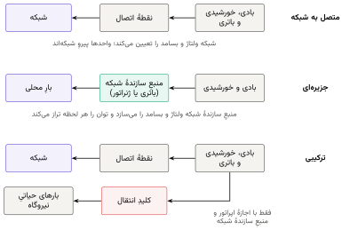
operating modes and what each needs (summary, teaching):
grid-connected (Plant P's mode): grid sets voltage and
frequency; units follow it (grid-following inverters)
islanded: a grid-forming source sets voltage and frequency;
storage or a generator balances every second; protection
must work with small fault currents
hybrid (grid-connected with a planned island for critical
loads): a transfer switch, a grid-forming battery inverter
and the operator's permission (chapters 19, 25, 28)| ویژگی | متصل به شبکه | جزیرهای | ترکیبی |
|---|---|---|---|
| سازندهٔ ولتاژ و بسامد | شبکه | منبعِ سازندهٔ شبکه | شبکه؛ در جزیره منبعِ سازنده |
| تراز در هر لحظه | شبکه | ذخیرهساز یا ژنراتور | شبکه؛ در جزیره ذخیرهساز |
| جریانِ اتصالِ کوتاه | از شبکه، زیاد | کم (اینورتر) | دو حالت برای حفاظت |
| مجوز | اتصال | ندارد (شبکهٔ مستقل) | اتصال و جزیره |
| نمونه | نیروگاهِ P | جزیرهٔ دورافتاده، معدن | بارهای حیاتیِ نیروگاه |
مثال 18.1 (نیروگاهِ P در کدام حالت) پرسش. با الزاماتِ فصلِ ۱۷، حالتِ بهرهبرداریِ نیروگاهِ P را تعیین کنید و بگویید جزیره برای چه چیزی و با چه شرطی پذیرفتنی است.
پاسخ. متصل به شبکه، با واحدهای پیروِ شبکه؛ جزیرهٔ برنامهریزیشده فقط برای بارهای حیاتیِ خودِ نیروگاه (200 kW، مثال 17.5) پشتِ کلیدِ انتقال، با یک منبعِ سازندهٔ شبکه (باتری یا منبعِ بیوقفه) و بی برقدار نگه داشتنِ شبکهٔ بیرون (بخش 17.4.10).
تفسیر. نیروگاهِ صادراتی برای پشتیبانیِ منطقه ساخته نشده است؛ جزیره کردنِ منطقه طراحی، حفاظت و اجازهٔ اپراتور میخواهد و اینجا هدف نیست (مثال 17.15). مرزِ روشن در معماری: کلیدِ انتقال میانِ شینهٔ مصرفِ داخلی و بارهای حیاتی. وارسی: باتریِ 40 MWh با 200 kW از نیمهپر حدودِ 74 ساعت (مثال 17.6).
- سه حالتِ بهرهبرداری را تعریف کنید.
- در حالتِ جزیرهای چه کسی توان را هر لحظه تراز میکند؟
- چرا حفاظت در حالتِ ترکیبی دو تنظیم میخواهد؟
18.2.2 پیروِ شبکه و سازندهٔ شبکه
ایده. اینورترِ پیروِ شبکه (فصلِ ۹) زاویهٔ ولتاژِ شبکه را با یک حلقهٔ قفلِ فاز دنبال میکند و جریان تزریق میکند؛ بی ولتاژِ شبکه کاری از آن برنمیآید. اینورترِ سازندهٔ شبکه خودش یک منبعِ ولتاژ با دامنه و بسامدِ مشخص است و بار را میگیرد؛ در جزیره همین لازم است. سه پیامدِ معماری:
- جریانِ اتصالِ کوتاه: اینورتر جریانِ خطای کمی، نزدیکِ ردهٔ خودش، میدهد؛ حفاظتِ جزیره باید با این جریانِ کم کار کند (فصلهای ۲۶ و ۲۷).
- تراز: منبعِ سازنده باید ذخیرهٔ انرژی پشتِ خود داشته باشد؛ باتری یا ژنراتور، نه آرایهٔ خورشیدی بهتنهایی.
- مجوز و قرارداد: کارکردهای سازندهٔ شبکه در شبکهٔ بزرگ فقط وقتی به کار میروند که تجهیز، قرارداد و قواعدِ اپراتور اجازه دهند (فصلهای ۲۰ و ۲۵).
- فرقِ منبعِ جریان و منبعِ ولتاژ را در زبانِ اینورتر بگویید.
- چرا آرایهٔ خورشیدی بهتنهایی منبعِ سازندهٔ خوبی نیست؟
- کدام کارکرد بی اجازهٔ اپراتور در شبکهٔ بزرگ به کار نمیرود؟
18.2.3 کوپلِ متناوب، مستقیم و آمیخته
ایده. باتری را میتوان به شینهٔ متناوب وصل کرد (کوپلِ متناوب، AC-coupled)، با اینورترِ خودش؛ یا به شینهٔ مستقیمِ آرایهٔ خورشیدی (کوپلِ مستقیم، DC-coupled)، با یک مبدلِ DC/DC و اینورترِ مشترک با خورشیدی. کوپلِ آمیخته هر دو را دارد: بخشی از ذخیره در بلوکهای خورشیدی، بخشی در شینهٔ متناوب.
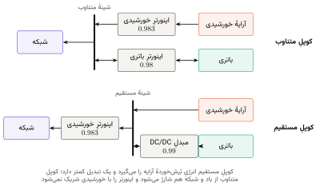
بازدهِ چند تبدیلِ پشتِ سرِ هم حاصلضربِ بازدههاست. اگر بازدهِ رفتوبرگشتِ سلولها \(\eta_\text{c}\) باشد، هر سو \(\sqrt{\eta_\text{c}}\) است. برای انرژیِ خورشیدی که از باتری میگذرد:
\[ \begin{aligned} \eta_\text{AC} &= \eta_\text{inv}\,\eta_\text{b}^{2}\,\eta_\text{c} \\ \eta_\text{DC} &= \eta_\text{dc}^{2}\,\eta_\text{c}\,\eta_\text{inv} \end{aligned} \tag{18.1}\]
که \(\eta_\text{inv}\) بازدهِ اینورترِ خورشیدی، \(\eta_\text{b}\) اینورترِ باتری و \(\eta_\text{dc}\) مبدلِ DC/DC است.
def chain(*effs: float) -> float:
"""Efficiency of conversions in series."""
out = 1.0
for e in effs:
out *= e
return out
def ac_coupled(eta_pv_inv: float, eta_bess_inv: float,
eta_cell: float) -> dict:
"""PV energy stored and returned through two AC inverters."""
store = chain(eta_pv_inv, eta_bess_inv, math.sqrt(eta_cell))
back = chain(math.sqrt(eta_cell), eta_bess_inv)
return {"pv_to_grid_via_battery": store * back, "battery_round_trip":
chain(eta_bess_inv, eta_cell, eta_bess_inv)}
def dc_coupled(eta_pv_inv: float, eta_dcdc: float, eta_cell: float) -> dict:
"""PV DC energy stored through a DC/DC converter and sent out through
the PV inverter."""
store = chain(eta_dcdc, math.sqrt(eta_cell))
back = chain(math.sqrt(eta_cell), eta_dcdc, eta_pv_inv)
return {"pv_to_grid_via_battery": store * back, "battery_round_trip":
chain(eta_dcdc, eta_cell, eta_dcdc)}conversion chains of a battery storing PV energy (A-286):
AC-coupled: PV inverter 0.983, battery inverter 0.98 twice, cells 0.9
PV energy back to the grid via the battery: 85.0 %
DC-coupled: DC/DC 0.99 twice, cells, PV inverter once
PV energy back to the grid via the battery: 86.7 %
the DC route saves one AC conversion: +1.7 points on every MWh shiftedمثال 18.2 (یک تبدیل کمتر، یک و هفتدهم درصد) پرسش. با بازدههای A-286 سهمِ انرژیِ خورشیدیِ ذخیرهشدهای را که به شبکه برمیگردد در دو کوپل حساب کنید.
پاسخ. با معادلهٔ 18.1:
\[ \begin{aligned} \eta_\text{AC} &= 0.983 \times 0.98^2 \times 0.9 = 0.850 \\ \eta_\text{DC} &= 0.99^2 \times 0.9 \times 0.983 = 0.867 \end{aligned} \]
تفسیر. کوپلِ مستقیم یک تبدیلِ متناوب کمتر دارد و روی هر مگاواتساعتِ جابهجاشده 1.7 واحدِ درصد میبرد. اما بازده تنها معیار نیست: باتریِ کوپلِ مستقیم فقط از آرایه شارژ میشود و در دشارژ اینورتر را با خورشیدی شریک است (مثال 18.3). وارسی: خروجیِ بالا 85.0 % و 86.7 % (E01، E02).
| ویژگی | کوپلِ متناوب | کوپلِ مستقیم | آمیخته |
|---|---|---|---|
| شارژ از باد و شبکه | بله | نه | بخشِ متناوب |
| گرفتنِ بُرشِ اینورتر | نه | بله | بخشِ مستقیم |
| اینورترِ مشترک | نه | بله، حدِ دشارژ | بخشِ مستقیم |
| شمارِ تبدیل | بیشتر | کمتر | میانه |
| رابط میانِ سازندگان | کمتر | اینورتر، مبدل، باتری | بیشتر |
| گسترشِ مستقل | آسان | وابسته به بلوک | میانه |
- کوپلِ متناوب، مستقیم و آمیخته را تعریف کنید.
- چرا بازدهِ یکسویهٔ سلول جذرِ بازدهِ رفتوبرگشت گرفته میشود؟
- باتریِ کوپلِ مستقیم از کدام منبعها نمیتواند شارژ شود؟
18.2.4 یک سال باتری با دو کوپل
ایده. برای سنجیدنِ «انرژیِ گمشده» سادهترین کار: باتریِ S1 (20 MW، 40 MWh) فقط انرژیای را بگیرد که بی آن از دست میرود و از ساعتِ ۱۸ تا ۲۲ پس بدهد. کوپلِ مستقیم بُرشِ اینورتر و سهمِ خورشیدیِ بُرشِ حدِ صادرات را میگیرد؛ کوپلِ متناوب فقط بُرشِ حدِ صادرات را. مدلِ 15.1، سالِ داده.
S1 battery used only for energy that would be lost (one year):
lost today: PV clipping 782 MWh (AC equivalent), export limit 227 MWh
AC-coupled: stores 227 MWh, returns 196 MWh
DC-coupled: stores 1,020 MWh, returns 885 MWh
only the DC coupling reaches the clipped DC energy; the AC
coupling can also charge from wind and the grid and discharge
at any hour without sharing the PV inverter; the market uses
of chapter 19, not clipping, decide the coupling hereمثال 18.3 (هشتصد و هشتاد و پنج در برابرِ صد و نود و شش) پرسش. انرژیِ گمشده، ذخیرهشده و برگشتی را در دو کوپل بنویسید و آن را با ظرفیتِ باتری مقایسه کنید.
پاسخ. خروجیِ بالا: گمشده 782 MWh بُرشِ اینورتر و 227 MWh بُرشِ حد؛ کوپلِ متناوب 227 را میگیرد و 196 MWh پس میدهد؛ کوپلِ مستقیم 1,020 را میگیرد و 885 MWh پس میدهد.
تفسیر. باتریِ 40 MWh با یک چرخهٔ روزانه در سال تا حدودِ 14.6 GWh جابهجا میکند؛ انرژیِ گمشده فقط چند درصدِ این ظرفیت است. پس انرژیِ گمشده کوپل را تعیین نمیکند؛ کاربردهای بازار (جابهجاییِ قیمت، ذخیره، فصلهای ۱۹ تا ۲۱) تعیین میکنند، و در آنها کوپلِ متناوب آزادتر است (بخش 18.6). وارسی: \(1{,}020 \times 0.867 = 884\)، نزدیکِ 885.
- کوپلِ مستقیم کدام دو انرژیِ گمشده را میگیرد؟
- چرا انرژیِ گمشده برای انتخابِ کوپل کافی نیست؟
- حدِ دشارژِ کوپلِ مستقیم در عصر از کجا میآید؟
18.2.5 نیروگاهِ هیبریدیِ همجا و یکپارچه
ایده. «هیبریدی» سه معنا دارد که معماری را عوض میکنند:
- همجا (co-located): نیروگاههای جدا روی یک زمین، هر کدام با اتصال، کنتور و قراردادِ خود؛ فقط زمین و شاید جاده مشترک است.
- یکپارچه (integrated): یک نقطهٔ اتصال، یک حدِ صادرات، یک کنترلگرِ نیروگاه و یک کنتورِ درآمد؛ منبعها حدِ مشترک را تقسیم میکنند (مثال 15.28).
- مجازی (virtual): نیروگاههای دور از هم که فقط در بازار یا برنامهریزی با هم دیده میشوند.
نیروگاهِ P یکپارچه است: صرفهاش اتصالِ مشترک است (110 MW منبع روی 100 MW حد)، و بهایش بُرش، کنترلِ مشترک و قاعدهٔ تقسیمِ بُرش و درآمد میانِ مالکانِ احتمالیِ جدا (فصلهای ۲۰ و ۲۱). نیروگاهِ همجا سادهتر قرارداد میبندد ولی دو بار اتصال میپردازد.
- سه معنای «هیبریدی» را بنویسید.
- صرفه و بهای نیروگاهِ یکپارچه چیست؟
- اگر باد و خورشیدی دو مالک داشته باشند، کدام قاعده لازم میشود؟
18.2.6 مرزهای جریانِ توان
ایده. هر مرزی که انرژی از آن میگذرد سه چیز دارد: یک عدد (انرژیِ سالانه)، یک کنتور یا محاسبه، و یک مالک که آن عدد را تضمین یا پرداخت میکند. مدلِ 15.1 همین مرزها را دارد؛ اینجا آنها را با نامِ کنتور مینویسیم: M1 و M2 خروجیِ باد و خورشیدی در شینهٔ 33 kV، M3 نقطهٔ اتصال پیش از حد، M4 کنتورِ درآمد.
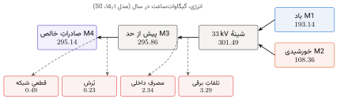
energy at the power-flow boundaries of Plant P (model 15.1, S0):
boundary GWh/yr
M1 wind farm at the 33 kV bus 193.14
M2 PV plant at the 33 kV bus 108.36
sum at the 33 kV bus 301.49
less transformer and line losses 3.29
less own use (auxiliaries) 2.34
M3 at the POC before the limit 295.86
less export-limit curtailment 0.23
less grid outages 0.49
M4 revenue meter, net export 295.14
each line is a boundary someone owns: the turbine and PV
suppliers guarantee M1 and M2, the EPC contractor the losses,
the grid operator the limit, the buyer pays on M4مثال 18.4 (از سیصد و یک تا دویست و نود و پنج) پرسش. انرژی را در هر مرز بنویسید، تفاوتِ دو مرزِ پیاپی را با نامِ تلف توضیح دهید و مالکِ هر عدد را بگویید.
پاسخ. خروجیِ بالا و شکل 18.3: باد 193.14 و خورشیدی 108.36، جمع 301.49 GWh؛ تلفاتِ برقی 3.29 و مصرفِ داخلی 2.34، پس 295.86 در نقطهٔ اتصال؛ بُرش 0.23 و قطعیِ شبکه 0.49، پس 295.14 GWh در کنتورِ درآمد.
تفسیر. سازندگانِ توربین و خورشیدی دربارهٔ M1 و M2 تضمین میدهند (منحنیِ توان، نسبتِ عملکرد)، پیمانکارِ اجرا دربارهٔ تلفات، اپراتور دربارهٔ حد و خریدار بر پایهٔ M4 میپردازد. اختلافِ هر دو مرز یک ادعای ممکن است اگر مالکش روشن نباشد؛ پس جای کنتورها بخشی از معماری است (بخش 17.6.3). وارسی: \(301.49 - 3.29 - 2.34 = 295.86\) و \(295.86 - 0.23 - 0.49 = 295.14\).
- چهار کنتورِ M1 تا M4 کجا هستند؟
- کدام تلف همیشه هست، حتی وقتی نیروگاه تولید نمیکند؟
- چرا هر مرز به یک مالک نیاز دارد؟
18.2.7 مصرفِ داخلی و تلفات در معماری
ایده. مصرفِ داخلی (به انگلیسی auxiliaries) از کجا تغذیه میشود؟ در روز از تولیدِ خودِ نیروگاه، در شب و آرامش از شبکه (واردات، مثال 15.21)، و در قطعیِ شبکه بارهای حیاتی از منبعِ پشتیبان. معماری سه مسیر را نشان میدهد: ترانسفورماتورِ کمکی از شینهٔ 33 kV (800 kVA، مثال 17.32)، واردات از راهِ همان ترانسفورماتورهای اصلی، و کلیدِ انتقال به منبعِ بیوقفه یا باتری برای بارهای حیاتی.
| تلف یا مصرف | کجا رخ میدهد | همیشه یا با بار | مالکِ معمول |
|---|---|---|---|
| بیباریِ ترانسفورماتورها | پست و بلوکها | همیشه | پیمانکار، سپس بهرهبردار |
| بارِ ترانسفورماتور، کابل، خط | جمعآوری و صادرات | با مجذورِ توان | پیمانکار؛ خط به مرز بسته است |
| تبدیلِ اینورتر و مبدل | بلوکها، توربین، باتری | با بار | سازنده (منحنیِ بازده) |
| مصرفِ داخلی | همهٔ سامانهها | هر دو | بهرهبردار |
| بُرش و قطعی | نقطهٔ اتصال | با حد و شبکه | اپراتور و قرارداد |
یک عددِ همیشگی. بیباریِ ترانسفورماتورها در مدلِ 15.1 برابرِ 0.10 MW است، یعنی \(0.10 \times 8760 = 876\ \text{MWh}\) در سال، چه نیروگاه تولید کند چه نه؛ انتخابِ دو ترانسفورماتور بهجای یکی این عدد را کمی بالا میبرد و بهایش افزونگی است (بخش 18.3.6).
- سه مسیرِ تغذیهٔ مصرفِ داخلی را بنویسید.
- کدام تلف با مجذورِ توان بزرگ میشود؟
- چرا واردات در شب در مرزِ قرارداد اهمیت دارد؟
18.2.8 نمودارِ تکخطیِ ساده
ایده. نمودارِ تکخطی (به انگلیسی single-line diagram) هر مدارِ سهفاز را با یک خط نشان میدهد: منبعها، شینهها، ترانسفورماتورها، کلیدها، کنتورها و مرزها. نسخهٔ معماری ساده است: فقط آنچه انتخابهای این فصل را نشان میدهد. ردهها، حفاظت و جزئیاتِ کلیدها در فصلهای ۲۶ و ۲۷ میآیند.
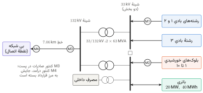
مثال 18.5 (خطا روی بخشِ پایینِ شینه) پرسش. در شکل 18.4 اگر بخشِ پایینِ شینهٔ 33 kV خطا کند و کلیدِ میانبخش باز شود، کدام منبعها و مصرفها جدا میشوند و کدام میمانند؟
پاسخ. جدا: بلوکهای خورشیدی، باتری، ترانسفورماتورِ کمکی و یکی از دو ترانسفورماتورِ اصلی. میماند: سه رشتهٔ بادی و ترانسفورماتورِ دیگر، که تا حدودِ 59.8 MW صادر میکند (E12).
تفسیر. چیدمانِ منبعها روی دو بخش یک انتخاب است: اینجا باد بالا و خورشیدی و باتری پاییناند؛ چیدمانِ دیگر (هر بخش نیمی از هر منبع) خطای شینه را متعادلتر میکند اما کابلکشی را پیچیدهتر. مصرفِ داخلی باید از هر دو بخش تغذیهپذیر باشد، وگرنه خطای یک بخش کنترل و اسکادا را هم خاموش میکند. وارسی: \(63 \times 0.95 = 59.85\ \text{MW}\).
- نمودارِ تکخطی چه چیزهایی را نشان میدهد و چه چیزهایی را در نسخهٔ معماری نه؟
- کلیدِ میانبخش چه کاری میکند؟
- چرا مصرفِ داخلی باید از دو بخش تغذیهپذیر باشد؟
18.2.9 منبعِ جزیرهٔ بارهای حیاتی
ایده. جزیرهٔ برنامهریزیشدهٔ مثال 18.1 یک منبعِ سازندهٔ شبکه میخواهد که دو چیز را تحمل کند: بارِ پیوسته و راهاندازیِ بزرگترین موتور (پمپِ آب، تهویهٔ باتری). موتور در راهاندازی چند برابرِ جریانِ نامیاش را میکشد؛ اگر منبع آن را نتواند، ولتاژِ جزیره میافتد و همهچیز خاموش میشود. جمعِ سادهی کیلوولتآمپرها کرانِ بالای محافظهکارانه است.
source for the critical-load island (teaching, A-286):
running load 200 kW at pf 0.9: 222 kVA
largest motor 30 kW starting at x6 (pf 0.35): 212 kVA
peak the source must carry: 434 kVA (kVA added, an upper bound)
options:
dedicated grid-forming UPS of 500 kVA with 400 kWh: 2 h,
longer only with the main battery behind it
one 5 MVA battery block switched to the island: days,
but that block leaves the market while it serves
a 500 kVA generator: fuel-limited, a new interface
a soft starter on the pump cuts the start to about half
and lets a smaller source carry the islandمثال 18.6 (چهارصد و سی و چهار کیلوولتآمپر) پرسش. اوجِ بارِ جزیره را با راهاندازیِ پمپ حساب کنید، سه گزینهٔ منبع را مقایسه کنید و راهِ کوچک کردنِ اوج را بگویید.
پاسخ. خروجیِ بالا: بارِ پیوسته 222 kVA، راهاندازیِ پمپ 212 kVA، اوج 434 kVA. گزینهها: منبعِ بیوقفهٔ سازندهٔ 500 kVA با 400 kWh (دو ساعت)؛ یک بلوکِ 5 MVA باتری (روزها، اما بیرون از بازار)؛ ژنراتورِ 500 kVA (محدود به سوخت، رابطِ تازه). راهاندازِ نرم اوجِ راهاندازی را حدودِ نصف میکند.
تفسیر. اندازهٔ منبعِ جزیره را اوجِ گذرا تعیین میکند، نه انرژی؛ پس یک تجهیزِ کوچکِ کمهزینه (راهاندازِ نرم) یک الزامِ بزرگ را کوچک میکند. این همان منطقِ معماری است: الزام را پیش از اندازه کردنِ منبع وارسی کن. ترکیبِ رایج: منبعِ بیوقفه برای دقیقهها و ساعتهای اول، و بلوکِ باتری فقط در قطعیِ طولانی با تصمیمِ بهرهبردار. وارسی: \(200/0.9 + 30/0.85 \times 6 = 222 + 212 = 434\).
- چرا اوجِ گذرا اندازهٔ منبعِ جزیره را تعیین میکند؟
- راهاندازِ نرم چه چیزی را عوض میکند؟
- بهای استفاده از یک بلوکِ باتری برای جزیره چیست؟
18.3 ب. انتخابِ معماری
انتخابِ معماری یعنی انتخابِ چند ظرفیت و چند نسبت و پذیرفتنِ بهای هر کدام. معیارها دهتاست: نسبتهای ظرفیت، حدِ صادرات، افزونگی، گسترش، نگهداشتپذیری، کنترلپذیری، بلوغِ فناوری، هزینه، ریسک و پیچیدگی. این بخش هر کدام را با یک عدد از نیروگاهِ P نشان میدهد؛ ابزارِ مشترک غربال است: شکلِ ساعتیِ مدلِ 15.1 با اندازههای تازه بزرگ و کوچک میشود و ویک و بارگیریِ اینورتر ثابت فرض میشوند.
18.3.1 نسبتهای ظرفیت
ایده. چند نسبت معماری را خلاصه میکنند. هر نسبتِ بزرگتر از یک انرژیِ بیشتری در ساعتهای عادی میخرد و در ساعتهای اوج با بُرش یا محدودسازی میپردازد.
capacity ratios of Plant P (S1 with the battery):
ratio value
PV DC / PV AC (60.06 MWp / 50 MW) 1.20
wind / PV AC (60 / 50 MW) 1.20
wind + PV AC / export limit (110 / 100) 1.10
battery power / export limit (20 / 100) 0.20
battery energy / power (40 / 20) 2 h
transformers / export (2 x 63 MVA / 100) 1.26
each ratio is a choice with a price: >1 buys energy in
the other hours and pays in curtailment or clipping| نسبت | چه چیزی را میسنجد | بهای بزرگتر شدن | فصل |
|---|---|---|---|
| مستقیم به متناوبِ خورشیدی | پر کردنِ اینورتر در صبح و عصر | بُرشِ اینورتر در ظهر | ۱۰ |
| باد به خورشیدی | مکمل بودنِ روز و شب، فصلها | بُرشِ همزمان در روزهای پرباد و آفتابی | ۱۲ |
| منبع به حدِ صادرات | استفاده از اتصالِ مشترک | بُرشِ حدِ صادرات | ۱۵ |
| توانِ باتری به حد | سهمِ قابلِ جابهجایی | سرمایهٔ باتری | ۱۹ |
| انرژی به توانِ باتری | ساعتهای جابهجایی | سرمایه، فرسایش | ۱۹ |
| ترانسفورماتور به صادرات | حاشیه و یکی کمتر | سرمایه، بیباری | ۲۶ |
مثال 18.7 (یک و یکدهم روی اتصال) پرسش. نسبتهای ظرفیتِ نیروگاهِ P را بنویسید و بگویید کدام نسبت مستقیماً به بُرشِ فصلِ ۱۵ بسته است.
پاسخ. خروجیِ بالا: مستقیم به متناوب 1.20، باد به خورشیدی 1.20، منبع به حد 1.10، باتری 0.20 حد و دو ساعت، ترانسفورماتورها 1.26 برابرِ صادرات. نسبتِ منبع به حد بُرشِ 227 MWh را میسازد (مثال 15.18).
تفسیر. نسبتِ 1.10 کوچک است، چون باد و خورشید کم همزمان پرتواناند (بخش 12.2.16)؛ بخشِ بعد نشان میدهد با نسبتهای بزرگتر چه میشود. وارسی: \((60 + 50)/100 = 1.10\) (P11).
- شش نسبتِ ظرفیت را با بهای بزرگ شدنِ هر کدام بنویسید.
- چرا نسبتِ منبع به حد میتواند بزرگتر از یک باشد؟
- نسبتِ ترانسفورماتور به صادرات چه چیزی را میخرد؟
18.3.2 آمیزهٔ باد و خورشیدی با هزینهٔ آموزشی
ایده. برای هر آمیزه (شمارِ توربین، توانِ خورشیدی) دو عدد لازم است: انرژیِ تحویلی پس از حد، و هزینهٔ سالانه. هزینهٔ سرمایه با ضریبِ اقساط (\(\text{AF}\)، فصلِ ۳) سالانه میشود و بهرهبرداری به آن افزوده میشود:
\[ C_\text{MWh} = \frac{I_0/\text{AF} + o\,I_0}{E_\text{d}} \tag{18.2}\]
که \(I_0\) سرمایه، \(o\) سهمِ سالانهٔ بهرهبرداری و \(E_\text{d}\) انرژیِ تحویلیِ سالانه است. هزینهها آموزشیاند (A-287).
def screen(n_wtg: int = 12, pv_mw: float = 50.0, limit: float = 100.0):
"""Delivered and curtailed energy (MWh) and the teaching cost per
delivered MWh for a plant of n turbines, pv_mw AC and an export
limit; hourly shapes of model 15.1 scaled to the sizes."""
r = s15.plant_year()
cfg = replace(s15.ModelConfig(), export_mw=limit,
aux_wind_mw=n_wtg * 168.2 / 8760)
w = r["w_av"] * n_wtg / 12
pv = r["pv_av"] * pv_mw / 50.0
poc, _ = ym.plant_end(w, pv, cfg, NO_OUT)
delivered = np.minimum(poc, limit).clip(0, None).sum()
curtailed = np.clip(poc - limit, 0, None).sum()
capex = (C["wind_per_mw"] * 5.0 * n_wtg + C["pv_per_mw_ac"] * pv_mw
+ C["connection"]
+ C["connection_per_mw"] * max(limit - 100.0, 0.0))
yearly = capex / annuity(C["rate"], C["years"]) + C["opex_share"] * capex
return delivered, curtailed, 1000.0 * yearly / delivered, capexwind/PV mix at the 100 MW limit (teaching costs A-287):
turbines PV MW delivered GWh curtailed % cost u/MWh
8 25 179.8 0.00 50.68
8 50 233.2 0.00 47.35
8 75 285.7 0.20 45.40
8 100 332.0 2.09 44.88
10 25 211.3 0.00 49.71
10 50 264.6 0.00 46.99
10 75 315.4 0.72 45.54
10 100 359.2 3.02 45.35
12 25 242.7 0.00 49.02
12 50 295.8 0.08 46.75
12 75 344.1 1.42 45.79
12 100 385.8 3.97 45.85
14 25 274.1 0.00 48.49
14 50 325.7 0.49 46.73
14 75 371.7 2.24 46.13
14 100 411.6 4.92 46.35
16 25 305.4 0.01 48.09
16 50 354.5 1.15 46.87
16 75 398.6 3.12 46.52
16 100 436.7 5.90 46.88
lowest teaching cost: 8 turbines and 100 MW PV, 44.88 u/MWh
the lowest cost sits at the edge of the table: with these
teaching costs PV energy is cheaper, so the table shows a
direction, not an optimum; more PV puts the energy into
midday hours (price shape, chapter 21), needs land (chapter
14) and raises curtailment; the spread is under 13 %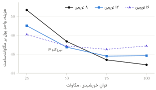
مثال 18.8 (کمینه در لبهٔ جدول) پرسش. کمهزینهترین آمیزهٔ جدول را پیدا کنید، جای نیروگاهِ P را نشان دهید و بگویید چرا این جدول آمیزه را «انتخاب» نمیکند.
پاسخ. خروجیِ بالا و شکل 18.5: کمترین 44.88 واحد بر مگاواتساعت با ۸ توربین و 100 MW خورشیدی؛ نیروگاهِ P (۱۲ و 50) 46.75، حدودِ 4 % بیشتر؛ گسترهٔ جدول کمتر از 13 %.
تفسیر. کمینه در لبهٔ جدول است؛ پس جدول جهت را نشان میدهد، نه بهینه را: با این هزینههای آموزشی انرژیِ خورشیدی ارزانتر است. اما انرژیِ بیشترِ خورشیدی در ساعتهای ظهر میآید که در بسیاری از بازارها ارزانند (شکلِ قیمت، فصلِ ۲۱)، زمینِ بیشتری میخواهد (فصلِ ۱۴) و بُرش را بالا میبرد (2.09 % با ۸ و 100). هزینه بر مگاواتساعت ارزش بر مگاواتساعت نیست. وارسی: با 12 و 50: \(I_0 = 78{,}000 + 36{,}000 + 15{,}000 = 129{,}000\ \text{k u}\)؛ \(129{,}000 \times 0.1072 / 295.8 = 46.75\).
- معادلهٔ 18.2 را با کلمه بخوانید.
- چرا کمینه در لبهٔ جدول «بهینه» نیست؟
- سه دلیل بنویسید که خورشیدیِ بیشتر را محدود میکند.
18.3.3 حدِ صادرات
ایده. با همان منبعها، حدِ صادرات را از 70 تا 120 MW تغییر میدهیم. هر 10 MW حدِ بیشتر انرژیِ کمتری میافزاید، چون ساعتهای بالای هر حد کماند.
export limit for the Plant P sizes (12 turbines, 50 MW PV):
limit MW delivered GWh curtailed GWh extra GWh per 10 MW
70 285.16 9.81
80 290.54 4.86 5.38
90 293.98 1.76 3.44
100 295.78 0.23 1.80
110 296.23 0.00 0.45
120 296.41 0.00 0.18
each step of 10 MW buys less: the last hours above a limit
are few; the limit is a grid decision (chapter 17) and a
price, not a free design variable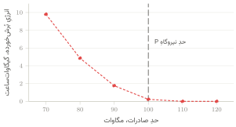
مثال 18.9 (هر ده مگاوات کمتر میخرد) پرسش. انرژیِ افزوده با هر 10 MW حدِ بیشتر را بنویسید و بگویید حدِ 100 MW کجای این منحنی است.
پاسخ. خروجیِ بالا و شکل 18.6: از 70 به 80 5.38 GWh، به 90 3.44، به 100 1.80، به 110 0.45، به 120 0.18. در 100 MW بُرش 0.23 GWh است.
تفسیر. حدِ 100 MW در «زانوی» منحنی است: پایینتر از آن بُرش تند بالا میرود (9.81 GWh در 70)، بالاتر چیزی نمیخرد. اما حد متغیرِ طراحیِ آزاد نیست: اپراتور آن را از ظرفیتِ شبکه میدهد (مثال 17.14) و هزینهٔ اتصال با آن بالا میرود. اگر اپراتور 80 MW بدهد، 5.3 GWh در سال از دست میرود؛ باتری یا حدِ پویا (مثال 17.16) بخشی را برمیگرداند. وارسی: \(295.78 - 293.98 = 1.80\) (P32).
- چرا انرژیِ افزوده با هر پلهٔ حد کم میشود؟
- «زانوی» منحنی را تعریف کنید.
- اگر اپراتور حدِ کمتری بدهد، سه پاسخِ معماری بنویسید.
18.3.4 بُرش و ذخیرهٔ توان
ایده. اگر نیروگاه بخواهد ذخیرهٔ افزایشی بدهد (توانِ آماده برای بالا رفتن)، باید زیرِ توانِ دردسترس کار کند؛ این انرژیِ ریخته است. در ساعتهایی که حدِ صادرات خودش بُرش میزند، این ذخیره مجانی است.
energy given up to hold upward reserve headroom (one year):
headroom MW lost MWh lost % hours with free headroom
2 15,990 5.41 48
5 38,721 13.09 11
10 73,829 24.96 0
in hours already curtailed by the limit the headroom costs
nothing; elsewhere it spills energy; a battery can hold the
same reserve without spilling, at the cost of its state of
charge (chapters 19 and 20); reserve is sold only where the
rules and the contract allow itمثال 18.10 (دو مگاوات، پنج درصد) پرسش. انرژیِ از دست رفته برای نگه داشتنِ ذخیرهٔ 2، 5 و 10 MW در همهٔ ساعتها را بنویسید و آن را با باتری مقایسه کنید.
پاسخ. خروجیِ بالا: 16.0، 38.7 و 73.8 GWh، یعنی 5.4، 13.1 و 25.0 %؛ ذخیرهٔ مجانی فقط در 48، 11 و 0 ساعت.
تفسیر. ذخیرهٔ پیوسته از منبعهای تجدیدپذیر گران است، چون نیروگاهِ P کم بُرش میخورد. باتری همان ذخیره را بی ریختنِ انرژی میدهد، به شرطِ نگه داشتنِ حالتِ شارژ در جای مناسب (فصلهای ۱۹ و ۲۰). ذخیره فقط وقتی فروخته میشود که قواعد و قرارداد اجازه دهند؛ معماری فقط باید راهش را باز بگذارد (کنترلگر، اندازهگیری). وارسی: \(2\ \text{MW} \times 8{,}000\ \text{h} \approx 16\ \text{GWh}\) (E11).
- ذخیرهٔ افزایشی را تعریف کنید.
- چرا ذخیره در ساعتهای بُرش مجانی است؟
- باتری برای ذخیره چه چیزی را باید مدیریت کند؟
18.3.5 باتری و بازگرداندنِ بُرش
ایده. آیا باتری برای گرفتنِ انرژیِ بُرشخورده بهتنهایی میارزد؟ باتریِ کوپلِ متناوب با دو ساعت انرژی در هر ساعتِ مازاد شارژ و در نخستین جای خالیِ زیرِ حد دشارژ میشود (سیاستِ حریصانه، بی پیشبینی). دو حد: 100 MW (نیروگاهِ P) و 80 MW (اگر اپراتور کمتر بدهد).
def recapture(p_mw: float, limit: float) -> float:
"""MWh a year an AC-coupled battery of p_mw and 2 h returns from
energy the export limit would curtail (greedy: charge on surplus,
discharge into the next headroom)."""
poc = s15.plant_year()["poc"]
e_max, one = 2.0 * p_mw, math.sqrt(RT)
soc = back = 0.0
for p in poc:
if p > limit: # surplus: charge
ch = min(p - limit, p_mw, (e_max - soc) / one)
soc += ch * one
elif soc > 0: # headroom: discharge
d = min(limit - p, p_mw, soc * one)
soc -= d / one
back += d
return backbattery size against energy recaptured from the export limit
(AC-coupled, 2 h, greedy; teaching costs A-287):
limit battery MW recaptured MWh value k u/yr cost k u/yr
80 0 0 0.0 0.0
80 5 750 37.5 348.3
80 10 1,377 68.9 696.7
80 20 2,407 120.3 1,393.4
80 40 3,670 183.5 2,786.8
100 0 0 0.0 0.0
100 5 161 8.0 348.3
100 10 196 9.8 696.7
100 20 196 9.8 1,393.4
100 40 196 9.8 2,786.8
recapture alone never pays for the battery: at 100 MW there
is little to recapture, at 80 MW a few GWh; the battery is
bought for price shifting and services (chapters 19-21) and
recapture is a by-product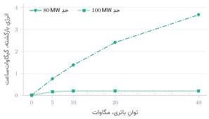
مثال 18.11 (سود ده هزار، هزینه هزار و چهارصد هزار) پرسش. انرژیِ بازگشته، ارزش و هزینهٔ سالانهٔ باتریهای 5 تا 40 MW را در دو حد بنویسید و بگویید چرا منحنیِ 100 MW زود صاف میشود.
پاسخ. خروجیِ بالا و شکل 18.7: با 100 MW از 10 MW به بالا همهاش 196 MWh (9.8 هزار واحد در سال)؛ با 80 MW از 750 تا 3,670 MWh (37.5 تا 183.5 هزار)؛ هزینهٔ سالانه از 348 تا 2,787 هزار.
تفسیر. با حدِ 100 MW کلِ بُرش 227 MWh است و باتریِ 10 MW همه را میگیرد؛ بزرگتر شدن چیزی نمیافزاید. حتی با 80 MW، ارزش نه تا پانزده برابر کمتر از هزینه است. پس باتری در معماری برای جابهجاییِ قیمت و خدمات خریده میشود (فصلهای ۱۹ تا ۲۱) و بازگرداندنِ بُرش محصولِ جانبی است؛ این همان دلیلی است که کوپل را کاربردهای بازار تعیین میکنند (مثال 18.3). وارسی: \(227 \times 0.864 = 196\)؛ بازدهِ رفتوبرگشت \(0.98 \times 0.9 \times 0.98 = 0.864\).
- سیاستِ «حریصانه» در این برنامه چه میکند و چه چیزی را نمیبیند؟
- چرا منحنیِ 100 MW بالای 10 MW صاف است؟
- اگر قیمتِ ساعتهای عصر سه برابر باشد، کدام بخشِ محاسبه عوض میشود؟
18.3.6 افزونگی: ترانسفورماتورِ اصلی
ایده. افزونگی (به انگلیسی redundancy) یعنی داشتنِ بیش از حدِ لازم تا خرابیِ یکی همه را از کار نیندازد. برای هر گزینه دو عدد لازم است: امیدِ انرژیِ ازدسترفته در سال و انرژیِ یک رخداد. اگر نرخِ خرابی \(\lambda\) در سال، زمانِ تعمیر \(t_\text{r}\) ساعت و توانِ میانگینِ ازدسترفته \(\bar{P}_\text{lost}\) باشد:
\[ E_\text{u} = \lambda\, t_\text{r}\, \bar{P}_\text{lost} \tag{18.3}\]
برای یک ترانسفورماتور، همهٔ توان از دست میرود؛ برای دو ترانسفورماتورِ 63 MVA، فقط بخشِ بالای 59.85 MW. نرخها آموزشیاند (A-288).
main transformer redundancy (A-288, expected values):
one 125 MVA unit, no spare: 1,479 MWh/yr expected, one event 147.9 GWh
one unit with a shared spare: 243 MWh/yr expected, one event 24.3 GWh
two 63 MVA units: 178 MWh/yr expected, one event 8.9 GWh
the expected values are small next to 295 GWh; the single
event is not: half a year without export is what lenders
and owners insure against, so redundancy is bought for the
tail, not for the mean (chapter 16)مثال 18.12 (صد و چهل و هشت گیگاواتساعت در یک رخداد) پرسش. امید و انرژیِ یک رخداد را برای سه گزینه بنویسید و بگویید افزونگی برای کدام یک خریده میشود.
پاسخ. خروجیِ بالا: یک ترانسفورماتور بی یدک 1,479 MWh در سال و 147.9 GWh در یک رخداد؛ با یدکِ مشترک 243 و 24.3؛ دو ترانسفورماتور 178 و 8.9 GWh.
تفسیر. امیدها کنارِ 295 GWh کوچکاند؛ اما یک رخدادِ ششماهه نیمی از درآمدِ یک سال است (7.39 میلیون واحد، P17) و وامدهنده و بیمهگر برای همین دُم نگرانند (فصلِ ۱۶). افزونگی برای دُم خریده میشود، نه برای میانگین. یدکِ مشترک (در انبارِ مالک یا میانِ چند نیروگاه) راهِ سوم است. وارسی: \(0.01 \times 4{,}380 \times 33.76 = 1{,}479\) (E07).
- معادلهٔ 18.3 را با کلمه بخوانید.
- چرا امیدِ کوچک افزونگی را بیفایده نمیکند؟
- یدکِ مشترک چه چیزی را کوتاه میکند؟
18.3.7 نگهداشتپذیری: اینورترِ مرکزی یا رشتهای
ایده. نگهداشتپذیری (به انگلیسی maintainability) یعنی خرابی چقدر زود و ارزان رفع میشود. نیروگاهِ P ده اینورترِ مرکزیِ 5 MW دارد (فصلِ ۱۰)؛ گزینهٔ دیگر دویست اینورترِ رشتهایِ 250 kW است. با معادلهٔ 18.3 برای هر واحد:
PV inverter architecture (A-288, expected values):
option units failures/yr lost MWh/yr MWh/failure
central 10 x 5 MW 10 5.0 445 89.1
string 200 x 250 kW 200 20.0 30 1.5
string inverters fail more often in total but each failure
loses less and is swapped in hours; central units mean fewer
call-outs, each costlier in energy and skilled work; both are
small: the choice turns on cost, service model and the grid
functions the plant must provide (chapters 9, 25 and 51)مثال 18.13 (بیست خرابی یا پنج خرابی) پرسش. شمارِ خرابی، انرژیِ ازدسترفته و انرژیِ هر خرابی را در دو گزینه مقایسه کنید.
پاسخ. خروجیِ بالا: مرکزی 5 خرابی در سال، 445 MWh، 89.1 MWh هر خرابی؛ رشتهای 20 خرابی، 30 MWh، 1.5 MWh هر خرابی.
تفسیر. رشتهای انرژیِ کمتری از دست میدهد ولی چهار برابر مراجعه میخواهد؛ مرکزی مراجعهٔ کمتری دارد ولی هر خرابی گران و نیازمندِ کارِ تخصصی است. هر دو کنارِ 108 GWh خورشیدی کوچکاند؛ پس انتخاب را هزینه، مدلِ خدمات (پیمانکار یا خودِ مالک) و کارکردهای شبکهای که اینورتر باید بدهد (فصلهای ۹، ۲۵ و ۵۱) تعیین میکنند. وارسی: \(12.37 / 10 \times 72 = 89.1\ \text{MWh}\) (E14).
- نگهداشتپذیری را تعریف کنید.
- چرا شمارِ خرابیِ رشتهایها بیشتر ولی انرژیِ ازدسترفته کمتر است؟
- سه عاملِ غیرانرژی در این انتخاب را نام ببرید.
18.3.8 گسترشِ مرحلهای
ایده. اگر مالک بخواهد بعدها 25 MW خورشیدی بیفزاید، مرحلهٔ نخست باید جای آن را بگذارد: زمین، بیِ یدکِ 33 kV، ظرفیت یا جای ترانسفورماتورِ سوم، مسیرِ کابل و کنترل و حفاظتی که بلوکهای بیشتری را بپذیرد.
staged PV extension of 25 MW AC (teaching):
today: 295.8 GWh, 46.75 u/MWh
+ 25 MW PV at 100 MW: +48.3 GWh, curtailed 4.9 GWh, 45.79 u/MWh
+ 25 MW PV at 120 MW: +53.3 GWh, curtailed 0.5 GWh, 45.68 u/MWh
what the first stage must leave: land, a spare 33 kV bay,
transformer capacity or space for a third unit, a cable
route, and protection and control that can take more
blocks; cheap now, costly to retrofit with outagesمثال 18.14 (چهل و هشت یا پنجاه و سه گیگاواتساعت) پرسش. انرژیِ افزوده و بُرشِ گسترش را با حدِ 100 و 120 MW بنویسید و بگویید مرحلهٔ نخست چه چیزی باید بگذارد.
پاسخ. خروجیِ بالا: با 100 MW +48.3 GWh و بُرشِ 4.9؛ با 120 MW +53.3 و بُرشِ 0.5 GWh؛ هزینهٔ آموزشی بر مگاواتساعت در هر دو کمی پایین میآید.
تفسیر. گسترش بی حدِ بیشتر هم میارزد، اما بُرش ده برابر میشود؛ پس گسترش با درخواستِ حدِ بیشتر یا باتری همراه است. آنچه مرحلهٔ نخست میگذارد ارزان است (یک بی، جای ترانسفورماتور، لوله برای کابل) و نگذاشتنش بعداً قطعی و هزینهٔ بازسازی دارد. وارسی: \((110 + 25)/100 = 1.35\)، نسبتِ منبع به حدِ بزرگتر، پس بُرشِ بیشتر.
- پنج چیزی را که مرحلهٔ نخست برای گسترش میگذارد بنویسید.
- چرا بُرش با گسترش ده برابر شد؟
- گسترش بی جای ترانسفورماتور چه پیامدی دارد؟
18.3.9 کنترلپذیری، بلوغ، پیچیدگی و ریسک
ایده. چند معیار با عدد سنجیده نمیشوند ولی باید با دلیل امتیاز بگیرند:
| معیار | پرسشِ اصلی | شاهد |
|---|---|---|
| کنترلپذیری | نیروگاه به فرمانِ اپراتور، شیبِ توان و توانِ واکنشی پاسخ میدهد؟ | کنترلگرِ نیروگاه، آزمونِ نوعی، مدلِ شبیهسازی |
| بلوغِ فناوری | چند نیروگاهِ هماندازه با این ترکیب کار میکنند و چند سال؟ | فهرستِ مرجع، سابقهٔ خرابی، تأییدِ وامدهنده |
| پیچیدگی | چند رابط و چند سازنده؟ | ماتریسِ رابطها (بخش 18.4.3) |
| هزینه | سرمایه و بهرهبرداری در طولِ عمر | پیشنهادهای قیمت، معادلهٔ 18.2 |
| ریسک | بدترین رخدادِ معقول چقدر میبرد؟ | معادلهٔ 18.3، دُمِ فصلِ ۱۶ |
پیچیدگی هم هزینه است. هر رابطِ تازه یک سند، یک آزمون و یک مالک میخواهد؛ کوپلِ مستقیم سه سازنده (اینورتر، مبدل، باتری) را روی یک شینه مینشاند و هر خرابی را به پرسشِ «تقصیرِ کیست» تبدیل میکند. معیارهای جدول در آزمایشگاهِ این فصل (بخش 18.6.3) با وزن و امتیاز میآیند.
- برای هر معیارِ جدول 18.5 یک شاهد نام ببرید.
- چرا پیچیدگی هزینه است؟
- بلوغِ فناوری را چگونه با شاهد نشان میدهید؟
18.3.10 بودجهٔ دسترسپذیریِ تجهیزاتِ جانبی
ایده. امیدهای انرژیِ ازدسترفتهٔ این بخش را میتوان جمع کرد و با فرضِ دسترسپذیریِ مدلِ 15.1 سنجید. «تجهیزاتِ جانبی» (به انگلیسی balance of plant) یعنی هر چیزی جز توربینها و آرایه: اینورترها، کابلها، ترانسفورماتورها، شینه و خط.
balance-of-plant availability budget (expected values, A-288):
element MWh/yr
PV inverters (10 central) 445
collector cables (radial) 82
main transformers (2 x 63 MVA) 178
export line (single circuit) 17
33 kV busbar (split, 0.01/yr, 48 h) 8
total 731
share of 295.14 GWh: 0.25 %; electrical availability 99.75 %
model 15.1's availabilities (wind 0.981, PV 0.990) already
hold part of these: the budget checks the assumption, it
does not add to itمثال 18.15 (هفتصد و سی و یک مگاواتساعت) پرسش. بودجهٔ دسترسپذیری را بنویسید، بزرگترین جزء را نام ببرید و بگویید آیا این عدد به مدلِ 15.1 افزوده میشود.
پاسخ. خروجیِ بالا: جمع 731 MWh در سال، 0.25 %؛ دسترسپذیریِ برقیِ 99.75 %؛ بزرگترین جزء اینورترهای مرکزی (445)، سپس ترانسفورماتورها (178).
تفسیر. دسترسپذیریِ خورشیدیِ مدل (0.990، یعنی حدودِ 1.1 GWh) خرابیِ اینورترها را دربر دارد؛ بودجه وارسیِ آن فرض است، نه افزودنی به آن. اگر بودجه از فرض بزرگتر شود، فرض دوباره نوشته میشود و نسخهٔ مدل بالا میرود (فصلِ ۱۵). وارسی: \(445 + 82 + 178 + 17 + 8 = 730\)، با گرد کردن 731.
- تجهیزاتِ جانبی را تعریف کنید.
- چرا بودجه به مدل افزوده نمیشود؟
- کدام تغییرِ معماری بزرگترین جزءِ بودجه را کوچک میکند؟
18.3.11 بودجهٔ توانِ واکنشی
ایده. کنترلپذیری فقط توانِ اکتیو نیست. اگر کدِ شبکه در نقطهٔ اتصال ضریبِ توانِ 0.95 را در توانِ کامل بخواهد (U-067 باز؛ اینجا فرضِ آموزشی)، واحدها باید همان مقدار بهاضافهٔ آنچه ترانسفورماتورها و خط مصرف میکنند بدهند. توانِ واکنشیِ مصرفیِ ترانسفورماتوری با راکتانسِ نسبیِ \(x\) و ردهٔ \(S_\text{r}\) در بارِ \(S\) تقریباً \(x\,S^2/S_\text{r}\) است.
def reactive_budget() -> None:
"""Mvar the plant can give at full output against what the POC asks
(pf 0.95 lagging at 100 MW) plus what the transformers and line use."""
need_poc = 100.0 * math.tan(math.acos(0.95)) # 32.9 Mvar
s = 100.0 / 0.95
use = {"main transformers (x 12 %, 2 x 63 MVA)": 0.12 * s ** 2 / 126.0,
"line reactance (2.82 ohm)": (s / 132.0) ** 2 * 0.40 * 7.06,
"line charging (gives)": -ar.charging_mvar(132.0, 0.009, 7.06),
"turbine transformers (x 6 %)": 0.06 * (60 / 0.95) ** 2 / 67.2,
"PV block transformers (x 6 %)": 0.06 * (50 / 0.95) ** 2 / 55.0}
give = {"wind turbines (0.33 of P at full output)": 0.33 * 60.0,
"PV inverters (0.30 of P at full output)": 0.30 * 50.0,
"battery inverters idle (20 MVA)": 20.0}
lines = ["reactive-power budget at full output (teaching, A-286):",
f" asked at the POC (pf 0.95 at 100 MW): {need_poc:6.1f} Mvar"]
lines += [f" used by {k:38s} {v:5.1f}" for k, v in use.items()]
total_need = need_poc + sum(use.values())
pad = " " * 20
lines += [f" needed at the units{pad}{total_need:6.1f} Mvar"]
lines += [f" from {k:41s} {v:5.1f}" for k, v in give.items()]
total_give = sum(give.values())
margin = total_give - total_need
lines += [f" available {pad}{total_give:6.1f} Mvar",
f" margin {pad}{margin:6.1f} Mvar",
" without the battery inverters the plant is short; with them",
" the margin depends on the battery being free to give Mvar;",
" a dedicated compensator is the other choice (chapter 27)"]
emit("h_reactive", lines)
csv("ch18-reactive.csv", "bar,poc,loss,wind,pv,bess",
[(1, f"{need_poc:.1f}", f"{sum(use.values()):.1f}", 0, 0, 0),
(2, 0, 0, *(f"{v:.1f}" for v in give.values()))])reactive-power budget at full output (teaching, A-286):
asked at the POC (pf 0.95 at 100 MW): 32.9 Mvar
used by main transformers (x 12 %, 2 x 63 MVA) 10.6
used by line reactance (2.82 ohm) 1.8
used by line charging (gives) -0.3
used by turbine transformers (x 6 %) 3.6
used by PV block transformers (x 6 %) 3.0
needed at the units 51.5 Mvar
from wind turbines (0.33 of P at full output) 19.8
from PV inverters (0.30 of P at full output) 15.0
from battery inverters idle (20 MVA) 20.0
available 54.8 Mvar
margin 3.3 Mvar
without the battery inverters the plant is short; with them
the margin depends on the battery being free to give Mvar;
a dedicated compensator is the other choice (chapter 27)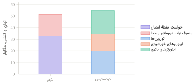
مثال 18.16 (سه مگاوار، به شرطِ باتری) پرسش. توانِ واکنشیِ لازم در واحدها و دردسترس را بنویسید و بگویید معماری بی باتری چه کم دارد.
پاسخ. خروجیِ بالا و شکل 18.8: خواستِ نقطهٔ اتصال 32.9 Mvar و مصرفِ ترانسفورماتورها و خط 18.6، جمع 51.5؛ توربینها 19.8، خورشیدی 15.0 و باتری 20.0، جمع 54.8؛ حاشیه 3.3 Mvar. بی باتری 34.8 در برابرِ 51.5، یعنی 16.7 Mvar کم.
تفسیر. ترانسفورماتورهای اصلی بهتنهایی یکسومِ خواستِ نقطهٔ اتصال را مصرف میکنند. معماری دو راه دارد: اینورترهای باتری را برای توانِ واکنشی هم حساب کند (پس باتری نباید در همان لحظه با توانِ کامل کار کند، یا اینورترش بزرگتر باشد) یا جبرانسازِ جدا بیاورد (فصلِ ۲۷). عددِ واقعیِ خواسته از کدِ شبکه میآید (U-067) و منحنیِ قابلیتِ واحدها از سازنده. وارسی: \(100 \times \tan(\arccos 0.95) = 32.9\) و \(0.12 \times 105.3^2 / 126 = 10.6\).
- چرا خواستِ توانِ واکنشی در واحدها از خواستِ نقطهٔ اتصال بیشتر است؟
- توانِ واکنشیِ مصرفیِ یک ترانسفورماتور را با کلمه بنویسید.
- دو راهِ پر کردنِ کمبود را با بهای هر کدام بنویسید.
18.3.12 ارزشِ آمادهسازی برای گسترش
ایده. آمادهسازیِ مرحلهٔ نخست (بیِ یدک، جای ترانسفورماتور، لوله برای کابل) پولِ امروز است برای گسترشی که شاید بیاید. اگر احتمالِ گسترش \(q\) و هزینهٔ آمادهسازی و بازسازیِ بعدی \(C_\text{now}\) و \(C_\text{later}\) باشند، آمادهسازی وقتی میارزد که \(q\,C_\text{later} > C_\text{now}\).
preparing the first stage for an extension (teaching, A-287):
prepare now: 400 k u; retrofit later: 1,500 k u plus three
days of outage (2,431 MWh, 122 k u): 1,622 k u
break-even chance of the extension: 25 %
(no discounting; a later retrofit costs less in today's
money, which raises the break-even chance)
if the owner rates the extension more likely than that,
preparing pays; the preparation is also an option on a
higher export limit or a larger batteryمثال 18.17 (یک در چهار) پرسش. احتمالِ سربهسرِ گسترش را حساب کنید و بگویید تنزیل این عدد را به کدام سو میبرد.
پاسخ. خروجیِ بالا: امروز 400 هزار؛ بعداً 1,500 هزار بهاضافهٔ سه روز قطعی (2,431 MWh، 122 هزار)، جمع 1,622؛ احتمالِ سربهسر 25 %.
تفسیر. اگر مالک گسترش را محتملتر از یک در چهار بداند، آمادهسازی میارزد. تنزیل هزینهٔ بعدی را در پولِ امروز کمتر میکند، پس احتمالِ سربهسر بالا میرود. آمادهسازی گزینهای هم بر حدِ بیشتر یا باتریِ بزرگتر است، پس ارزشش از یک گسترشِ خورشیدی بیشتر است. وارسی: \(400 / 1{,}622 = 0.247\).
- شرطِ ارزیدنِ آمادهسازی را با کلمه بنویسید.
- چرا تنزیل احتمالِ سربهسر را بالا میبرد؟
- آمادهسازی چه گزینههای دیگری میخرد؟
18.4 پ. رابطها و تجزیهٔ کارکردی
نیروگاه از هزاران چیز ساخته میشود که سازندگانِ مختلف میسازند؛ بیشترِ گرفتاریهای اجرا در میانِ این چیزهاست، نه در خودِ آنها. این بخش دو ابزار میسازد: درختِ محصول که میگوید نیروگاه از چه ساخته شده است، و ماتریس و دفترِ رابطها که میگوید این اجزا کجا به هم میرسند و هر مرز مالِ کیست.
18.4.1 درختِ محصول: از نیروگاه تا واحدِ تعویضپذیر
ایده. درختِ محصول (به انگلیسی product breakdown structure) نیروگاه را در پنج تراز میشکند: نیروگاه، سامانه (مزرعهٔ بادی، نیروگاهِ خورشیدی، باتری، …)، زیرسامانه (توربین، بلوک)، تجهیز (اینورتر، میزِ ماژول) و واحدِ تعویضپذیر (به انگلیسی line-replaceable unit)، کوچکترین چیزی که بهرهبردار در محل عوض میکند. شمارها در پایینِ درخت ضرب میشوند. هر گره یک نشانهٔ مرجع میگیرد که در نقشه، انبار و سامانهٔ نگهداری یکی است؛ اصولِ ساختاردهی و نشانهگذاری در IEC 81346-1:2022 آمده است و جزئیاتِ آن در فصلِ ۳۸ به کار میرود.
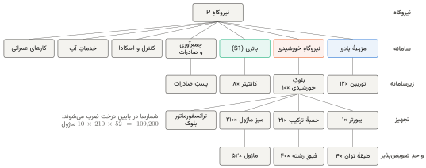
product breakdown of Plant P (counts multiply down the tree):
Plant P x1
wind farm x1
wind turbine x12 [buy]
PV plant x1
PV block x10 [buy+integrate]
battery (S1) x1
battery container x8 [buy]
BESS inverter x4 [buy]
collection and export x1
33 kV collector x1 [make]
export substation x1 [buy+integrate]
export line x1 [make]
control and SCADA x1 [buy+integrate]
plant controller x2
water service x1 [make]
tank x2
pump set x2
civil works x1 [make]
items by level: plant 1, system 7, subsystem 37
equipment 2,419, unit 118,016
make/buy marks: unmarked 23, buy 13, buy+make 2, buy+integrate 3, make 4
the replaceable units are what O&M stocks and changes; the
'buy+integrate' nodes are where the project owns the interface
between bought parts (chapters 39-48)مثال 18.18 (صد و هجده هزار واحد) پرسش. نیروگاهِ P را تا واحدِ تعویضپذیر تجزیه کنید، شمارِ هر تراز را بنویسید و بگویید کدام سامانه بیشترِ واحدها را دارد و این برای بهرهبرداری چه معنایی دارد.
پاسخ. خروجیِ بالا و شکل 18.9: نیروگاه ۱، سامانه ۷، زیرسامانه 37، تجهیز 2,419، واحد 118,016. ماژولها 109,200 واحدند، یعنی بیش از 92 %؛ فیوزهای رشته 8,400؛ باد فقط 228 واحد.
تفسیر. بیشترِ شمار در خورشیدی است و بیشترِ ارزش و پیچیدگیِ هر واحد در باد؛ پس انبارِ یدکی دو منطق دارد: برای خورشیدی درصدی از شمار (ماژول، فیوز)، برای باد قطعههای گران با زمانِ تحویلِ طولانی (پره، گیربکس، فصلهای ۴۵ و ۵۲). تراز ِ «تجهیز» همان چیزی است که فهرستِ خرید و آزمونِ کارخانه دارد (فصلهای ۳۹ تا ۴۸). وارسی: \(10 \times 210 \times 52 = 109{,}200\) و \(109{,}200 / 118{,}016 = 0.925\).
- پنج ترازِ درختِ محصول را با یک نمونه برای هر کدام بنویسید.
- چرا شمارها در پایینِ درخت ضرب میشوند؟
- واحدِ تعویضپذیر را تعریف کنید و دو نمونه از باد بیاورید.
18.4.2 خریدن، ساختن و یکپارچه کردن
ایده. هر گرهِ درخت یک برچسبِ ساختن یا خریدن (به انگلیسی make or buy) دارد: خرید (کالای سازنده با ضمانتِ خودش)، ساخت (پروژه یا پیمانکار در محل میسازد: کابلکشی، عمران، خط)، خرید و ساخت (تجهیزِ خریده که در محل بخشی از آن ساخته میشود: برج و فونداسیون، میزِ ماژول)، و خرید و یکپارچهسازی (چند تجهیزِ خریده که پروژه رابطشان را مالک است: بلوکِ خورشیدی، پستِ صادرات، کنترل و اسکادا).
| برچسب | نمونه در نیروگاهِ P | مالکِ رابطِ درونی | رابط با کارخانه |
|---|---|---|---|
| خرید | توربین، کانتینرِ باتری، ترانسفورماتور | سازنده | برگهٔ داده، آزمونِ کارخانه، بستهبندی |
| ساخت | جمعآوریِ 33 kV، خطِ صادرات، عمران | پیمانکار | مشخصاتِ مصالح، آزمونِ محل |
| خرید و ساخت | برج و فونداسیون، میزِ ماژول | مشترک | نقشهٔ رابطِ پیچ و صفحه، تلرانس |
| خرید و یکپارچهسازی | بلوکِ خورشیدی، پست، کنترل | پروژه | سندِ کنترلِ رابط، آزمونِ یکپارچه |
گرههای «خرید و یکپارچهسازی» جاییاند که هیچ سازندهای مسئولِ کلِ کار نیست؛ همینجا پروژه باید سندِ کنترلِ رابط بنویسد و آزمونِ یکپارچه بگذارد (بخش 18.4.6). خروجیِ بالا سه گرهِ اینچنینی دارد.
- چهار برچسبِ ساختن و خریدن را با نمونه بنویسید.
- چرا گرههای «خرید و یکپارچهسازی» بیشترین ریسکِ رابط را دارند؟
- رابطِ «خرید و ساخت» با کارخانه چه سندی میخواهد؟
18.4.3 ماتریسِ رابطها
ایده. ماتریسِ N² سامانهها را روی قطر مینشاند؛ هر خانهٔ بیرونِ قطر میگوید دو سامانه از چه گونهای با هم رابط دارند: برقی، مکانیکی، حرارتی، حفاظت، کنترل و ارتباطات، عمرانی، آب و کدِ شبکه. با نُه سامانه \(9 \times 8 / 2 = 36\) جفت هست.
SYSTEMS = ["wind", "PV", "BESS", "collector", "substation", "grid",
"control", "water", "civil"]
LINKS = { # (i, j): interface kinds; E electrical, M mechanical, T thermal,
# P protection, C control/comms, V civil, W water, G grid code
(0, 3): "EPC", (1, 3): "EPC", (2, 3): "EPC", (3, 4): "EP",
(4, 5): "EPCG", (0, 6): "C", (1, 6): "C", (2, 6): "CT", (4, 6): "CP",
(5, 6): "CG", (2, 7): "W", (1, 7): "W", (0, 8): "MV", (1, 8): "MV",
(2, 8): "MV", (4, 8): "MV", (7, 8): "V", (3, 8): "V",
}system-level interface (N-squared) matrix:
wind PV BESS colle subst grid contr water civil
wind ## . . EPC . . C . MV
PV . ## . EPC . . C W MV
BESS . . ## EPC . . CT W MV
collector EPC EPC EPC ## EP . . . V
substation . . . EP ## EPCG CP . MV
grid . . . . EPCG ## CG . .
control C C CT . CP CG ## . .
water . W W . . . . ## V
civil MV MV MV V MV . . V ##
18 system pairs interface out of 36; by kind:
C 9, E 5, G 2, M 4, P 6, T 1, V 6, W 2
control touches every power system; civil touches every
thing that stands; each mark is an owner and a document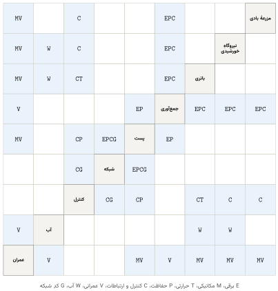
مثال 18.19 (هجده از سی و شش) پرسش. شمارِ جفتهای دارای رابط و شمارِ هر گونه را بنویسید و بگویید کدام سامانه با بیشترین سامانهها رابط دارد.
پاسخ. خروجیِ بالا و شکل 18.10: 18 جفت از 36؛ کنترل 9، حفاظت 6، عمرانی 6، برقی 5، مکانیکی 4، آب 2، کدِ شبکه 2، حرارتی 1. کنترل با همهٔ سامانههای توان و عمران با هر چیزی که روی زمین میایستد رابط دارد.
تفسیر. هر علامت یک سند و یک مالک است؛ هجده جفت یعنی دستکم هجده سندِ کنترلِ رابط در ترازِ سامانه، و صدها در ترازِ تجهیز. سامانهٔ کنترل «نخِ تسبیح» است: اگر پروتکل یا مالکِ آن روشن نباشد، هر سامانه جدا کار میکند ولی نیروگاه نه (مثال 18.23). وارسی: \(18/36 = 50\ \%\) (P25).
- ماتریسِ N² را تعریف کنید و بگویید قطرش چه دارد.
- با ده سامانه چند جفت هست؟
- چرا سامانهٔ کنترل بیشترین رابط را دارد؟
18.4.4 دفترِ رابطها و مالکیت
ایده. ماتریس میگوید کجا رابط هست؛ دفترِ رابطها (به انگلیسی interface register) هر رابط را در ترازِ تجهیز با پارامترِ مشترک، مقدارِ هر سو، تلرانس و مالک نگه میدارد. مالکِ رابط کسی است که دو سو را همخوان میکند، حتی اگر هیچکدام را نسازد.
@dataclass
class Interface:
iid: str
kind: str # electrical, mechanical, thermal, comms, ...
side_a: str
side_b: str
item: str # the parameter both sides must agree on
value_a: object
value_b: object
tol: float = 0.0 # allowed relative difference for numbers
owner: str = ""
def mismatch(self) -> str:
"""Empty when both sides agree, else a short reason."""
a, b = self.value_a, self.value_b
if isinstance(a, (int, float)) and isinstance(b, (int, float)):
if b == 0 or abs(a - b) / abs(b) > self.tol:
return f"{a} against {b} (tol {100 * self.tol:.0f} %)"
return ""
if isinstance(b, (set, frozenset, tuple, list)):
return "" if a in b else f"{a} not in {sorted(b)}"
return "" if a == b else f"{a} against {b}"def interfaces() -> list:
I = ar.Interface
return [
I("IF-001", "electrical", "PV inverter", "block transformer",
"LV voltage kV", 0.600, 0.690, 0.02, "EPC electrical"),
I("IF-002", "electrical", "block transformer", "33 kV collector",
"HV voltage kV", 33.0, 33.0, 0.0, "EPC electrical"),
I("IF-003", "mechanical", "module", "module table",
"clamp zone mm", 400.0, 400.0, 0.05, "PV supplier"),
I("IF-004", "electrical", "module", "string cable",
"DC connector", "type MC-A", {"type MC-A"}, 0.0, "PV supplier"),
I("IF-005", "electrical", "combiner box", "string cable",
"DC connector", "type MC-B", {"type MC-A"}, 0.0, "EPC electrical"),
I("IF-006", "thermal", "battery container", "HVAC unit",
"heat to reject kW", 120.0, 100.0, 0.05, "BESS supplier"),
I("IF-007", "comms", "BESS controller", "plant controller",
"protocol", "Modbus TCP", {"IEC 61850", "IEC 60870-5-104"}, 0.0,
"integrator"),
I("IF-008", "protection", "export bay", "grid bay",
"relay settings source", "operator", "operator", 0.0,
"grid operator"),
I("IF-009", "civil", "transformer", "foundation",
"mass t", 95.0, 100.0, 0.10, "civil"),
I("IF-010", "water", "cleaning truck", "water tank",
"fill rate m3/h", 20.0, 25.0, 0.25, "O&M"),
]interface register: 10 interfaces; by kind:
electrical 4, mechanical 1, thermal 1, comms 1
protection 1, civil 1, water 1
owner of each interface:
EPC electrical IF-001, IF-002, IF-005
PV supplier IF-003, IF-004
BESS supplier IF-006
integrator IF-007
grid operator IF-008
civil IF-009
O&M IF-010مثال 18.20 (ده رابط، هفت مالک) پرسش. رابطهای دفتر را بر حسبِ گونه و مالک بشمارید و بگویید رابطِ IF-008 چرا مالکِ بیرونی دارد.
پاسخ. خروجیِ بالا: برقی ۴، و مکانیکی، حرارتی، ارتباطات، حفاظت، عمرانی و آب هر کدام ۱؛ مالکها: پیمانکارِ برق سه، سازندهٔ خورشیدی دو، و سازندهٔ باتری، یکپارچهساز، اپراتور، عمران و بهرهبردار هر کدام یک. IF-008 (منبعِ تنظیمهای حفاظت میانِ بیِ صادرات و بیِ شبکه) مالِ اپراتور است، چون حفاظتِ شبکه را او هماهنگ میکند (بخش 17.6.2).
تفسیر. دفتر زنده است: هر سفارشِ خرید رابطهای تازه میآورد و هر رابط تا «بسته» شدن (هر دو سو تأیید و آزموده) باز میماند. رابطی که مالک ندارد، در آزمونِ راهاندازی پیدا میشود؛ گرانترین جا. وارسی: \(4 + 1 + 1 + 1 + 1 + 1 + 1 = 10\).
- ستونهای دفترِ رابطها را بنویسید.
- مالکِ رابط چه کاری میکند اگر هیچ سو را نسازد؟
- رابط کی «بسته» میشود؟
18.4.5 بستههای قرارداد و رابطها
ایده. درختِ محصول به بستههای قرارداد تقسیم میشود (فصلِ ۳۹). هر رابطی که از مرزِ دو بسته بگذرد، رابطی است که مالکِ پروژه باید مدیریت کند؛ رابطِ درونِ یک بسته را پیمانکارِ همان بسته مدیریت میکند. دو بستهبندیِ آموزشی:
LOTS = {
"single EPC": {"wind": "turbine supplier", "PV": "EPC", "BESS": "EPC",
"collector": "EPC", "substation": "EPC", "grid": "operator",
"control": "EPC", "water": "EPC", "civil": "EPC"},
"multi-contract": {"wind": "turbine supplier", "PV": "PV EPC",
"BESS": "BESS supplier", "collector": "BOP electrical",
"substation": "BOP electrical", "grid": "operator",
"control": "integrator", "water": "civil",
"civil": "civil"},
}system pairs whose interface crosses a contract boundary:
packaging lots crossing pairs of 18
single EPC 3 5
multi-contract 7 16
multi-contract crossings:
BESS-civil, BESS-collector, BESS-control, BESS-water
PV-civil, PV-collector, PV-control, PV-water
collector-civil, grid-control, substation-civil, substation-control
substation-grid, wind-civil, wind-collector, wind-control
each crossing is an interface the owner must manage; the
single EPC contract keeps most of them inside one firm and
is priced for that riskمثال 18.21 (پنج یا شانزده) پرسش. شمارِ جفتهای رابطی را که از مرزِ قرارداد میگذرند در دو بستهبندی بنویسید و بگویید بهای هر کدام چیست.
پاسخ. خروجیِ بالا: پیمانکارِ یکپارچه با سه بسته (توربین، پیمانکار، اپراتور) پنج جفت؛ چندقراردادی با هفت بسته شانزده جفت از هجده.
تفسیر. چندقراردادی معمولاً قیمتِ کمتری میگیرد، چون هر پیمانکار فقط کارِ خود را میپذیرد؛ اما شانزده رابط را مالک باید با سند، جلسه و آزمون ببندد و هر گرهٔ بستهنشده ادعا میشود. پیمانکارِ یکپارچه همین ریسک را در قیمتش میگذارد. انتخاب به توانِ مدیریتیِ مالک و وامدهنده بسته است (فصلِ ۳۹). وارسی: در بستهبندیِ یکپارچه فقط رابطهای باد (سه) و شبکه (دو) از مرز میگذرند: \(3 + 2 = 5\).
- چرا رابطِ میانِ دو بسته کارِ مالک است؟
- بهای قیمتِ کمترِ چندقراردادی چیست؟
- یک بستهبندیِ سوم پیشنهاد دهید و جفتهای مرزیاش را بشمارید.
18.4.6 سندِ کنترلِ رابط
ایده. سندِ کنترلِ رابط (به انگلیسی interface control document، ICD) برای هر رابط میگوید دو سو دربارهٔ چه توافق کردهاند، با چه تلرانسی، چگونه اثبات میشود و چه کسی تغییرش را تأیید میکند. این سند فاصلهٔ میانِ دو قرارداد را پر میکند: هر سازنده به قراردادِ خودش پایبند است، و سند تضمین میکند که دو قرارداد دربارهٔ یک مرز یک چیز میگویند. مدیریتِ رابط بخشی از فرایندهای چرخهٔ عمرِ سامانه در ISO/IEC/IEEE 15288:2023 است.
| بخشِ سند | محتوا | نمونه برای IF-007 |
|---|---|---|
| شناسه و مالک | شناسه، دو سو، مالک، بازنگری | IF-007، کنترلگرِ باتری و نیروگاه، یکپارچهساز |
| کارکرد و مرز | چه چیزی از مرز میگذرد، نقشهٔ مرز | فرمانِ توان و وضعیت، از پایانهٔ شبکه |
| پارامترها | مقدار و تلرانسِ هر سو | پروتکل، فهرستِ نقطهها، نرخِ بهروزرسانی، همزمانیِ ساعت |
| ردههای محیطی | دما، رطوبت، گرد، ارتفاع | اتاقِ کنترل یا کانتینر |
| راستیآزمایی | روشِ اثباتِ هر پارامتر | آزمونِ کارخانه با شبیهساز، آزمونِ محل |
| مرزِ راهاندازی | چه کسی چه چیزی را کی میآزماید | یکپارچهساز پس از آزمونِ باتری |
| کنترلِ تغییر | چه کسی تغییر را تأیید میکند | هیئتِ تغییرِ پروژه |
- هفت بخشِ سندِ کنترلِ رابط را بنویسید.
- چرا دو قراردادِ درست ممکن است یک رابطِ ناسازگار بسازند؟
- برای IF-006 بخشِ «پارامترها» را بنویسید.
18.4.7 سازگاریِ پایانهها و تلرانسها
ایده. بیشترِ ناسازگاریهای اجرا کوچک و ارزاناند تا وقتی که تجهیز برسد. چند گونهٔ رایج:
- اتصالدهندهها: اتصالدهندهٔ مستقیمِ دو سازندهٔ مختلف حتی اگر شبیه باشند ممکن است جفت نشوند یا گرم کنند؛ قاعده: یک گونه و یک سازنده در دو سو، یا تأییدِ کتبیِ سازگاری از سازنده.
- پایانهها: اندازهٔ کابل با اندازهٔ پایانه، جنسِ هادی (مس یا آلومینیوم) با کفشک، و گشتاورِ سفت کردن؛ ناسازگاری داغی و خرابی میسازد (فصلِ ۲۴).
- تلرانسها: هر سو تلرانسِ خود را دارد و جمعشان باید در مرز جا شود؛ مثلاً الگوی پیچِ فلنج و صفحهٔ فونداسیون، یا ولتاژِ نامیِ دو سوی ترانسفورماتور.
- واحدها و قراردادها: گرمای «دفعشده» در برابرِ «تولیدشده»، توانِ «خالص» در برابرِ «ناخالص»، ساعتِ «محلی» در برابرِ «جهانی»؛ یک کلمه در دو سند دو معنا دارد.
هر کدام در دفترِ رابط یک پارامتر با مقدارِ دو سو و تلرانس میشود، و وارسیِ خودکار (مثال 18.23) آنهایی را که نمیخوانند پیدا میکند.
- چهار گونهٔ رایجِ ناسازگاری را با نمونه بنویسید.
- چرا اتصالدهندههای شبیه کافی نیستند؟
- جمعِ تلرانسها را با یک مثال توضیح دهید.
18.4.8 ردههای محیطی در برابرِ ساختگاه
ایده. ردهٔ هر تجهیز روی یک مبنای محیطی داده میشود: دمای هوا، ارتفاع، گرد و آب، خوردگی، بار برف و باد. اگر ساختگاه بیرون از این مبنا باشد، رده باید کاهش یابد یا تجهیز عوض شود. سه چیز کمتر دیده میشود: دمای درونِ اتاق یا کانتینر (نه فقط هوای بیرون)، ارتفاع (هوای رقیقتر خنککاری و عایق را ضعیفتر میکند) و ردهٔ خوردگی (فصلِ ۱۱، ISO 12944-2:2017). مبنای آموزشیِ زیر (A-289) فقط برای نشان دادنِ روش است؛ عددِ واقعی از سازنده میآید.
environmental ratings against the site (teaching, A-289):
air temperature -8.6 to 40.7 C; hours above 40 C: 4
inverter full power to 40 C, -2 %/K above (teaching basis)
energy lost to derating: 0.0 MWh/yr outdoors; 256.6 MWh/yr
if the inverter room runs 10 K warmer (990 hours above 40 C)
site elevation 1200 m against a 1000 m rating basis:
insulation and cooling ratings need the maker's altitude
correction; the enclosure needs ventilation that still
cools in thinner air
also to state: dust and water ingress (IP code), corrosion
category, snow and wind loads, UV, and the temperature
inside the room or container, not only outsideمثال 18.22 (صفر بیرون، دویست و پنجاه و هفت درون) پرسش. با مبنای آموزشی، انرژیِ ازدسترفته به سببِ کاهشِ ردهٔ اینورتر را در هوای بیرون و در اتاقی 10 K گرمتر بنویسید و بگویید ارتفاعِ 1,200 m چه چیزی را لازم میکند.
پاسخ. خروجیِ بالا: بیرون فقط ۴ ساعت بالای 40 °C و انرژیِ ازدسترفته صفر؛ در اتاقِ گرمتر 990 ساعت و 256.6 MWh در سال. ارتفاع بالای مبنای 1,000 m است: اصلاحِ عایق و خنککاری از دادهٔ سازنده.
تفسیر. رابطِ حرارتی میانِ اینورتر و اتاقش (تهویه، آفتابگیر، فاصله) همانقدر مهم است که ردهٔ خودِ اینورتر؛ اگر سندِ رابط «دمای هوای ورودی» را تعریف نکند، هر سو مبنای خود را فرض میکند. 256.6 MWh کوچک است (0.24 % خورشیدی) ولی همان گرما عمرِ اجزا را هم کم میکند (فصلِ ۹). وارسی: در 45 °C رده \(1 - 0.02 \times 5 = 0.90\) است (P29).
- شش بخشِ مبنای محیطی را نام ببرید.
- چرا دمای درونِ اتاق از دمای هوا مهمتر است؟
- ارتفاع کدام دو کارکرد را ضعیف میکند؟
18.4.9 مرزِ راهاندازی
ایده. هر رابط یک مرزِ آزمون دارد: چه کسی، کی و با چه شاهدی آن را اثبات میکند. ترتیبِ کلی: آزمونِ کارخانهٔ هر تجهیز، تکمیلِ مکانیکی، آزمونهای بیبرقِ رابطها (پیوستگی، عایق، نقطهبهنقطهٔ سیگنالها)، سپس برقدار کردن با اجازهٔ اپراتور و طبقِ روشهای ایمنِ پروژه، و در پایان آزمونهای یکپارچه و تحویل (فصلهای ۴۹ و ۵۰).
| رابط | آزمونِ پیش از برقدار کردن | آزمونِ یکپارچه | مالکِ شاهد |
|---|---|---|---|
| اینورتر و ترانسفورماتورِ بلوک | ولتاژِ نامی، گروهِ برداری، عایق | بارگیریِ بلوک | پیمانکارِ برق |
| کنترلگرِ باتری و نیروگاه | فهرستِ نقطهها با شبیهساز | پیرویِ فرمانِ توان | یکپارچهساز |
| بیِ صادرات و بیِ شبکه | تنظیمهای حفاظت، تزریقِ ثانویه | قطع و وصلِ هماهنگ | اپراتور و پیمانکار |
| مخزن و کامیون | نرخِ پر کردن، شیرها | یک چرخهٔ شستوشو | بهرهبردار |
برقدار کردن، آزمونهای برقدار و کار نزدیکِ تجهیزاتِ برقدار فقط با روشهای ایمنِ پروژه، مجوزِ کار و افرادِ واجدِ شرایط انجام میشود؛ این کتاب این روشها را نمیدهد.
- ترتیبِ کلیِ آزمونها از کارخانه تا تحویل را بنویسید.
- چرا هر رابط یک مالکِ شاهد میخواهد؟
- آزمونِ پیش از برقدار کردن برای رابطِ ارتباطی چیست؟
18.4.10 مثالِ کارشده: حلِ ناسازگاری پیش از خرید
ایده. پیش از سفارشِ خرید، دفترِ رابطها با برگههای دادهٔ پیشنهادی پر میشود و برنامه هر پارامتری را که دو سویش نمیخوانند جدا میکند. دفترِ آموزشی چهار ناسازگاریِ کاشته دارد: ولتاژ، اتصالدهنده، گرما و پروتکل.
mismatch check before procurement: 4 of 10 interfaces
IF-001 electrical PV inverter / block transformer: LV voltage kV:
0.6 against 0.69 (tol 2 %)
IF-005 electrical combiner box / string cable: DC connector:
type MC-B not in ['type MC-A']
IF-006 thermal battery container / HVAC unit: heat to reject kW:
120.0 against 100.0 (tol 5 %)
IF-007 comms BESS controller / plant controller: protocol:
Modbus TCP not in ['IEC 60870-5-104', 'IEC 61850']
fixes (to agree in the interface-control document):
IF-001 order the block transformer with a 0.60 kV winding (D-012)
IF-005 one connector type on both sides, from one maker
IF-006 HVAC sized on the container's rejected heat plus margin
IF-007 a protocol gateway, or require IEC 61850 in the BESS order
each is cheap on paper and costly after deliveryمثال 18.23 (چهار ناسازگاری روی کاغذ) پرسش. ناسازگاریهای دفتر را پیدا کنید، برای هر کدام راهِ حل بنویسید و بگویید چرا حلِ آنها پیش از خرید ارزانتر است.
پاسخ. خروجیِ بالا:
- ولتاژ (IF-001): اینورتر 0.60 kV، ترانسفورماتورِ پیشنهادی 0.69 kV، بیش از تلرانسِ 2 %؛ ترانسفورماتور با سیمپیچیِ 0.60 kV سفارش داده شود (D-012).
- اتصالدهنده (IF-005): جعبهٔ ترکیب گونهٔ B، کابلِ رشته گونهٔ A؛ یک گونه از یک سازنده در دو سو.
- گرما (IF-006): کانتینر 120 kW گرما دفع میکند و تهویهٔ مطبوع 100 kW دارد؛ تهویه بر پایهٔ گرمای دفعشدهٔ کانتینر بهاضافهٔ حاشیه.
- پروتکل (IF-007): کنترلگرِ باتری فقط Modbus TCP، کنترلگرِ نیروگاه IEC 61850 یا IEC 60870-5-104؛ دروازهٔ پروتکل، یا شرطِ IEC 61850 در سفارشِ باتری.
تفسیر. هر چهار روی کاغذ با یک خط در سفارش حل میشوند؛ پس از تحویل یکی ترانسفورماتورِ تازه، یکی هزاران اتصالدهنده، یکی کانتینرِ داغ با فرسایشِ تند (فصلِ ۱۹) و یکی ماهها برنامهنویسی و آزمونِ دوباره است. نوعِ دوم و سوم دقیقاً آنهاییاند که «هر سو درست است» و فقط مرز اشتباه است. وارسی: \(|0.60 - 0.69| / 0.69 = 13\ \%\)، بیش از 2 %؛ \(|120 - 100| / 100 = 20\ \%\)، بیش از 5 %.
- چهار ناسازگاریِ کاشته را با راهِ حلِ هر کدام بنویسید.
- چرا ناسازگاریِ گرما «هر سو درست» است؟
- برای ناسازگاریِ پروتکل دو راهحل با بهای هر کدام بنویسید.
18.4.11 شبکهٔ داده و ارتباطاتِ نیروگاه
ایده. رابطِ «کنترل و ارتباطات» در ماتریس از همه پرشمارتر است (مثال 18.19). اندازهٔ شبکهٔ داده از درختِ محصول میآید: هر تجهیز چند نقطهٔ داده دارد (اندازه، وضعیت، هشدار) که با نرخی نمونهبرداری میشوند. معماری در این تراز سه تصمیم دارد: توپولوژی (حلقهٔ فیبر در کنارِ کابلهای جمعآوری تا قطعِ یک فیبر شبکه را نشکند)، منطقهبندی (کنترل، پایش، دسترسیِ از راه دور، هر کدام جدا و هر گذر از یک دروازهٔ کنترلشده) و پیوند با اپراتور (کنترلِ از راه دور با پروتکلی که اپراتور میخواهد، مثال 18.23). اینها اصولِ دفاعیاند؛ جزئیات در فصلهای ۳۴ تا ۳۶.
POINTS = { # device: (count, points each, seconds between samples)
"wind turbine": (12, 400, 1), "PV inverter": (10, 200, 1),
"combiner box": (210, 25, 10), "battery container": (8, 400, 1),
"BESS inverter": (4, 150, 1), "33 kV feeder bay": (14, 60, 1),
"132 kV bay and meters": (2, 150, 1), "weather station": (3, 30, 1),
"water and auxiliaries": (1, 80, 10),
}plant data points and the data they make (teaching, A-286):
device count points every s samples/day
wind turbine 12 4,800 1 414,720,000
PV inverter 10 2,000 1 172,800,000
combiner box 210 5,250 10 45,360,000
battery container 8 3,200 1 276,480,000
BESS inverter 4 600 1 51,840,000
33 kV feeder bay 14 840 1 72,576,000
132 kV bay and meters 2 300 1 25,920,000
weather station 3 90 1 7,776,000
water and auxiliaries 1 80 10 691,200
total 17,160 1,068,163,200
stored raw (16 bytes a sample): 17 GB a day, 6.2 TB a year
historians store changes only and compress, often ten
times or more; the network carries the 1 s stream: ring
topology along the collector trenches, separate zones for
control, monitoring and remote access (chapters 34-36)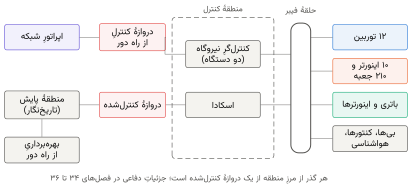
مثال 18.24 (هفده هزار نقطه، هفده گیگابایت) پرسش. شمارِ نقطهها، نمونههای روزانه و دادهٔ خامِ روزانه و سالانه را بنویسید و بگویید کدام دستگاهها بیشترین داده را میسازند.
پاسخ. خروجیِ بالا و شکل 18.11: 17,160 نقطه، بیش از یک میلیارد نمونه در روز، 17 GB خام در روز و 6.2 TB در سال؛ توربینها (4,800 نقطه در هر ثانیه) و باتری (3,200) بیشتریناند؛ جعبههای ترکیب با شمارِ زیاد اما نمونهٔ دهثانیهای کمتر.
تفسیر. دادهٔ خام بهتنهایی معماری را تعیین نمیکند (تاریخنگار فقط تغییرها را نگه میدارد و فشرده میکند)؛ اما جریانِ یکثانیهای باید از حلقه بگذرد و کنترلگرِ نیروگاه باید در همان زمان فرمان بدهد (فصلِ ۲۰). نرخِ هر نقطه یک الزامِ رابط است: اگر سندِ رابط آن را نگوید، سازنده نرخِ خود را میدهد و آزمونِ کارکردِ شبکه ناممکن میشود. وارسی: \(12 \times 400 \times 86{,}400 = 414{,}720{,}000\).
- سه تصمیمِ معماری در شبکهٔ داده را بنویسید.
- چرا حلقهٔ فیبر در کنارِ کابلهای جمعآوری کشیده میشود؟
- چرا نرخِ نمونهبرداری یک الزامِ رابط است؟
18.4.12 یدکها از درختِ محصول
ایده. درختِ محصول شمارِ هر واحدِ تعویضپذیر را میدهد؛ با نرخِ خرابیِ هر واحد و زمانِ تحویلِ سازنده، تقاضای یدک در زمانِ تحویل یک متغیرِ پواسون است با میانگینِ
\[ m = n\,\lambda\,\frac{t_\text{L}}{52} \tag{18.4}\]
که \(n\) شمارِ نصبشده، \(\lambda\) خرابی برای هر واحد در سال و \(t_\text{L}\) زمانِ تحویل به هفته است. کوچکترین موجودی که با احتمالِ 95 % تقاضا را بپوشاند، چندکِ 0.95 این توزیع است.
SPARES = { # item: (installed, failures per unit-year, lead time weeks)
"PV module": (109_200, 0.0005, 12),
"string fuse": (8_400, 0.002, 4),
"inverter power stage": (40, 0.125, 8),
"turbine blade": (36, 0.003, 26),
"gearbox": (12, 0.02, 26),
"main transformer": (2, 0.01, 52),
}
def spares_needed(n, lam, weeks, level=0.95):
"""Smallest stock that covers Poisson demand over the lead time
with the given probability."""
mean = n * lam * weeks / 52.0
return mean, int(poisson.ppf(level, mean))spares from the breakdown, 95 % cover over the lead time
(failure rates A-288):
item installed failures/yr lead wk mean stock
PV module 109,200 54.60 12 12.60 19
string fuse 8,400 16.80 4 1.29 3
inverter power stage 40 5.00 8 0.77 2
turbine blade 36 0.11 26 0.05 1
gearbox 12 0.24 26 0.12 1
main transformer 2 0.02 52 0.02 0
cheap many-unit items get a stock from demand; rare costly
items get zero or one, or a shared spare among plants; the
main transformer's answer (0) is why section B weighed
the second unit for the tail, not the meanمثال 18.25 (نوزده ماژول، صفر ترانسفورماتور) پرسش. موجودیِ یدکِ هر واحد را با پوششِ 95 % بنویسید و بگویید پاسخِ «صفر» برای ترانسفورماتور یعنی چه.
پاسخ. خروجیِ بالا: ماژول 19 (میانگینِ 12.6)، فیوز 3، طبقهٔ توانِ اینورتر 2، پره 1، گیربکس 1، ترانسفورماتورِ اصلی 0.
تفسیر. برای واحدهای ارزانِ پرشمار، موجودی از تقاضا میآید؛ برای واحدهای گرانِ کمشمار، پاسخِ پواسون «صفر یا یک» است و تصمیم با پیامدِ کمبود گرفته میشود، نه با احتمال: ترانسفورماتور با 0.02 خرابیِ مورد انتظار در زمانِ تحویل «یدک نمیخواهد»، اما اگر خراب شود نیمی از نیروگاه شش ماه میخوابد؛ پس ترانسفورماتورِ دوم یا یدکِ مشترک (مثال 18.12). معماری (مرکزی یا رشتهای، یک یا دو ترانسفورماتور) شمار و نوعِ یدکها را تعیین میکند (فصلهای ۵۱ و ۵۲). وارسی: \(109{,}200 \times 0.0005 \times 12/52 = 12.6\).
- معادلهٔ 18.4 را با کلمه بخوانید.
- چرا پاسخِ پواسون برای واحدهای گرانِ کمشمار کافی نیست؟
- اگر زمانِ تحویلِ ماژول دو برابر شود، موجودی چه میشود؟
18.4.13 یک توربین تا زیرمجموعهها
ایده. مثالِ کارشدهٔ تجزیه (مثال 18.18) شاخهٔ خورشیدی را تا پایین برد. شاخهٔ باد را یک تراز ریزتر میکنیم: یک توربین با زیرمجموعهها، واحدهای تعویضپذیر و رابطهایی که از مرزِ سازندهٔ توربین بیرون میروند (فصلهای ۸ و ۱۱).
| زیرمجموعه | واحدهای تعویضپذیرِ نمونه | رابطِ بیرون از سازندهٔ توربین | مالکِ آن سو |
|---|---|---|---|
| روتور | پره ×۳، یاتاقانِ پره، محرکِ گام ×۳ | جرثقیل و سکوی نصب | عمران، فصلِ ۴۵ |
| ناسل و پیشرانه | یاتاقانِ اصلی، گیربکس، ژنراتور | دسترسیِ جرثقیل برای تعویضِ بزرگ | بهرهبردار، فصلِ ۵۲ |
| مبدل و کنترل | ماژولهای توان، کارتها | پروتکل و فرمان به کنترلگرِ نیروگاه | یکپارچهساز |
| ترانسفورماتور و تابلوی متوسط | کلید، رله | کابلِ 33 kV، حفاظتِ رشته | پیمانکارِ برق |
| برج | بخشهای برج ×۴، آسانسور | فلنجِ پایه و قفسهٔ پیچهای مهاری | پیمانکارِ عمران |
| فونداسیون | (ساختِ محل) | بار و تلرانسِ ترازِ فلنج از سازنده | طراحِ سازه، فصلِ ۲۹ |
مثال 18.26 (مرزِ سازنده در پایهٔ برج) پرسش. از جدول 18.9 رابطهایی را که مالکِ آن سو کسی جز سازندهٔ توربین است بشمارید و بگویید کدام رابط بیشترین خطرِ تأخیر را دارد.
پاسخ. شش رابط با پنج مالکِ بیرونی (عمران دو بار). پرخطرترین: فلنجِ پایه و قفسهٔ پیچها، چون فونداسیون پیش از رسیدنِ توربین ریخته میشود و هر خطای تلرانس پس از بتنریزی تقریباً بیدرمان است.
تفسیر. رابطِ فونداسیون با برج یک رابطِ «خرید و ساخت» است (جدول 18.6): سازنده بار و تلرانس را میدهد، پیمانکارِ عمران میسازد و هیچکدام کلِ مسئولیت را ندارند؛ پس سندِ کنترلِ رابطِ آن باید پیش از طراحیِ فونداسیون امضا شود. وارسی: شمارِ ردیفهای جدول 18.9 شش است.
- شش زیرمجموعهٔ توربین را نام ببرید.
- چرا رابطِ فونداسیون با برج پرخطر است؟
- برای مبدلِ توربین یک رابطِ بیرونی و مالکش را بنویسید.
18.4.14 چرخهٔ عمرِ هر رابط
ایده. هر رابط از پنج مرحله میگذرد: شناساییشده (میدانیم هست)، تعریفشده (پارامترها نوشته شده)، توافقشده (هر دو سو امضا کردهاند)، راستیآزموده (شاهدِ آزمون هست) و بسته (در سوابق تحویل شده). دو قاعده: هر رابط پیش از سفارشِ خرید «توافقشده» و پیش از تحویل «بسته» باشد.
STAGES = ["identified", "defined", "agreed", "verified", "closed"]
GATES = { # interface: stage reached at each gate (teaching)
"concept": [1, 1, 0, 1, 0, 0, 0, 1, 0, 0],
"procurement": [2, 2, 2, 2, 1, 1, 1, 2, 2, 1],
"commission": [4, 4, 4, 4, 4, 3, 3, 4, 4, 4],
}interface register by stage at three gates (IF-001..IF-010):
gate identified defined agreed verified closed
concept 6 4 0 0 0
procurement 0 4 6 0 0
commission 0 0 0 2 8
rule: every interface 'agreed' before its purchase order and
'closed' before hand-over; at commissioning still open: IF-006, IF-007
(battery heat and protocol: the two planted mismatches that
were fixed late, so they are verified last)مثال 18.27 (چهار رابطِ توافقنشده در خرید) پرسش. شمارِ رابطها را در هر مرحله و دروازه بنویسید و رابطهایی را که قاعده را میشکنند نام ببرید.
پاسخ. خروجیِ بالا: در مفهوم ۶ شناساییشده و ۴ تعریفشده؛ در خرید ۴ تعریفشده و ۶ توافقشده؛ در راهاندازی ۲ راستیآزموده و ۸ بسته. در خرید چهار رابط (IF-005، IF-006، IF-007، IF-010) توافقنشدهاند و در راهاندازی IF-006 و IF-007 هنوز بسته نیستند.
تفسیر. سه تا از چهار رابطِ توافقنشده همان ناسازگاریهای کاشتهاند (مثال 18.23)؛ وارسیِ خودکار پیدایشان کرد ولی حلشان پس از سفارش رفت و تا راهاندازی بسته نشدند. شمارشِ مرحلهها در هر دروازه یک سنجهٔ پیشرفت است که مدیرِ پروژه هر ماه میبیند (فصلِ ۳۸). وارسی: در هر دروازه جمع ده است.
- پنج مرحلهٔ چرخهٔ عمرِ رابط را بنویسید.
- دو قاعدهٔ دروازهها را بنویسید.
- چرا شمارشِ مرحلهها سنجهٔ پیشرفت است؟
18.5 ت. معماریِ خدماتِ آب
آب در نیروگاهِ بادی-خورشیدی کم مصرف میشود اما کمبودنش گران است: پنلهای کثیف، کارکنانِ بی آبِ آشامیدنی، باتریِ داغ، و آتشی که آبِ ذخیرهاش برای شستوشو برداشته شده است. این بخش آب را مانندِ یک سامانهٔ دیگر با منبع، کیفیت، ذخیره، تصفیه، استفادهٔ دوباره، توزیع، اندازهگیری و اولویت معماری میکند. همهٔ حجمها آموزشیاند (A-286).
برنامه:
python -m companion.ch18.lab_d18.5.1 نیازهای ماهانه
ایده. سه مصرفِ مصرفی در بهرهبرداری: شستوشوی پنلها با سیاستِ کامیون در آستانهٔ 4 % (فصلهای ۱۰ و ۱۵، یک لیتر برای هر ماژول)، آشامیدن و بهداشت برای 25 نفر با 120 لیتر در روز، و جبرانِ چیلرِ مدار بستهٔ باتری. آبِ ساخت جدا حساب میشود (بخش 18.5.5).
monthly operating water demand (m3; cleaning = truck at 4 % loss):
month cleanings cleaning sanitation battery total
1 0 0 93 15 108
2 0 0 84 15 99
3 0 0 93 15 108
4 0 0 90 15 105
5 2 218 93 15 326
6 3 328 90 15 433
7 2 218 93 15 326
8 2 218 93 15 326
9 3 328 90 15 433
10 2 218 93 15 326
11 0 0 90 15 105
12 0 0 93 15 108
year: 2,804 m3 (7.7 m3 a day on average); peak month 433 m3
consumptive use; the fire reserve below is held, not consumed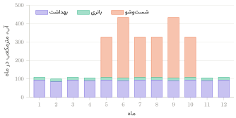
مثال 18.28 (دو هزار و هشتصد مترمکعب، بیشترش در تابستان) پرسش. نیازِ سالانه و ماهِ اوج را بنویسید، سهمِ هر مصرف را بگویید و نتیجه را با برآوردِ فصلِ ۱۴ مقایسه کنید.
پاسخ. خروجیِ بالا و شکل 18.12: 2,804 m³ در سال (7.7 m³ در روز)، اوج 433 m³ در ژوئن و سپتامبر. شستوشو با چهارده بار 1,529 m³ (55 %)، بهداشت 1,095، باتری 180.
تفسیر. شستوشو فقط در ماههای خشک است (باران در زمستان پاک میکند)، پس اوجِ نیاز با کمآبترین ماهها همزمان است؛ همین معماری را میسازد. برآوردِ فصلِ ۱۴ (843 m³ شستوشو) با شمارِ کمترِ شستوشو بود؛ سیاستِ آستانهای فصلِ ۱۵ چهارده بار میدهد، پس مبنا عوض شد و این تغییر ثبت میشود. وارسی: \(14 \times 109.2 = 1{,}529\) و \(25 \times 0.12 \times 365 = 1{,}095\).
- سه مصرفِ مصرفیِ بهرهبرداری را نام ببرید.
- چرا اوجِ نیاز با ماههای کمآب همزمان است؟
- چرا برآوردِ شستوشو از فصلِ ۱۴ تا این فصل عوض شد؟
18.5.2 منبع، کیفیت و تصفیه
ایده. هر منبع سه ویژگی دارد: مقدار در هر ماه، کیفیت و قطعیت (مجوز، خشکسالی، خرابیِ پمپ). کیفیت به مصرف بسته است: آبِ شستوشو در حدِ مجازِ سازندهٔ ماژول (املاحِ کم تا لکه نگذارد)، آبِ آشامیدنی با تصفیه و در مدارِ جدا، آبِ چیلر طبقِ سازندهٔ باتری. منبعهای نیروگاهِ P: چشمهٔ ساختگاه با آبِ اضافهٔ فصلی (فصلِ ۱۴)، یک چاهِ مجاز (U-053 باز) و آبِ تانکری.
supplies against the demand, tank 2400 m3 with a held reserve of 900 m3:
supply unmet m3/yr lowest usable stock m3
spring spare only (permit) 18 0
licensed well 1,500 m3/month 0 1,500
well at half in a drought 0 1,500
the well covers even at half its permit (750 m3 a month against
a peak month of 433 m3); the tank stays full
the spring has no spare water in Jun-Sep (chapter 14), when
cleaning needs most; a tank can bridge it only if the months
before refill it, and only under a permit (U-053); the reserve
stays untouched by design: a separate tank or a low suctionمثال 18.29 (چشمه در تابستان خشک است) پرسش. کمبودِ سالانه را با هر منبع بنویسید و بگویید چرا چشمه بهتنهایی کافی نیست.
پاسخ. خروجیِ بالا (مخزنِ آزمایشیِ 2,400 m³ با 900 ذخیره): چشمه 18 m³ کمبود و مخزن تا صفر خالی میشود؛ چاهِ مجاز بی کمبود، مخزن همیشه پر؛ حتی نیمِ چاه در خشکسالی بی کمبود.
تفسیر. چشمه در ژوئن تا سپتامبر آبِ اضافه ندارد، درست وقتی شستوشو اوج دارد؛ مخزن باید از ماههای پیش ذخیره کند، و 1,500 m³ قابلِ مصرف کمی کم است. چاه با حاشیه کافی است، اما مجوزش هنوز باز است (U-053). پس معماری دو منبع دارد: چاه اصلی، چشمه پشتیبان بیرون از تابستان. وارسی: \(1{,}500 \times 0.5 = 750 > 433\).
- سه ویژگیِ هر منبع را بنویسید.
- کیفیتِ آبِ هر مصرف را چه کسی تعیین میکند؟
- چرا معماری دو منبع دارد؟
18.5.3 ذخیره: مصرفی و نگهداشته
ایده. مخزن دو بخش دارد: قابلِ مصرف که بالا و پایین میرود، و ذخیرهٔ نگهداشته برای آتش و اضطرار که هرگز برای بهرهبرداری برداشته نمیشود (مخزنِ جدا یا مکشِ بهرهبرداری بالاتر از ترازِ ذخیره). حجمِ ذخیره را مقامِ آتشنشانی و ارزیابیِ خطر تعیین میکنند (فصلِ ۳۲)؛ 900 m³ اینجا فقط جاینگهدار است. اندازهٔ بخشِ قابلِ مصرف از بدترین حالتِ منبع میآید: فقط چشمه.
tank to carry the operating demand through Jun-Sep from the spring:
demand in Jun-Sep 1,518 m3; smallest usable tank with
no unmet demand 1,600 m3
plus the held reserve 900 m3: total 2,500 m3
or: robots for dry cleaning (chapter 10) cut the cleaning water
to zero and leave sanitation and make-up onlyمثال 18.30 (هزار و ششصد بهاضافهٔ نهصد) پرسش. کوچکترین بخشِ قابلِ مصرف را که با چشمه بهتنهایی کمبود نمیدهد پیدا کنید و حجمِ کلِ مخزن را بنویسید.
پاسخ. خروجیِ بالا: نیازِ ژوئن تا سپتامبر 1,518 m³؛ کوچکترین بخشِ قابلِ مصرف 1,600 m³ (با پلههای صدتایی)؛ با ذخیره 2,500 m³.
تفسیر. مخزن پلِ فصلِ خشک است: اگر چاه مجوز نگیرد، با 2,500 m³ و چشمه هم بهرهبرداری ادامه مییابد. راهِ دیگر کم کردنِ نیاز است: رباتهای شستوشوی خشک (فصلِ ۱۰) شستوشو را تقریباً به صفر میرسانند و مخزن کوچک میشود؛ پس انتخابِ روشِ شستوشو و معماریِ آب یک تصمیماند. وارسی: \(433 + 326 + 326 + 433 = 1{,}518\) (E09)، و 1,600 کوچکترین مضربِ صد بالای آن.
- دو بخشِ مخزن را با کارِ هر کدام تعریف کنید.
- چرا ذخیرهٔ آتش با مکشِ جدا یا بالاتر نگه داشته میشود؟
- رباتهای شستوشو چگونه معماریِ آب را عوض میکنند؟
18.5.4 توزیع، اندازهگیری، استفادهٔ دوباره و اولویت
ایده. معماریِ آب در یک نمودار: منبعها، تصفیه، مخزن با دو بخش، مصرفها با اولویت و کنتورها.
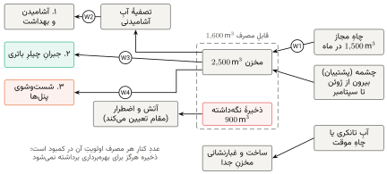
- اولویت در کمبود: ذخیرهٔ نگهداشته دستنخورده؛ سپس آشامیدن و بهداشت؛ سپس جبرانِ چیلرِ باتری (بی آن باتری داغ و محدود میشود)؛ و در پایان شستوشو، که چند هفته عقب انداختنش فقط چند دهم درصد انرژی میبرد (فصلِ ۱۵).
- اندازهگیری: کنتور روی چاه (W1، برای مجوز)، روی هر مصرف (W2 تا W4)، و گزارشِ ماهانه؛ نشتی با مقایسهٔ کنتورها پیدا میشود.
- استفادهٔ دوباره: آبِ شستوشو معمولاً روی زمین میماند و استفادهٔ دوبارهاش به کیفیت بسته است؛ آبِ خاکستریِ ساختمان پس از تصفیه برای غبارنشانیِ جادهها شاید.
- توزیع: کامیون برای شستوشو (پر کردن از مخزن، IF-010)، لوله برای ساختمانها و باتری؛ شیرها و پمپها با یدک.
- ترتیبِ اولویت در کمبود را با دلیل بنویسید.
- کنتورِ W1 برای چه کسی مهم است؟
- یک استفادهٔ دوبارهٔ ممکن و شرطش را بنویسید.
18.5.5 آبِ ساخت
ایده. ساخت آبِ خودش را دارد: بتن و بهویژه غبارنشانی روی جادهها و سکوها (فصلِ ۱۴).
construction water (chapter 14): 12,204 m3 over the build,
of which dust suppression 10,800 m3; at 0.46 L/s on working days
it exceeds the operating demand many times: a temporary source
(trucked or a temporary well permit) and its own tank, not the
operating tank; the architecture keeps the two apartمثال 18.31 (چهل مترمکعب در روز) پرسش. نیازِ روزانهٔ غبارنشانی را با نیازِ بهرهبرداری مقایسه کنید و بگویید چرا مخزنِ ساخت جداست.
پاسخ. غبارنشانی 10,800 m³ با 40 m³ در روزِ کاری، یعنی 270 روز و 0.46 L/s (P23)؛ بهرهبرداری بهطورِ میانگین 7.7 m³ در روز.
تفسیر. نیازِ ساخت پنج برابرِ بهرهبرداری است، اما موقت. اگر مخزنِ بهرهبرداری برای ساخت به کار رود، ذخیرهٔ آتش در دورهٔ ساخت، که خطرِ آتش بیشتر است، در خطر میافتد. پس منبع (تانکر یا چاهِ موقت با مجوزِ موقت) و مخزنِ ساخت جدا، و برنامهٔ برچیدنشان در پایانِ ساخت. وارسی: \(40 / 7.7 = 5.2\).
- دو مصرفِ آبِ ساخت را نام ببرید.
- چرا آبِ ساخت نباید از مخزنِ بهرهبرداری برداشته شود؟
- پایانِ ساخت چه کاری با منبعِ موقت دارد؟
18.5.6 تصفیه برای شستوشو
ایده. اگر آبِ چاه املاحِ زیادی داشته باشد، آبِ شستوشو باید تصفیه شود (مثلاً با اسمزِ معکوس) تا روی شیشه لکه نگذارد. تصفیه آبِ ورودیِ بیشتری از آبِ خروجی میخواهد و پساب میسازد؛ هر دو رابطِ تازهاند. بازیافتِ آموزشی 70 % است.
treating cleaning water by reverse osmosis (teaching, 70 %):
cleaning water needed 1,529 m3/yr
feed from the well 2,184 m3/yr
brine to dispose of 655 m3/yr
well abstraction with the other uses 3,459 m3/yr
(against 2,804 m3/yr untreated)
treatment adds an interface on each side: the permit covers
the feed, not the product, and the brine needs a disposal
route the environmental permit accepts (chapter 33)مثال 18.32 (مجوز برای ورودی، نه خروجی) پرسش. آبِ ورودی، پساب و برداشتِ کلِ چاه را با تصفیه حساب کنید و دو رابطِ تازه را نام ببرید.
پاسخ. خروجیِ بالا: برای 1,529 m³ آبِ شستوشو 2,184 m³ ورودی و 655 m³ پساب؛ برداشتِ کلِ چاه 3,459 بهجای 2,804 m³. رابطها: مجوزِ برداشت (برای ورودی) و راهِ دفعِ پساب (مجوزِ محیطِ زیست، فصلِ ۳۳).
تفسیر. تصفیه نیازِ چاه را 23 % بالا میبرد؛ اگر مجوزِ چاه با عددِ بیتصفیه گرفته شود، در سالِ اول کم میآید. پساب را نمیتوان همینطور روی زمین ریخت؛ تبخیر، برگشت یا انتقال گزینههای آناند و هر کدام هزینه و مجوز دارند. وارسی: \(1{,}529 / 0.70 = 2{,}184\) و \(3{,}459 / 2{,}804 = 1.23\).
- چرا آبِ ورودیِ تصفیه از آبِ خروجی بیشتر است؟
- مجوزِ چاه باید کدام عدد را پوشش دهد؟
- سه راهِ دفعِ پساب را نام ببرید.
18.5.7 رابطهای واکنش در اضطرار
ایده. واکنش در اضطرار (آتش، آسیبِ کارکنان، نشتِ مواد) به رابطهایی نیاز دارد که در معماری جا میگیرند: راهِ دسترسیِ نیروهای امدادی، محلِ اتصالِ آب، نقطههای جداسازیِ برق، جعبهٔ اطلاعات برای امدادگران و جای تجمع. حجمها، فاصلهها و سامانههای حفاظت را مقامِ مسئول و ارزیابیِ خطر تعیین میکنند (فصلهای ۳۱ و ۳۲)؛ اینجا فقط جای آنها در معماری.
| رابط | جای آن در معماری | مالکِ تعیینِ مقدار |
|---|---|---|
| دسترسیِ امدادی | جادهٔ دسترسی با دو راه به پست و باتری | مقامِ آتشنشانی، فصلِ ۳۰ |
| آبِ آتش | ذخیرهٔ نگهداشته، نقطهٔ اتصالِ خودروی آتشنشانی | مقامِ آتشنشانی، فصلِ ۳۲ |
| جداسازیِ برق | کلیدهای دردسترس در مرزِ هر سامانه | طراحِ برق، فصلهای ۲۶ و ۳۱ |
| اطلاعات برای امدادگران | جعبه در ورودی: نقشه، خطرها، تماسها | بهرهبردار، فصلِ ۳۱ |
| روانآبِ آلوده | جمعآوری در اطرافِ باتری و ترانسفورماتورها | مقامِ محیطِ زیست، فصلهای ۱۹ و ۳۳ |
این کتاب حجمِ آبِ آتش، فاصلههای ایمنی یا سامانهٔ اطفای عمومی تجویز نمیکند؛ اینها از مقامِ مسئول، ارزیابیِ خطرِ پروژه و مهندسانِ حریق میآیند.
- پنج رابطِ واکنش در اضطرار را نام ببرید.
- چرا روانآبِ اطرافِ باتری یک رابطِ معماری است؟
- چه کسی حجمِ آبِ آتش را تعیین میکند؟
18.6 ث. آزمایشگاهِ معماری
این آزمایشگاه مثالِ کارشدهٔ اولِ فصل را اجرا میکند: مقایسهٔ دو معماری با فرضهای مشترک، شکستنِ مقایسه به انتخابهای جداشدنی، امتیاز دادن به معیارهایی که پول نشان نمیدهد و نوشتنِ مبنا با دلیل.
برنامه:
python -m companion.ch18.lab_e18.6.1 دو معماری با فرضهای مشترک
ایده. دو معماری فقط وقتی مقایسهپذیرند که منبع، قیمت، نرخِ تنزیل و مدل یکی باشد؛ وگرنه تفاوتِ فرضها خودش را جای تفاوتِ معماری جا میزند.
- A1، جدا: باتریِ کوپلِ متناوب روی بیهای خودش، کابلِ جمعآوریِ 240 mm²، دو ترانسفورماتورِ 63 MVA، خطِ هوایی یکمداره.
- A2، فشرده: باتریِ کوپلِ مستقیم در بلوکهای خورشیدی، کابلِ 630 mm²، یک ترانسفورماتورِ 125 MVA بی یدک، خطِ هوایی دومداره.
common assumptions for both architectures:
resource and losses: model 15.1 (D-019), S1 battery 20 MW / 40 MWh
export limit 100 MW, 132 kV line 7.06 km, W2b collector
price 50 u/MWh (A-281); capex to a yearly cost at 6 %, 20 years,
plus opex 2 % a year: 107.2 u a year per k u
battery counted here only for energy that would be lost;
its market uses (chapters 19-21) are scored, not priced- چهار فرضِ مشترکِ مقایسه را نام ببرید.
- چرا باتری در مقایسه فقط برای انرژیِ گمشده شمرده شده است؟
- ضریبِ 107.2 واحد در سال برای هر هزار واحد از کجا میآید؟
18.6.2 مثالِ کارشده: مقایسهٔ دو معماری
ایده. بهجای یک «جمع» برای هر معماری، تفاوت را انتخاب به انتخاب مینویسیم: انرژیِ افزوده در سال، ارزشِ آن با قیمتِ آموزشی، سرمایهٔ اضافه که سالانه شده، و خالص.
def choices() -> list:
"""Each separable choice: (name, A1 option, A2 option, energy gained
by A2 in MWh a year, extra capex of A2 in k u)."""
c1 = ef.collector_option("33 kV 240 mm2")
c2 = ef.collector_option("33 kV 630 mm2")
l1 = ef.export_option("overhead line, single circuit")
l2 = ef.export_option("overhead line, double circuit")
b1, b2 = ea.year("AC"), ea.year("DC")
return [
("collector", "240 mm2", "630 mm2", c1["loss"] - c2["loss"],
c2["cost"] - c1["cost"]),
("export line", "single", "double",
(l1["loss"] + l1["out"]) - (l2["loss"] + l2["out"]),
1000 * (l2["cost"] - l1["cost"])),
("transformers", "2 x 63", "1 x 125",
trafo_unserved("2x63") - trafo_unserved("1x125"),
C["trafo_125"] - 2 * C["trafo_63"]),
("coupling", "AC", "DC", b2["back"] - b1["back"],
20 * C["dcdc_per_mw"]
- (20 * C["bess_inv_per_mw"] + C["bess_ac_mv"])),
]A2 against A1, choice by choice (k u a year; + favours A2):
choice A1 A2 MWh/yr value capex/yr net
collector 240 mm2 630 mm2 1,180 59.0 99.5 -40.5
export line single double 394 19.7 174.0 -154.3
transformers 2 x 63 1 x 125 -1,301 -65.0 -75.0 10.0
coupling AC DC 689 34.4 -98.6 133.0
total 962 48.1 99.9 -51.8
A2 gains energy but costs more each year; the totals hide
that the choices are separable: the coupling pays in A2,
the larger cable and the second circuit do not, and the
single transformer saves money but loses energyمثال 18.33 (جمع پنهان میکند) پرسش. دو معماری را با فرضهای مشترک مقایسه کنید: انرژی، ارزش، هزینهٔ سالانه و خالصِ هر انتخاب و جمع. کدام انتخابها A2 را پیش میاندازند؟
پاسخ. خروجیِ بالا: کابلِ بزرگتر 1,180 MWh میافزاید ولی خالصش −40.5؛ خطِ دومداره 394 MWh و −154.3؛ یک ترانسفورماتور 1,301 MWh کم میکند ولی خالصش +10.0؛ کوپلِ مستقیم 689 MWh میافزاید و +133.0. جمع: 962 MWh انرژیِ بیشتر و −51.8 هزار واحد در سال برای A2.
تفسیر. جمع میگوید «A1 کمی بهتر است»، اما انتخابها جداشدنیاند: کوپلِ مستقیم در پول میبرد، کابلِ بزرگ و مدارِ دوم نمیبرند، و یک ترانسفورماتور پول میدهد و انرژی و دُم را میگیرد. پس پرسشِ درست «A1 یا A2؟» نیست؛ «هر انتخاب جدا، با معیارهای غیرپولیاش» است (بخش 18.6.3). وارسی: خطِ دومداره: \(1{,}620 \times 0.1072 = 173.7\) و \(394 \times 50 / 1000 = 19.7\) (P09، P10).
- چرا مقایسهٔ انتخاب به انتخاب از مقایسهٔ جمع بهتر است؟
- کدام انتخاب انرژی کم میکند ولی پول میدهد؟
- اگر قیمت دو برابر شود، کدام انتخابها علامت عوض میکنند؟
18.6.3 معیارهای وزندار
ایده. معیارهایی که پول نشان نمیدهد (دُمِ ریسک، کاربردهای بازارِ باتری، نگهداشتپذیری، رابطها، بلوغ، گسترش) با وزن و امتیازِ با دلیل میآیند. امتیازها آموزشیاند و هر کدام باید در سند دلیل داشته باشد.
CRITERIA = { # weight, score A1, score A2 (1 poor .. 5 good), teaching
"yearly money (above)": (25, 4, 3),
"tail risk (longest outage)": (20, 5, 2),
"battery market uses": (15, 5, 2),
"maintainability and spares": (10, 4, 3),
"interfaces and integration": (10, 4, 2),
"technology maturity": (10, 5, 4),
"expansion": (10, 4, 3),
}weighted criteria (scores 1-5, teaching judgements):
criterion weight A1 A2
yearly money (above) 25 4 3
tail risk (longest outage) 20 5 2
battery market uses 15 5 2
maintainability and spares 10 4 3
interfaces and integration 10 4 2
technology maturity 10 5 4
expansion 10 4 3
weighted total (out of 500) 445 265
A1 scores at least as high on every criterion, so no choice
of weights makes A2 win; only different scores could, and
each score must be argued in the record, not tunedمثال 18.34 (چیرگی، نه وزن) پرسش. جمعِ وزندارِ دو معماری را بنویسید و بگویید آیا وزنِ دیگری میتواند نتیجه را برگرداند.
پاسخ. خروجیِ بالا: A1 445 و A2 265 از 500. A1 در همهٔ معیارها امتیازِ برابر یا بیشتر دارد، پس هیچ وزنِ نامنفیای A2 را جلو نمیاندازد.
تفسیر. وقتی یک گزینه بر دیگری چیره است، بحثِ وزن بیفایده است؛ بحث باید روی امتیازها باشد: آیا کوپلِ مستقیم واقعاً در کاربردهای بازار ضعیفتر است؟ آیا یدکِ مشترک دُمِ ترانسفورماتور را درمان نمیکند؟ ماتریس وسیلهٔ گفتوگوی شفاف است، نه ماشینِ تصمیم؛ امتیازی که برای رسیدن به نتیجهٔ دلخواه تنظیم شود، ماتریس را بیاعتبار میکند. وارسی: \(25 \times 4 + 20 \times 5 + 15 \times 5 + 10 \times (4 + 4 + 5 + 4) = 445\) (P30).
- چیرگیِ یک گزینه بر دیگری را تعریف کنید.
- چرا امتیازها باید در سند دلیل داشته باشند؟
- یک امتیاز را که فکر میکنید باید عوض شود، با دلیل، تغییر دهید و جمع را دوباره حساب کنید.
18.6.4 مبنای انتخابشده
ایده. مبنا یک جملهی قابلِ اجرا است: چه چیزی انتخاب شد، چرا، چه چیزی باز ماند و با چه شرطی عوض میشود.
baseline (D-022, conditional on U-065..U-068):
A1 as the reference architecture: AC-coupled battery,
240 mm2 33 kV collector, two 63 MVA transformers,
single-circuit 132 kV overhead line
choices whose money favours A2: transformers, coupling
the transformers stay two: a few k u a year do not buy
a six-month outage risk (section B)
kept open: the coupling (DC pays a little for lost energy
but loses the battery's wind and market uses), cable size
after the cable offers, line circuits after the operator's
security rules; each change goes through change controlمثال 18.35 (A1، با سه درِ باز) پرسش. مبنای معماری را با دلیل بنویسید و بازهای آن را با شرطِ بسته شدن نام ببرید.
پاسخ. خروجیِ بالا: A1 مبناست. پول دو انتخاب را به سودِ A2 میخواند (ترانسفورماتور و کوپل)؛ ترانسفورماتورها برای دُم دوتا میمانند؛ کوپل، اندازهٔ کابل و شمارِ مدارهای خط باز میمانند تا کاربردهای باتری (فصلهای ۱۹ تا ۲۱)، پیشنهادهای کابل و قواعدِ امنیتِ اپراتور برسند.
تفسیر. مبنای خوب همهچیز را نمیبندد؛ آنچه را که دادهاش نرسیده با مالک و تاریخ باز میگذارد و از این پس هر تغییر از کنترلِ تغییر (بخش 17.4.7) میگذرد. این مبنا تصمیمِ D-022 است (بخش 18.13). وارسی: خالصِ ترانسفورماتور +10.0 در برابرِ رخدادِ 147.9 GWh؛ دلیلِ کنار گذاشتن روشن است.
- مبنای معماری چه چهار چیزی را باید بگوید؟
- چرا کوپل باز ماند با اینکه در پول میبرد؟
- کدام داده هر درِ باز را میبندد؟
18.6.5 معماری بی باتری
ایده. سناریوی S0 (بی باتری) فقط «یک سامانه کمتر» نیست؛ چند ویژگیِ معماری با باتری میآیند و بی آن باید جای دیگری تأمین شوند.
what the architecture loses without the battery (S0):
item S1 (battery) S0
33 kV bays for storage 2 0
reactive margin at full P +3.3 Mvar -16.7 Mvar
recapture of curtailment 196 MWh/yr 0
critical-load back-up battery, ~74 h UPS only
interfaces (system pairs) 18 14
water for chiller make-up 180 m3/yr 0
without the battery a compensator becomes likely and the
island for critical loads needs its own sourceمثال 18.36 (منفی شانزده مگاوار) پرسش. آنچه معماری بی باتری از دست میدهد را بنویسید و بگویید کدام کمبود باید با تجهیزِ دیگری پر شود.
پاسخ. خروجیِ بالا: دو بی کمتر؛ حاشیهٔ توانِ واکنشی از +3.3 به −16.7 Mvar؛ بازگرداندنِ 196 MWh بُرش صفر؛ پشتیبانِ بارهای حیاتی از حدودِ 74 ساعت به منبعِ بیوقفه؛ جفتهای رابط از 18 به 14؛ آبِ چیلر صفر.
تفسیر. در S0 یک جبرانساز تقریباً لازم میشود (اگر کدِ شبکه ضریبِ توانِ 0.95 بخواهد، U-067) و جزیرهٔ بارهای حیاتی منبعِ خودش را میخواهد. پس در مقایسهٔ S0 و S1 هزینهٔ باتری باید با هزینهٔ این جانشینها سنجیده شود؛ فصلِ ۲۱ این را با پول میسنجد. وارسی: \(34.8 - 51.5 = -16.7\).
- شش چیزی را که معماری بی باتری از دست میدهد بنویسید.
- کدام کمبود تجهیزِ دیگری میخواهد؟
- چرا مقایسهٔ S0 و S1 باید هزینهٔ جانشینها را ببیند؟
18.6.6 سابقهٔ تصمیمِ معماری
ایده. هر تصمیمِ معماری یک سابقهٔ تصمیم (به انگلیسی architecture decision record) میگیرد تا سالها بعد کسی بداند چرا چنین شد و با چه دادهای باید دوباره نگاه کرد. پنج بخش کافی است:
| بخش | محتوا | برای D-022 |
|---|---|---|
| زمینه | چه چیزی تصمیم را لازم کرد | الزاماتِ D-021، انرژیِ D-019، چیدمانِ D-018 |
| گزینهها | چه چیزهایی سنجیده شد | A1 و A2؛ کوپل، کابل، ترانسفورماتور، خط، پست |
| تصمیم | چه انتخاب شد و چرا | A1؛ چیرگی در معیارها و دُمِ ترانسفورماتور (مثال 18.34) |
| پیامدها | چه چیزی را آسان یا سخت میکند | جبرانسازِ احتمالی در S0، دو بیِ باتری، شانزده رابط در چندقراردادی |
| وضعیت و بازنگری | پیشنهادی، پذیرفته، جانشینشده؛ چه دادهای بازش میکند | پذیرفتهٔ مشروط؛ U-065 تا U-072 |
سابقه کوتاه است و به سندهای پشتیبان (خروجیهای این فصل، دفترِ رابط) ارجاع میدهد؛ اگر تصمیم عوض شود، سابقهٔ تازهای با شمارهٔ تازه نوشته میشود و قبلی «جانشینشده» علامت میخورد، پاک نمیشود.
- پنج بخشِ سابقهٔ تصمیم را نام ببرید.
- چرا سابقهٔ قدیمی پاک نمیشود؟
- برای تصمیمِ «سه فیدرِ خورشیدی» یک سابقهٔ کوتاه بنویسید.
18.6.7 خطاهای رایج در معماری
ایده. بیشترِ خطاهای معماری در یک جملهٔ نادرست خلاصه میشوند. فهرستِ زیر از درسهای این فصل جمع شده است؛ کنارِ هر خطا، درسی که آن را نشان داد.
| خطای رایج | چرا نادرست است | درس |
|---|---|---|
| «کوپلِ مستقیم بازدهِ بیشتری دارد، پس بهتر است.» | کاربردهای بازار و شارژ از باد را نمیبیند | مثال 18.3 |
| «جمعِ دو معماری را مقایسه کنیم.» | انتخابهای جداشدنی را پنهان میکند | مثال 18.33 |
| «امیدِ انرژیِ ازدسترفته کوچک است، پس افزونگی لازم نیست.» | دُمِ یک رخدادِ ششماهه را نمیبیند | مثال 18.12 |
| «کمینهٔ جدولِ هزینه همان بهینه است.» | کمینه در لبه است؛ هزینه ارزش نیست | مثال 18.8 |
| «باتری بُرش را برمیگرداند، پس میارزد.» | ارزشِ بازگرداندن نه تا پانزده برابر کمتر از هزینه است | مثال 18.11 |
| «هر دو سو درستاند، پس رابط درست است.» | ناسازگاری در مرز است، نه در دو سو | مثال 18.23 |
| «ردهٔ تجهیز با دمای هوای بیرون کافی است.» | دمای درونِ اتاق و ارتفاع را نمیبیند | مثال 18.22 |
| «ذخیرهٔ آتش هم آب است؛ در کمبود برداریم.» | ذخیرهٔ نگهداشته برای رخداد است | بخش 18.5.3 |
| «مجوزِ چاه همان نیازِ مصرف است.» | تصفیه ورودیِ بیشتری میخواهد | مثال 18.32 |
| «تلفِ غربال همان تلفِ واقعی است.» | کرانِ بالاست؛ دقیق حدودِ نصف | مثال 18.42 |
| «توانِ واکنشیِ واحدها همان توانِ واکنشی در نقطهٔ اتصال است.» | ترانسفورماتورها و خط مصرف میکنند | مثال 18.16 |
| «یدکِ ترانسفورماتور لازم نیست چون پواسون صفر میدهد.» | پیامدِ کمبود را نمیبیند | مثال 18.25 |
- سه خطا از جدول 18.12 را انتخاب کنید و برای هر کدام یک مثالِ عددی از نیروگاهِ P بیاورید.
- کدام خطا در پروژههای شما بیشتر دیده میشود و چرا؟
- یک خطای رایجِ دیگر بیفزایید و درسی که آن را نشان میدهد بنویسید.
18.6.8 آنچه فصلهای بعد از این معماری میگیرند
ایده. مبنای معماری ورودیِ فصلهای بعد است؛ هر فصل یک بخش از آن را با جزئیات طراحی میکند و اگر دادهاش مبنا را عوض کند، از کنترلِ تغییر میگذرد.
| فصل | از این فصل میگیرد | ممکن است برگرداند |
|---|---|---|
| ۱۹ باتری | 20 MW و 40 MWh، کوپلِ متناوب، دو بی، تهویه (IF-006) | کوپل و اندازه (U-069) |
| ۲۰ کنترل | حالتها، جزیرهٔ بارهای حیاتی، شبکهٔ داده، بودجهٔ توانِ واکنشی | اولویتِ توانِ واکنشیِ باتری |
| ۲۱ اقتصاد | انتخابها، هزینههای آموزشی، S0 و S1 | ارزشِ باتری با بازار |
| ۲۴ تا ۲۷ برقی | نمودارِ تکخطی، کابلها، فیدرها، پست، شینهٔ دوبخشی | اندازهٔ کابل (U-070)، جبرانساز |
| ۲۸ اتصال | صادرات، حد، توانِ واکنشی، کنتورها | مدارِ دوم (U-071)، کدِ شبکه (U-067) |
| ۳۲ حریق | ذخیرهٔ نگهداشته، رابطهای اضطرار | حجمِ ذخیره (U-072) |
| ۳۴ تا ۳۶ کنترل و امنیت | منطقهها، دروازهها، نقطههای داده | معماریِ تفصیلیِ شبکه |
| ۳۸ تا ۳۹ اجرا و خرید | درختِ محصول، بستهها، دفترِ رابط، سابقهٔ تصمیم | بستهبندیِ نهایی |
- سه فصل را نام ببرید که ممکن است مبنای معماری را عوض کنند و بگویید با کدام داده.
- چرا هر تغییر از کنترلِ تغییر میگذرد؟
- کدام بازِ این فصل را فصلِ ۳۲ میبندد؟
18.7 ج. معماریِ جمعآوری و صادرات
انرژی از توربینها و بلوکها با سامانهٔ جمعآوری به پستِ نیروگاه میرسد و با خطِ صادرات به شبکه. این بخش گزینههای هر کدام را با تلف، افت، افزونگی، مسیر، هزینه، زمان و مالکیت مقایسه میکند. همهٔ دادههای کابل و خط آموزشیاند (A-286)؛ انتخاب مشروط به دادهٔ شبکه، مجوزها، زمین و مالکیت است (U-065 تا U-068).
برنامه:
python -m companion.ch18.examples_f18.7.1 ولتاژ و توپولوژیِ جمعآوری
ایده. چیدمانِ W2b (فصلِ ۱۴) سه رشتهٔ شعاعی از چهار توربین دارد. برای هر رشته جریان، تلفِ سالانه و افتِ ولتاژ در اوج را با سه گزینه میسنجیم: 33 kV با 240 mm²، 33 kV با 630 mm² و 66 kV با 240 mm². غربالِ محافظهکارانه: جریانِ کلِ رشته از کلِ طول میگذرد. جریان و تلف (فصلِ ۷):
\[ I = \frac{P}{\sqrt{3}\,V\cos\varphi}, \qquad P_\text{loss} = 3\,I^2 R \tag{18.5}\]
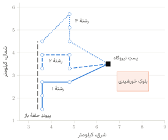
W2b collector: 3 radial strings of 4 turbines, 13.26 km of cable route
option peak kA loss MWh/yr loss % drop % (peak) cost k u
33 kV 240 mm2 0.368 ok 1,966 1.02 1.79 1,260
33 kV 630 mm2 0.368 ok 787 0.41 0.88 2,188
66 kV 240 mm2 0.184 ok 492 0.25 0.45 1,989
the whole string current through the whole length overstates
the loss (the far sections carry less): a screening bound;
66 kV cuts losses four times for the same section but costs
more in cable and switchgear; the larger 33 kV section cuts
them by 60 %; whether either pays is lab E's question (at the
teaching costs the 240 mm2 cable stays)مثال 18.37 (چهار برابر کمتر با دو برابر ولتاژ) پرسش. جریانِ اوج، تلفِ سالانه، افت و هزینهٔ سه گزینه را بنویسید و نسبتِ تلف در 33 و 66 kV را توضیح دهید.
پاسخ. خروجیِ بالا: 33 kV و 240: 0.368 kA، 1,966 MWh (1.02 % باد)، افت 1.79 %، 1,260 هزار واحد؛ 630: 787 MWh، 0.88 %، 2,188؛ 66 kV: 0.184 kA، 492 MWh، 0.45 %، 1,989 بی تابلوها.
تفسیر. با دو برابر ولتاژ، جریان نصف و تلف (با مقاومتِ یکسان) یکچهارم میشود (معادلهٔ 18.5). اما 66 kV تابلو، ترانسفورماتورِ توربین و پستِ گرانتر میخواهد. عددها کرانِ بالااند؛ مدلِ 15.1 تلفاتِ برقی را یکجا (3.29 GWh) برای جمعآوری، ترانسفورماتور و خط دارد و طراحیِ تفصیلی (فصلِ ۲۶) آن را با محاسبهٔ بخش به بخش جانشین میکند. آزمایشگاهِ بخش 18.6 نشان داد که با هزینههای آموزشی کابلِ 240 mm² میماند. وارسی: \(1{,}966 / 492 = 4.0\) (P04) و \(20 / (\sqrt{3} \times 33 \times 0.95) = 0.368\) (E03).
- معادلهٔ 18.5 را برای 20 MW در 66 kV به کار ببرید.
- چرا غربالِ «جریانِ کل در کلِ طول» کرانِ بالاست؟
- 66 kV کدام تجهیزها را گرانتر میکند؟
18.7.2 شعاعی یا حلقهٔ باز
ایده. در رشتهٔ شعاعی، خطا روی یک بخشِ کابل همهٔ توربینهای پس از آن را تا تعمیر جدا میکند. در حلقهٔ باز، انتهای دو رشته با یک کابلِ پیوند و یک کلیدِ معمولاً باز به هم وصلاند؛ پس از جدا کردنِ بخشِ معیوب، توربینها از سرِ دیگر تغذیه میشوند.
def ring() -> None:
"""A fault on a radial string section loses every turbine beyond it
until repair; an open ring (far ends tied through a normally open
switch) restores them after switching."""
xy = l14.layouts()["W2b plain, adjusted"]
strings, _ = st.radial_strings(xy, s14.SITE_SUB, 4)
p_t = s15.plant_year()["w_av"].mean() / 12.0 # mean MW a turbine
lam, rep, switch_h = R["cable_fail_per_km"], R["cable_repair_h"], 4.0
radial = opened = 0.0
for chain in strings:
for k, km in enumerate(_segments(xy, s14.SITE_SUB, chain)):
beyond = len(chain) - k # turbines cut off
radial += lam * km * rep * beyond * p_t
opened += lam * km * switch_h * beyond * p_t
ends = [xy[c[-1]] for c in strings]
tie = sum(float(np.hypot(*(ends[i] - ends[i + 1]))) / 1000
for i in range(len(ends) - 1))
kv, ohm, mh, amp, cost = src.CABLES["33 kV 240 mm2"]
two = 8 * 5.0 / (math.sqrt(3) * kv * 0.95) # kA, two strings on one
lines = ["radial strings against an open ring (A-288, expected values):",
f" radial: {radial:6.0f} MWh/yr lost to cable faults",
f" open ring: {opened:6.0f} MWh/yr (switching {switch_h:.0f} h,"
" then fed from the other end)",
f" tie cables {tie:.2f} km, about {cost * tie:,.0f} k u,"
" plus two ring switches",
f" when switched, one cable carries two strings: {two:.3f} kA,",
f" above the {amp} kA of 240 mm2 and the"
f" {src.CABLES['33 kV 630 mm2'][3]} kA of 630 mm2",
" so the ring restores only part of a string at full wind, or",
" needs larger cables; at these failure rates it saves little",
" energy and is bought where repairs are slow (remote sites,",
" winter access)"]
emit("g_ring", lines)radial strings against an open ring (A-288, expected values):
radial: 82 MWh/yr lost to cable faults
open ring: 3 MWh/yr (switching 4 h, then fed from the other end)
tie cables 3.00 km, about 285 k u, plus two ring switches
when switched, one cable carries two strings: 0.737 kA,
above the 0.41 kA of 240 mm2 and the 0.66 kA of 630 mm2
so the ring restores only part of a string at full wind, or
needs larger cables; at these failure rates it saves little
energy and is bought where repairs are slow (remote sites,
winter access)مثال 18.38 (هشتاد و دو در برابرِ سه) پرسش. امیدِ انرژیِ ازدسترفته در شعاعی و حلقهٔ باز، طول و هزینهٔ پیوند، و جریانِ کابل در حالتِ سوئیچشده را بنویسید.
پاسخ. خروجیِ بالا: شعاعی 82 MWh در سال، حلقهٔ باز 3؛ پیوند 3.00 km و حدودِ 285 هزار واحد بهاضافهٔ دو کلید؛ دو رشته روی یک کابل 0.737 kA.
تفسیر. حلقه 79 MWh در سال (4 هزار واحد) نجات میدهد و 285 هزار هزینه دارد؛ با این نرخِ خرابی نمیارزد. بدتر اینکه 0.737 kA از ردهٔ هر دو کابل بیشتر است؛ پس حلقه یا فقط بخشی از رشته را برمیگرداند یا کابلِ بزرگتر میخواهد. حلقه جایی خریده میشود که تعمیر کُند است: ساختگاهِ دور، زمستانِ بسته، یا کابلهای دریایی. وارسی: \(40 / (\sqrt{3} \times 33 \times 0.95) = 0.737\) (P28).
- شعاعی و حلقهٔ باز را تعریف کنید.
- چرا کابلِ حلقه باید جریانِ دو رشته را ببرد؟
- دو وضعیت را نام ببرید که حلقه در آنها میارزد.
18.7.3 چیدمانِ پست
ایده. پستِ نیروگاه دو تصمیمِ معماری دارد: چند ترانسفورماتور و چند بخشِ شینه. هر کدام انرژیِ یک رخداد را کم میکند و بی، حفاظت و جا میخواهد.
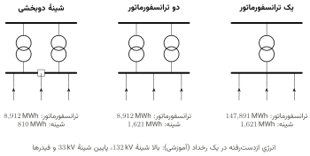
substation arrangements: energy lost in one event (MWh)
arrangement transformer busbar units
single bus, one transformer 147,891 1,621 1
single bus, two transformers 8,912 1,621 2
split bus, two transformers 8,912 810 2
the split (sectionalised) 33 kV bus with a bus-section
breaker keeps half the plant on a busbar fault; the second
transformer covers the long transformer outage; both add
bays, protection and space (chapters 26-27)مثال 18.39 (نیمی میماند) پرسش. انرژیِ یک رخدادِ ترانسفورماتور و یک رخدادِ شینه را در سه چیدمان بنویسید و چیدمانِ مبنا را با دلیل انتخاب کنید.
پاسخ. خروجیِ بالا و شکل 18.15: یک ترانسفورماتور 147,891 و 1,621 MWh؛ دو ترانسفورماتور 8,912 و 1,621؛ شینهٔ دوبخشی 8,912 و 810 MWh.
تفسیر. ترانسفورماتورِ دوم رخدادِ بزرگ را هفده برابر کوچک میکند؛ بخشِ دوم شینه رخدادِ کوچک را نصف. مبنا: دو ترانسفورماتور و شینهٔ دوبخشی (شکل 18.4)، چون کلیدِ میانبخش ارزان است و نگهداریِ یک بخش را بی خاموشیِ کلِ نیروگاه ممکن میکند. وارسی: \(0.5 \times 33.76 \times 48 = 810\) (P34).
- دو تصمیمِ معماریِ پست را نام ببرید.
- چرا شینهٔ دوبخشی نگهداری را آسانتر میکند؟
- چرا ترانسفورماتورِ دوم رخدادِ شینه را کوچک نمیکند؟
18.7.4 خطِ هوایی یا کابل، یک یا دو مدار
ایده. برای مسیرِ 7.06 km در 132 kV سه گزینه: خطِ هوایی یکمداره، دومداره، و کابلِ زمینی. کابل ظرفیتِ خازنیِ بزرگی دارد و توانِ واکنشیِ شارژ میسازد:
\[ Q_\text{c} = V^2\,\omega\,C\,\ell \tag{18.6}\]
که \(C\) ظرفیتِ خازنی بر کیلومتر و \(\ell\) طول است. خطای کابل کمتر رخ میدهد ولی تعمیرش طولانی است.
def export_option(name: str, km: float = 7.06) -> dict:
"""Yearly loss and expected unserved energy (MWh), charging (Mvar)
and cost (M u) of one export option on the 132 kV route."""
p = np.clip(s15.plant_year()["net"], 0, None)
d = src.EXPORT[name]
n = d["circuits"]
r_ohm = d["r"] * km / n # parallel circuits share current
return {"loss": float(ar.loss_mw(p, 132.0, r_ohm).sum()),
"q": ar.charging_mvar(132.0, d["c_uf"], km) * n,
"out": ar.unserved_mwh(p, d["fail_per_km"] * km,
d["repair_h"], n, 100.0),
"cost": d["cost_per_km"] * km / 1000}export options for the 7.06 km route at 132 kV (A-286):
option loss charging outage cost
MWh/yr Mvar MWh/yr M u
overhead line, single circuit 754 0.35 17 3.18
overhead line, double circuit 377 0.70 0 4.80
underground cable 188 7.73 114 11.30
the double circuit halves losses and carries the plant through
a single fault; the cable loses little, but its repairs are
long and it produces reactive power to manage; the route,
permits and owner (chapter 17) decide before the numbers doمثال 18.40 (کابل کم میبازد، دیر تعمیر میشود) پرسش. تلف، توانِ شارژ، امیدِ انرژیِ ازدسترفته و هزینهٔ سه گزینه را بنویسید و بگویید چه چیزی پیش از عددها تصمیم میگیرد.
پاسخ. خروجیِ بالا: یکمداره 754 MWh، 0.35 Mvar، 17 MWh، 3.18 میلیون؛ دومداره 377، 0.70، صفر، 4.80؛ کابل 188، 7.73 Mvar، 114، 11.30 میلیون.
تفسیر. دومداره تلف را نصف میکند و نیروگاه را از یک خطا عبور میدهد، ولی با هزینههای آموزشی سالانه نمیارزد (مثال 18.33). کابل کمتلف است اما سه و نیم برابر گرانتر، تعمیرش ده روز و توانِ واکنشیِ 7.73 Mvar میسازد که باید مدیریت شود (فصلِ ۲۷). پیش از عددها مسیر و مالکیت تصمیم میگیرند: مجوزِ دالانِ هوایی، زمینِ کشاورزی، منظر (فصلِ ۱۴) و اینکه خط مالِ کیست (بخش 17.6). وارسی: \(132^2 \times 2\pi \times 50 \times 0.20 \times 10^{-6} \times 7.06 = 7.73\) (E05).
- معادلهٔ 18.6 را برای خطِ هوایی با 0.009 میکروفاراد بر کیلومتر به کار ببرید.
- چرا امیدِ انرژیِ ازدسترفتهٔ کابل از خطِ هوایی بیشتر است با اینکه کمتر خراب میشود؟
- دو عاملِ غیرعددی که پیش از عددها تصمیم میگیرند بنویسید.
18.7.5 مسیر، محیط، زمین و زمان
ایده. هر گزینهٔ صادرات در شش بُعد سنجیده میشود؛ جدولِ زیر برای مسیرِ آموزشیِ نیروگاهِ P است (فصلِ ۱۴، دالانِ 5 %).
| بُعد | خطِ هوایی یکمداره | خطِ هوایی دومداره | کابلِ زمینی |
|---|---|---|---|
| فنی | ساده، توانِ واکنشیِ کم | افزونگی در خطا | شارژِ زیاد، جبرانساز |
| محیطی | پرندگان، منظر | همان، دکلهای بزرگتر | خاکبرداری، زیستگاه در ساخت |
| زمین | دالان و حقِ عبور | دالانِ کمی پهنتر | دالانِ باریک، محدودیتِ روی آن |
| هزینه | کمترین | میانه | بیشترین |
| زمان | مجوزِ دالان طولانی | همان | ساختِ کُندتر، مجوزِ سادهتر شاید |
| نگهداشتپذیری | بازرسیِ دیداری، تعمیرِ سریع | تعمیر بی قطعی | خطایابی و تعمیرِ کُند |
- شش بُعدِ مقایسه را نام ببرید.
- چرا مجوزِ کابل گاهی سادهتر است؟
- کدام بُعد را دادههای این فصل اصلاً نمیسنجند؟
18.7.7 ظرفیتِ مرحلهای و مرزِ مالکیت
ایده. صادرات را میتوان مرحلهای ساخت: دکلهای دومداره با یک مدارِ کشیده (مدارِ دوم بعداً)، پست با جای ترانسفورماتورِ سوم، بیهای یدک. هر کدام اکنون کمی گرانتر و بعداً بسیار ارزانتر است (مثال 18.14). مرزِ مالکیت (بخش 17.6.1) هم بخشی از معماری است: اگر خط مالِ شرکتِ برق شود، تصمیمِ یک یا دو مداره و زمانِ ساخت با او است و نیروگاه فقط الزام مینویسد؛ اگر مالِ پروژه باشد، پروژه میسازد، نگه میدارد و شاید بعداً واگذار میکند.
مثال 18.41 (دکلِ دومداره، یک مدار) پرسش. هزینهٔ آموزشیِ «دکلِ دومداره با یک مدار» را میانِ دو گزینهٔ خروجی برآورد کنید و بگویید چه زمانی میارزد.
پاسخ. میانِ 3.18 و 4.80 میلیون واحد؛ اگر نیمی از تفاوت مالِ دکلها و پیها باشد، حدودِ \(3.18 + 0.81 = 3.99\) میلیون.
تفسیر. این گزینه وقتی میارزد که گسترش یا حدِ بیشتر محتمل باشد (مثال 18.14) یا اپراتور پس از چند سال مدارِ دوم را برای امنیتِ شبکه بخواهد؛ کشیدنِ مدارِ دوم روی دکلِ موجود معمولاً دالانِ تازه نمیخواهد، هرچند مجوزهای لازم کشوریاند. اگر هیچکدام محتمل نباشد، 0.81 میلیون پولِ خواب است. وارسی: \((4.80 - 3.18)/2 = 0.81\).
- سه شکلِ ساختِ مرحلهای را نام ببرید.
- اگر خط مالِ شرکتِ برق باشد، نیروگاه چه کاری میکند؟
- چرا مدارِ دوم روی دکلِ موجود معمولاً دالانِ تازه نمیخواهد؟
18.7.8 تلفِ دقیقِ رشته
ایده. غربالِ مثال 18.37 جریانِ کلِ رشته را از کلِ طول گذراند. در واقع بخشِ \(k\) اُمِ رشته فقط توربینهای پس از خودش را میبرد. اگر رشته \(n\) بخش با طولِ \(\ell_k\) داشته باشد و هر واحد توانِ \(p\):
\[ P_\text{loss} = \sum_{k=1}^{n} 3\,I_k^2\, r\,\ell_k, \qquad I_k = \frac{(n - k + 1)\,p}{\sqrt{3}\,V\cos\varphi} \tag{18.7}\]
که \(r\) مقاومت بر کیلومتر است.
def string_loss(km_sections, p_unit, kv, ohm_km, pf=0.95) -> float:
"""Yearly I^2 R loss (MWh) of a radial string: section k carries
the units at and beyond it."""
n = len(km_sections)
loss = 0.0
for k, km in enumerate(km_sections):
p = p_unit * (n - k)
loss += float(ar.loss_mw(p, kv, ohm_km * km, pf).sum())
return lossW2b collector loss, section by section against the bound:
cable bound MWh exact MWh exact % of wind
33 kV 240 mm2 1,966 1,141 0.59
33 kV 630 mm2 787 456 0.24
the far sections carry one to three turbines, so the exact
loss is well below the bound; the first section from the
substation carries the whole string and sets the cable sizeمثال 18.42 (نزدیکِ نیمِ کران) پرسش. تلفِ دقیق را با کران برای دو کابل مقایسه کنید و بگویید کدام بخش اندازهٔ کابل را تعیین میکند.
پاسخ. خروجیِ بالا: 240 mm²: کران 1,966، دقیق 1,141 MWh (0.59 % باد)؛ 630 mm²: 787 و 456 MWh.
تفسیر. تلفِ دقیق حدودِ 58 % کران است؛ پس مقایسهٔ مثال 18.33 به سودِ کابلِ بزرگتر بیشبرآورد کرده بود و نتیجهاش (ماندنِ 240 mm²) محکمتر شد. اولین بخش از پست کلِ رشته را میبرد، پس ردهٔ جریانِ کابل را آن بخش تعیین میکند؛ کابلِ پلهای (بزرگ نزدیکِ پست، کوچک در انتها) راهِ رایجِ صرفهجویی است. وارسی: \(1{,}141 / 1{,}966 = 0.58\).
- معادلهٔ 18.7 را برای رشتهٔ دوبخشی با کلمه بنویسید.
- چرا تلفِ دقیق از کران کمتر است؟
- کابلِ پلهای چیست و کجا صرفه میدهد؟
18.7.9 فیدرهای خورشیدی
ایده. ده بلوکِ 5 MW در دو ردیف در شرقِ پستاند (مرکزِ بلوکها آموزشی). اگر دو فیدرِ پنجبلوکی باشد، هر فیدر 25 MW میبرد؛ آیا کابلِ 240 mm² کافی است؟
PV block feeders at 33 kV (block centres teaching, A-286):
option peak kA rating loss MWh km cost k u
2 feeders of 5, 240 mm2 0.460 0.41 over 405 4.15 394
2 feeders of 5, 630 mm2 0.460 0.66 ok 162 4.15 684
3 feeders 4/3/3, 240 mm2 0.368 0.41 ok 287 5.77 548
two feeders of five blocks exceed the 240 mm2 rating at full
output: either the larger cable or a third feeder (and a
third 33 kV bay); the third feeder also shrinks what one
cable fault takes out (four blocks or fewer, not five)مثال 18.43 (دو فیدر سنگین، سه فیدر سبک) پرسش. جریانِ اوج، رده، تلف، طول و هزینهٔ سه گزینه را بنویسید و یک گزینه را با دلیل انتخاب کنید.
پاسخ. خروجیِ بالا: دو فیدر با 240 mm²: 0.460 kA بیش از ردهٔ 0.41 (رد)؛ دو فیدر با 630 mm²: درست، 162 MWh، 684 هزار؛ سه فیدر با 240 mm²: 0.368 kA، 287 MWh، 5.77 km، 548 هزار بهاضافهٔ یک بیِ 33 kV.
تفسیر. گزینهٔ اول رد است، نه گران: رده الزام است، نه ترجیح. میانِ دو گزینهٔ دیگر، سه فیدر کابلِ ارزانتری دارد ولی یک بیِ اضافه میخواهد و خطای یک کابل حداکثر چهار بلوک را میبرد؛ مبنا سه فیدر است و شینهٔ دوبخشی دو فیدرِ خورشیدی را در یک بخش و یکی را در بخشِ دیگر میگذارد. وارسی: \(25 / (\sqrt{3} \times 33 \times 0.95) = 0.460\).
- چرا گزینهٔ اول «رد» است و نه «گران»؟
- سه فیدر چه چیزِ دیگری جز کابل میخواهد؟
- فیدرهای خورشیدی را روی دو بخشِ شینه چگونه پخش میکنید؟
18.7.10 ولتاژِ صادرات
ایده. همان خط با همان هادی در 132 kV یا 66 kV: جریان دو برابر، تلف چهار برابر و افزایشِ ولتاژ (فصلِ ۱۷) هم چهار برابر.
export voltage for the 7.06 km line (same conductor, teaching):
voltage loss MWh/yr loss % voltage rise at 100 MW, pf 1
132 754 0.26 0.49 %
66 3,015 1.02 1.94 %
66 kV loses four times as much and lifts the voltage four
times as far; it is chosen only when the grid bay is 66 kV,
and then the grid decides it, not the plant (chapter 17)مثال 18.44 (یک درصد یا یکچهارم درصد) پرسش. تلف و افزایشِ ولتاژ را در دو ولتاژ بنویسید و بگویید ولتاژِ صادرات را چه کسی تعیین میکند.
پاسخ. خروجیِ بالا: 132 kV: 754 MWh (0.26 %)، 0.49 %؛ 66 kV: 3,015 MWh (1.02 %)، 1.94 %.
تفسیر. ولتاژِ صادرات را ولتاژِ بیِ شبکه تعیین میکند (بخش 17.3.1)؛ اگر بی 132 kV است، خطِ 66 kV یک ترانسفورماتورِ دیگر در سرِ شبکه میخواهد. پس این انتخاب فقط وقتی باز است که شبکه هر دو ولتاژ را در دسترس بگذارد، و آنگاه اختلافِ 2,261 MWh در سال (113 هزار واحد) کنارِ هزینهٔ تجهیز سنجیده میشود. وارسی: \(3{,}015 / 754 = 4.0\).
- چرا تلف با نصف شدنِ ولتاژ چهار برابر میشود؟
- ولتاژِ صادرات را چه چیزی تعیین میکند؟
- اختلافِ تلف را به پول تبدیل کنید.
18.8 نیروگاهِ P: سه مثالِ یکپارچه
سه مثال: وارسیِ ردههای اصلی در برابرِ ظرفیتها (مقدماتی)، مبنای خدماتِ آب (میانی) و مبنای معماری که فصلهای ۱۹ تا ۲۸ را تغذیه میکند (یکپارچه). داده: مدلِ 15.1، سناریوی S1، مقدارهای آموزشیِ A-286 تا A-289.
برنامه:
python -m companion.ch18.integratedمثال 18.45 (مقدماتی: ردهها در برابرِ ظرفیتها) پرسش. ترانسفورماتورهای اصلی و رشتههای جمعآوری را با ظرفیتهای نیروگاهِ P غربال کنید و بگویید با یک ترانسفورماتورِ خارج از کار چقدر میتوان صادر کرد.
main ratings against the capacities (S1, teaching):
peak at the 33 kV bus in the model year: 107.5 MW
wind 60 + PV 50 MW at pf 0.95: 115.8 MVA against 2 x 63 = 126 MVA (ok)
one transformer out: 59.8 MW can still be exported
hours above that in the model year: 1,049
collector string of 4 turbines at 33 kV: 0.368 kA (240 mm2 rated 0.41)
battery 20 MW on its own bays: the export limit, not the
transformers, caps wind + PV + battery at the POC
ratings come from suppliers; these checks only screen themپاسخ. اوجِ شینهٔ 33 kV در سالِ مدل 107.5 MW؛ باد و خورشیدی با ضریبِ توانِ 0.95 115.8 MVA در برابرِ 126 MVA (درست)؛ با یک ترانسفورماتور 59.8 MW، و در 1,049 ساعت از سال توانِ بیشتری در نقطهٔ اتصال هست؛ رشته 0.368 kA در برابرِ ردهٔ 0.41.
تفسیر. ترانسفورماتورها با هم حاشیه دارند، اما هر کدام بهتنهایی فقط نیمی از نیروگاه را میبرد؛ پس معیارِ «یکی کمتر»ِ فصلِ ۱۷ (دیگری همهٔ بار را ببرد) برای همهٔ توان برقرار نیست: با یک ترانسفورماتورِ خارج از کار، 1,049 ساعت در سال بُرش هست (مثال 18.12). حاشیهٔ رشته کم است (10 %)؛ اگر توربینِ بزرگتری انتخاب شود، اول این رابط میشکند. ردهها از سازنده با شاهد میآیند (فصلهای ۲۵ و ۳۹). وارسی: \(110 / 0.95 = 115.8\) و \(0.368 / 0.41 = 0.90\).
مثال 18.46 (میانی: مبنای خدماتِ آب) پرسش. مبنای خدماتِ آب را با مصرفها، منبع، ذخیره، کیفیت، اولویت و اندازهگیری بنویسید.
water-service basis (teaching, A-286; PLP-MEC-REP-0002):
uses: PV cleaning (truck, ch 15 trigger), sanitation for
25 staff, battery chiller make-up; construction separate
operating demand 2,804 m3 a year, peak month 433 m3
source: licensed well 1,500 m3 a month (U-053 open);
the spring only as a back-up outside Jun-Sep
storage: 2,500 m3 = 1,600 m3 usable + 900 m3 held reserve
(placeholder for the fire authority, chapter 32)
quality: cleaning water to the module maker's limits,
drinking water treated and kept separate
priority when short: reserve untouched, then drinking and
sanitation, then battery cooling, then cleaning
metering: well, tank outlet, each use; monthly reportپاسخ. خروجیِ بالا (PLP-MEC-REP-0002): سه مصرف با 2,804 m³ در سال؛ چاهِ مجاز با چشمه پشتیبان؛ مخزنِ 2,500 m³ با 900 نگهداشته؛ کیفیت از سازنده و آشامیدنیِ جدا؛ اولویتِ ذخیره، آشامیدن، باتری، شستوشو؛ کنتورِ هر مصرف.
تفسیر. مبنای آب سه باز دارد: مجوزِ چاه (U-053)، حجمِ ذخیرهٔ آتش از مقامِ مسئول (فصلِ ۳۲) و روشِ شستوشو (ربات یا کامیون، D-014). هر کدام که عوض شود، مخزن و منبع دوباره اندازه میشوند؛ برنامه همان است. وارسی: \(1{,}600 + 900 = 2{,}500\) (P19).
مثال 18.47 (یکپارچه: مبنای معماری) پرسش. مبنای معماریِ نیروگاهِ P را در یک صفحه جمع کنید: حالت، ظرفیتها، جمعآوری، پست، صادرات، رابطها، آب و بازها.
architecture basis of Plant P (D-022; PLP-ELE-REP-0005):
mode: grid-connected, grid-following; island only for
the plant's critical loads behind a transfer switch
capacities: wind 60 MW (12 x 5), PV 60.06 MWp / 50 MW AC,
battery S1 20 MW / 40 MWh AC-coupled, export 100 MW
collector: 33 kV, 3 radial wind strings, 3 PV feeders,
battery on its own bays; split 33 kV bus
reactive power: units plus battery inverters (margin 3 Mvar)
or a compensator, after the grid code (U-067)
substation: two 63 MVA 33/132 kV transformers
export: single-circuit 132 kV overhead line, 7.06 km
interfaces: 18 system pairs; 10 detailed items in the
register (PLP-GEN-REG-0004), 4 mismatches to close
water: well, 2,500 m3 tank with a held reserve
open: POC and line owner (U-065..U-068), coupling, cable
size, line circuits; change control from here onپاسخ. خروجیِ بالا (PLP-ELE-REP-0005): متصل به شبکه با جزیره فقط برای بارهای حیاتی؛ باد 60 MW، خورشیدی 60.06 MWp و 50 MW، باتری 20 MW و 40 MWh کوپلِ متناوب، صادرات 100 MW؛ 33 kV با سه رشتهٔ شعاعیِ بادی، سه فیدرِ خورشیدی و شینهٔ دوبخشی؛ توانِ واکنشی از واحدها و اینورترهای باتری یا جبرانساز؛ دو ترانسفورماتورِ 63 MVA؛ خطِ هوایی یکمداره؛ 18 جفت سامانهٔ دارای رابط و دفترِ دهرابطه با چهار ناسازگاری؛ چاه و مخزن.
تفسیر. این صفحه ورودیِ فصلهای بعد است: باتری (۱۹)، کنترل (۲۰)، اقتصاد (۲۱)، طراحیِ برقی و حفاظت (۲۴ تا ۲۷) و اتصال (۲۸). بازها (U-065 تا U-068، کوپل، کابل، مدارها) مالک و شرطِ بسته شدن دارند؛ از این پس هر تغییر از کنترلِ تغییر میگذرد. وارسی: نقشهٔ شکل 18.4 با همین صفحه میخواند.
18.9 گردشِ کارِ معماری
۱. ورودیها: مبنای الزامات و مرز (D-021)، مبنای انرژی (D-019)، چیدمان (D-018).
۲. حالت و کوپل: چه کسی ولتاژ و بسامد را میسازد؛ باتری کجا وصل میشود.
۳. مرزها: کنتورها، تلفات، مصرفِ داخلی، نمودارِ تکخطیِ ساده.
۴. ظرفیتها: نسبتها، آمیزه، حد، ذخیره، با غربالِ مدل و هزینهٔ آموزشی.
۵. افزونگی و نگهداری: امید و رخدادِ یک خرابی، شمارِ واحدها، گسترش.
۶. تجزیه و رابط: درختِ محصول، ساختن و خریدن، ماتریسِ N²، دفترِ رابط، سندِ کنترلِ رابط، وارسیِ ناسازگاری.
۷. آب: نیاز، منبع، ذخیره با بخشِ نگهداشته، اولویت، اندازهگیری؛ آبِ ساخت جدا.
۸. جمعآوری و صادرات: ولتاژ، توپولوژی، پست، خط یا کابل، مسیر، مالکیت.
۹. مقایسه و مبنا: فرضهای مشترک، انتخاب به انتخاب، معیارهای وزندار، مبنا با بازهای نامدار.
18.10 آزمایشگاههای پایتونِ این فصل
| آزمایشگاه | برنامه | آنچه میسازد |
|---|---|---|
| دادهها | sources | بازدهها، کابل و خط، درختِ محصول، دفترِ رابط، آب، هزینه و قابلیتِ اطمینانِ آموزشی |
| مفاهیم | examples_a | زنجیرهٔ تبدیل، یک سال باتری با دو کوپل، حالتها |
| انتخاب | examples_b | نسبتها، آمیزه، حدِ صادرات، ذخیره، افزونگی، اینورترها، گسترش |
| رابطها | examples_c | درختِ محصول، دفتر، ناسازگاریها |
| آب | lab_d | نیاز، منبعها، مخزن، آبِ ساخت |
| مقایسه | lab_e | فرضهای مشترک، انتخاب به انتخاب، ماتریس، مبنا |
| جمعآوری و صادرات | examples_f | رشتهها با سه کابل، سه گزینهٔ صادرات |
| درسهای بیشتر | examples_g | مرزها، حلقهٔ باز، پست، ردهٔ محیطی، ماتریسِ N² |
| شبکه، آب، گزینه | examples_i | نقطههای داده، تصفیه، ارزشِ آمادهسازی، S0 در برابرِ S1 |
| جزیره، یدک، چرخهٔ رابط | examples_j | منبعِ جزیرهٔ بارهای حیاتی، یدکها با توزیعِ پواسون، مرحلههای رابط در دروازهها |
| درسهای تکمیلی | examples_h | باتری و بُرش، تلفِ دقیق، فیدرهای خورشیدی، ولتاژِ صادرات، توانِ واکنشی، دسترسپذیری، بستههای قرارداد |
| نیروگاهِ P | integrated | ردهها، مبنای آب، مبنای معماری |
| مثالها و پاسخها | worked | سطرهای E01 و P01 به بعد |
کتابخانهٔ همراه ماژولِ architecture را میافزاید: زنجیرهٔ تبدیل و دو کوپل، جریان، تلف، افت، توانِ شارژ، انرژیِ ازدسترفته در خرابی، درختِ محصول، رکوردِ رابط با وارسیِ ناسازگاری و ترازِ ماهانهٔ آب؛ با آزمونهایی که پاسخِ دستی دارند.
کارهای آزمایشگاهی برای خواننده:
- در
sourcesبازدهِ رفتوبرگشتِ سلول را 0.92 کنید و مثال 18.2 را دوباره بسازید. - در
examples_bحدِ صادرات را 90 MW بگذارید و جدولِ آمیزه را دوباره بسازید؛ کمینه به کدام سو میرود؟ - نرخِ خرابیِ ترانسفورماتور را دو برابر کنید و مثال 18.33 را دوباره اجرا کنید؛ آیا علامتِ انتخابِ ترانسفورماتور عوض میشود؟
- یک رابطِ تازه با ناسازگاری به دفتر بیفزایید و وارسی را دوباره اجرا کنید.
- در
lab_dروشِ شستوشو را ربات بگیرید (آبِ شستوشو صفر) و مخزن را دوباره اندازه کنید.
18.11 ساخت و تولیدِ صنعتی در این فصل
این فصل خودش چیزی نمیسازد، اما رابطِ کارخانه را تعریف میکند: هر گرهِ «خرید» در درختِ محصول یک تجهیزِ کارخانهای است با برگهٔ داده، آزمونِ کارخانه، بستهبندی و حمل؛ هر گرهِ «خرید و ساخت» نقشهٔ رابطِ مکانیکی و تلرانس میخواهد؛ و هر گرهِ «خرید و یکپارچهسازی» سندِ کنترلِ رابط و آزمونِ یکپارچه (جدول 18.6). نشانههای مرجعِ درختِ محصول همان نشانههاییاند که روی بسته، در انبار و در سامانهٔ نگهداری میآیند. فرایندهای کارخانهای در فصلهای ۴۰ تا ۴۸ میآیند.
18.12 جعبهٔ استاندارد و انطباق
مرجعهای زیر فقط با عنوان و ویرایشِ وارسیشده آمدهاند (دفترِ استانداردها) و هیچ بند یا مقداری از آنها نقل نشده است. پذیرشِ ملیِ هیچکدام در ایران، افغانستان و تاجیکستان وارسی نشده است (فصلهای ۵۵ تا ۵۷).
- ساختاردهی و نشانههای مرجع: IEC 81346-1:2022.
- فرایندهای چرخهٔ عمرِ سامانه (از جمله مدیریتِ رابط): ISO/IEC/IEEE 15288:2023؛ مهندسیِ الزامات: ISO/IEC/IEEE 29148:2018.
- ارتباطاتِ پست و نیروگاه: مجموعهٔ IEC 61850 (ویرایشِ هر بخش پیش از نقل وارسی شود)؛ کنترلِ از راه دور: IEC 60870-5-104:2006+AMD1:2016.
- ولتاژهای استاندارد: IEC 60038:2009؛ ردهٔ خوردگی: ISO 12944-2:2017.
- کشوری: کدِ شبکه، مجوزِ دالانِ خط، مجوزِ برداشتِ آب و الزاماتِ آتشنشانی کشوریاند و از مقامهای مسئول میآیند (فصلهای ۲۸، ۳۲ و ۵۵ تا ۵۷).
18.13 تحویلدادنیِ نیروگاهِ P
این فصل اینها را به پروندهٔ نیروگاهِ P میافزاید:
- PLP-ELE-DWG-0004، بازنگریِ A: نمودارهای معماری: حالتها، کوپل، مرزها و نمودارِ تکخطیِ ساده (شکل 18.1، شکل 18.3، شکل 18.4).
- PLP-ELE-REP-0005، بازنگریِ A: مبنای معماری و صادرات (مثال 18.47، مثال 18.40، مثال 18.39).
- PLP-MEC-REP-0002، بازنگریِ A: مبنای خدماتِ آب (مثال 18.46).
- PLP-GEN-REG-0004، بازنگریِ A: دفترِ رابطها با ماتریسِ N² و چهار ناسازگاریِ باز (مثال 18.20، مثال 18.23).
- کتابخانهٔ همراه: ماژولِ
architectureبا آزمونها و برنامههایcompanion/ch18. - فرضها: A-286 دادهٔ فنیِ آموزشی (بازدههای تبدیل، کابلها و خط، درختِ محصول، دفترِ رابط با چهار ناسازگاریِ کاشته، آب)؛ A-287 هزینههای غربال (باد، خورشیدی، اتصال، ترانسفورماتورها، مبدلها، بهرهبرداری، اقساط)؛ A-288 قابلیتِ اطمینان (ترانسفورماتور، اینورترها، کابلها، شینه)؛ A-289 مبنای ردهٔ محیطی (کاهشِ رده با دما، ارتفاعِ مبنا). همه آموزشی؛ در انتشارِ بعدیِ بستهٔ داده به دفترِ فرضها افزوده میشوند.
- مجهولها: U-069 کاربردهای بازارِ باتری که کوپل را تعیین میکنند (فصلهای ۱۹ تا ۲۱)؛ U-070 پیشنهادهای کابل و هزینهٔ واقعیِ اندازهها؛ U-071 قاعدهٔ امنیتِ اپراتور برای یک یا دو مدار؛ U-072 حجمِ ذخیرهٔ آتش از مقامِ مسئول.
- تصمیم D-022: معماریِ مبنای نیروگاهِ P همان A1 است: متصل به شبکه با جزیره فقط برای بارهای حیاتی؛ باتریِ کوپلِ متناوب؛ جمعآوریِ 33 kV با رشتههای شعاعیِ بادی، سه فیدرِ خورشیدی و شینهٔ دوبخشی؛ توانِ واکنشی از واحدها و اینورترهای باتری یا جبرانساز تا U-067؛ دو ترانسفورماتورِ 63 MVA؛ خطِ هوایی یکمداره؛ آب از چاهِ مجاز با مخزنِ 2,500 m³ و ذخیرهٔ نگهداشته. کوپل، اندازهٔ کابل و شمارِ مدارها تا U-069 تا U-071 باز میمانند؛ همه مشروط به U-065 تا U-068.
- دفترِ سندها (جدول 2.18): چهار ردیفِ بالا با وضعیتِ «پیشنویس، آموزشی».
18.14 جمعبندی
- حالت و کوپل: چه کسی ولتاژ و بسامد را میسازد (شبکه یا منبعِ سازنده)؛ باتری در شینهٔ متناوب یا مستقیم؛ بازده حاصلضربِ تبدیلهاست، اما کاربردهای بازار کوپل را تعیین میکنند (بخش 18.2).
- مرزها: هر مرز یک عدد، یک کنتور و یک مالک دارد؛ از 301.49 در شینه تا 295.14 GWh در کنتورِ درآمد (بخش 18.2.6).
- انتخاب: نسبتها، آمیزه، حد، ذخیره، افزونگی، نگهداشتپذیری، گسترش، کنترلپذیری، بلوغ، پیچیدگی؛ غربالِ مدل با هزینهٔ آموزشی جهت را نشان میدهد، نه بهینه را (بخش 18.3).
- افزونگی برای دُم: امیدها کوچکاند، رخدادِ ششماههٔ ترانسفورماتور نه (بخش 18.3.6).
- رابطها: درختِ محصول تا واحدِ تعویضپذیر، ساختن و خریدن، ماتریسِ N²، دفتر و سندِ کنترلِ رابط؛ ناسازگاری روی کاغذ ارزان و پس از تحویل گران است (بخش 18.4).
- آب: مصرفی جدا از ذخیرهٔ نگهداشته؛ اوجِ نیاز در ماههای خشک؛ دو منبع؛ اولویت و کنتور؛ آبِ ساخت جدا (بخش 18.5).
- مقایسه: فرضهای مشترک، انتخاب به انتخاب، چیرگی پیش از وزن، مبنا با بازهای نامدار (D-022، بخش 18.6).
- صادرات: ولتاژ و توپولوژیِ جمعآوری، پست، خط یا کابل؛ مسیر و مالکیت پیش از عددها تصمیم میگیرند (بخش 18.7).
18.14.1 واژگانِ فصلِ ۱۸
| فارسی | انگلیسی | یادداشت |
|---|---|---|
| معماری | architecture | |
| حالتِ بهرهبرداری | operating mode | |
| متصل به شبکه | grid-connected | |
| جزیرهای | islanded | |
| جزیرهٔ برنامهریزیشده | planned (intentional) island | |
| پیروِ شبکه | grid-following | |
| سازندهٔ شبکه | grid-forming | |
| کوپلِ متناوب | AC coupling | |
| کوپلِ مستقیم | DC coupling | |
| کوپلِ آمیخته | mixed coupling | |
| مبدلِ مستقیم به مستقیم | DC/DC converter | |
| نیروگاهِ همجا | co-located plant | |
| نیروگاهِ یکپارچه | integrated hybrid plant | |
| مرزِ جریانِ توان | power-flow boundary | |
| مصرفِ داخلی | auxiliaries, own use | |
| نمودارِ تکخطی | single-line diagram | SLD |
| شینهٔ دوبخشی | split (sectionalised) busbar | |
| کلیدِ میانبخش | bus-section breaker | |
| نسبتِ ظرفیت | capacity ratio | |
| ذخیرهٔ افزایشی | upward reserve | |
| افزونگی | redundancy | |
| امیدِ انرژیِ ازدسترفته | expected unserved energy | |
| نگهداشتپذیری | maintainability | |
| اینورترِ مرکزی و رشتهای | central and string inverter | |
| گسترشِ مرحلهای | staged expansion | |
| بلوغِ فناوری | technology maturity | |
| درختِ محصول | product breakdown structure | PBS |
| واحدِ تعویضپذیر | line-replaceable unit | LRU |
| نشانهٔ مرجع | reference designation | |
| ساختن یا خریدن | make or buy | |
| ماتریسِ رابط | N-squared (interface) matrix | |
| دفترِ رابطها | interface register | |
| سندِ کنترلِ رابط | interface control document | ICD |
| تلرانس | tolerance | |
| ردهٔ محیطی | environmental rating | |
| مرزِ راهاندازی | commissioning boundary | |
| ذخیرهٔ نگهداشته | held (reserved) volume | |
| مصرفِ مصرفی | consumptive use | |
| رشتهٔ شعاعی | radial string | |
| حلقهٔ باز | open ring | |
| توانِ واکنشیِ شارژ | cable charging reactive power | |
| خطِ دومداره | double-circuit line | |
| چیرگی | dominance |
18.15 ارزیابیِ پلکانی
معیارِ تسلطِ این فصل: خواننده میتواند حالت و کوپل را انتخاب کند، مرزها و تلفات را بنویسد، ظرفیتها را با غربال و معیارهای کیفی بسنجد، نیروگاه را تجزیه و رابطها را با مالک و سند مدیریت کند، معماریِ آب را با ذخیرهٔ نگهداشته بسازد، گزینههای جمعآوری و صادرات را مقایسه کند و مبنا را با بازهای نامدار بنویسد. پاسخها در بخش 18.16 آمدهاند.
18.15.1 پلهٔ ۱: مبانی
تمرین 18.1 بازدهِ زنجیرهٔ 0.983، 0.98، 0.9، 0.98 چیست؟
تمرین 18.2 بازدهِ زنجیرهٔ 0.99، 0.9، 0.99، 0.983 چیست؟
تمرین 18.3 جریانِ 20 MW در 33 kV با ضریبِ توانِ 0.95 چیست؟
تمرین 18.4 تلفِ 0.368 kA در 0.64 اهم چیست؟
تمرین 18.5 توانِ شارژِ کابلِ 7.06 km در 132 kV با 0.20 میکروفاراد بر کیلومتر چیست؟
تمرین 18.6 امیدِ انرژیِ ازدسترفتهٔ خطِ هوایی با 0.006 خرابی بر کیلومتر، 12 ساعت تعمیر و 33.7 MW چیست؟
تمرین 18.7 امیدِ انرژیِ ازدسترفتهٔ یک ترانسفورماتور با 0.01 در سال و 4,380 ساعت چیست؟
تمرین 18.8 ضریبِ اقساطِ 6 % و 20 سال چیست؟
تمرین 18.9 شمارِ ماژولهای ده بلوک با 21 جعبه، 20 رشته و 26 ماژول چیست؟
تمرین 18.10 صادرات با یک ترانسفورماتورِ 63 MVA و ضریبِ توانِ 0.95 چیست؟
تمرین 18.11 بازدهِ کوپلِ متناوب با سلولهای 0.92 و اینورترِ 0.97 چیست؟
تمرین 18.12 سودِ کوپلِ مستقیم روی 1,000 MWh جابهجاشده چیست؟
تمرین 18.13 جریانِ 20 MW در 66 kV چیست؟
تمرین 18.14 نسبتِ تلفِ 33 به 66 kV با مقاومتِ یکسان چیست؟
تمرین 18.15 افتِ ولتاژ با 0.64 و 0.47 اهم، 20 MW و ضریبِ توانِ 0.95 در 33 kV چیست؟
تمرین 18.16 توانِ شارژِ خطِ هوایی با 0.009 میکروفاراد بر کیلومتر چیست؟
تمرین 18.17 امیدِ انرژیِ ازدسترفتهٔ کابل با 0.002 بر کیلومتر و 240 ساعت چیست؟
تمرین 18.18 هزینهٔ سالانهٔ 1,620 هزار واحد با ضریبِ 0.1072 چیست؟
تمرین 18.19 ارزشِ 394 MWh با 50 واحد بر مگاواتساعت چیست؟
تمرین 18.20 نسبتِ ظرفیتِ ترانسفورماتورها (2 × 63 MVA، ضریبِ 0.95) به 110 MW چیست؟
تمرین 18.21 توانِ میانگین در نقطهٔ اتصال با 295.86 GWh چیست؟
تمرین 18.22 انرژیِ یک رخدادِ ششماههٔ ترانسفورماتور با 33.76 MW چیست؟
تمرین 18.23 ارزشِ آن رخداد با 50 واحد بر مگاواتساعت چیست؟
تمرین 18.24 آبِ ماهانهٔ 25 نفر با 120 لیتر در روز در ماهِ ۳۱روزه چیست؟
تمرین 18.25 مجوزِ 1,500 m³ در ماه چند لیتر بر ثانیه است؟
تمرین 18.26 با نُه سامانه چند جفت در ماتریسِ N² هست؟
تمرین 18.27 هزینهٔ 3.0 km پیوند با 95 هزار بر کیلومتر چیست؟
تمرین 18.28 ردهٔ اینورتر در 45 °C با کاهشِ 2 % بر کلوین بالای 40 چیست؟
تمرین 18.29 انرژیِ یک خطای شینهٔ دوبخشی با نیمِ 33.76 MW و 48 ساعت چیست؟
تمرین 18.30 سه حالتِ بهرهبرداری را تعریف کنید.
تمرین 18.31 پیروِ شبکه و سازندهٔ شبکه را مقایسه کنید.
تمرین 18.32 کوپلِ متناوب، مستقیم و آمیخته را تعریف کنید.
تمرین 18.33 سه معنای «هیبریدی» را بنویسید.
تمرین 18.34 چهار کنتورِ M1 تا M4 را تعریف کنید.
تمرین 18.35 پنج ترازِ درختِ محصول را نام ببرید.
تمرین 18.36 هفت بخشِ سندِ کنترلِ رابط را نام ببرید.
تمرین 18.37 مصرفِ مصرفی و ذخیرهٔ نگهداشته را تعریف کنید.
تمرین 18.38 شعاعی و حلقهٔ باز را تعریف کنید.
تمرین 18.39 بازدهِ رفتوبرگشتِ کوپلِ متناوب با 0.98، 0.9، 0.98 چیست؟
تمرین 18.40 تجهیزاتِ جانبی را تعریف کنید.
تمرین 18.41 توانِ واکنشیِ لازم در نقطهٔ اتصال با 100 MW و ضریبِ توانِ 0.95 چیست؟
تمرین 18.42 توانِ واکنشیِ مصرفیِ ترانسفورماتورِ 12 % با 105.3 MVA روی 126 MVA چیست؟
تمرین 18.43 جریانِ فیدرِ 25 MW در 33 kV چیست؟
تمرین 18.44 نسبتِ تلفِ خطِ 66 به 132 kV چیست؟
تمرین 18.45 بستهٔ قرارداد چیست و چرا رابطِ میانِ دو بسته کارِ مالک است؟
تمرین 18.46 شمارِ نقطههای دادهٔ توربینها با 400 نقطه برای هر کدام چیست؟
تمرین 18.47 آبِ ورودیِ تصفیه با بازیافتِ 70 % برای 1,529 m³ چیست؟
تمرین 18.48 احتمالِ سربهسرِ آمادهسازی با 400 و 1,622 هزار چیست؟
تمرین 18.49 پنج رابطِ واکنش در اضطرار را نام ببرید.
تمرین 18.50 بارِ پیوستهٔ 200 kW با ضریبِ توانِ 0.9 چند کیلوولتآمپر است؟
تمرین 18.51 میانگینِ تقاضای ماژول در دوازده هفته با 109,200 و 0.0005 در سال چیست؟
تمرین 18.52 پنج بخشِ سابقهٔ تصمیمِ معماری را نام ببرید.
تمرین 18.53 پنج مرحلهٔ چرخهٔ عمرِ رابط را نام ببرید.
تمرین 18.54 شش زیرمجموعهٔ توربین را نام ببرید.
تمرین 18.55 نمودارِ تکخطی را تعریف کنید.
تمرین 18.56 چهار مسیرِ شکستِ معماری را که «هر سو درست است» نام ببرید.
تمرین 18.57 بازدهِ رفتوبرگشتِ 0.98، 0.9، 0.98 را در 227 MWh ضرب کنید.
تمرین 18.58 جریانِ فیدرِ پنجبلوکیِ 25 MW چیست و از ردهٔ 0.41 kA بیشتر است؟
تمرین 18.59 پسابِ اسمزِ معکوس برای 1,529 m³ با بازیافتِ 70 % چیست؟
تمرین 18.60 دادهٔ روزانهٔ 1.068 میلیارد نمونه با 16 بایت چیست؟
18.15.2 پلهٔ ۲: تحلیل
تمرین 18.61 انرژی را در مرزهای M1 تا M4 بنویسید و تفاوتها را با نامِ تلف توضیح دهید.
تمرین 18.62 انرژیِ گمشده، ذخیرهشده و برگشتی را در دو کوپل مقایسه کنید.
تمرین 18.63 نسبتهای ظرفیتِ نیروگاهِ P را بنویسید.
تمرین 18.64 هزینهٔ آموزشیِ هر مگاواتساعتِ نیروگاهِ P را با معادلهٔ 18.2 حساب کنید.
تمرین 18.65 کمهزینهترین آمیزهٔ جدول و فاصلهٔ نیروگاهِ P از آن را بنویسید.
تمرین 18.66 انرژیِ افزوده با هر 10 MW حدِ صادرات را بنویسید.
تمرین 18.67 بُرش در حدِ 70 و 100 MW را مقایسه کنید.
تمرین 18.68 انرژیِ ازدسترفته برای ذخیرهٔ 5 MW را بنویسید.
تمرین 18.69 امید و انرژیِ یک رخداد را برای سه گزینهٔ ترانسفورماتور بنویسید.
تمرین 18.70 خرابی و انرژیِ هر خرابی را در اینورترِ مرکزی و رشتهای مقایسه کنید.
تمرین 18.71 انرژیِ افزودهٔ گسترشِ 25 MW را با دو حد بنویسید.
تمرین 18.72 شمارِ هر ترازِ درختِ محصول را بنویسید.
تمرین 18.73 سهمِ ماژولها از واحدهای تعویضپذیر چیست؟
تمرین 18.74 گونههای رابط در ماتریسِ N² را بشمارید.
تمرین 18.75 رابطهای دفتر را بر حسبِ مالک بشمارید.
تمرین 18.76 چهار ناسازگاری و راهحلشان را بنویسید.
تمرین 18.77 انرژیِ ازدسترفته به سببِ دما در اتاقِ گرمتر را بنویسید.
تمرین 18.78 نیازِ آبِ سالانه و سهمِ هر مصرف را بنویسید.
تمرین 18.79 کمبودِ آب با هر منبع را بنویسید.
تمرین 18.80 حجمِ مخزن را با بخشهایش بنویسید.
تمرین 18.81 نیازِ روزانهٔ غبارنشانی را با بهرهبرداری مقایسه کنید.
تمرین 18.82 خالصِ هر انتخاب در مقایسهٔ A1 و A2 را بنویسید.
تمرین 18.83 جمعِ وزندارِ دو معماری را بنویسید.
تمرین 18.84 تلف، افت و هزینهٔ سه گزینهٔ جمعآوری را بنویسید.
تمرین 18.85 امیدِ انرژیِ ازدسترفتهٔ شعاعی و حلقهٔ باز را بنویسید.
تمرین 18.86 انرژیِ یک رخداد در سه چیدمانِ پست را بنویسید.
تمرین 18.87 سه گزینهٔ صادرات را با چهار عدد مقایسه کنید.
تمرین 18.88 ساعتهایی را که توانِ نقطهٔ اتصال از توانِ یک ترانسفورماتور بیشتر است بنویسید.
تمرین 18.89 انرژیِ بازگشته از بُرش با باتریِ 20 MW را در دو حد بنویسید.
تمرین 18.90 بودجهٔ دسترسپذیریِ تجهیزاتِ جانبی را بنویسید.
تمرین 18.91 توانِ واکنشیِ لازم و دردسترس را بنویسید.
تمرین 18.92 جفتهای مرزیِ دو بستهبندی را بنویسید.
تمرین 18.93 تلفِ دقیق و کرانِ رشتهها را برای دو کابل بنویسید.
تمرین 18.94 سه گزینهٔ فیدرِ خورشیدی را مقایسه کنید.
تمرین 18.95 تلف و افزایشِ ولتاژ را در 132 و 66 kV بنویسید.
تمرین 18.96 نقطهها، نمونهها و دادهٔ خامِ روزانهٔ شبکهٔ داده را بنویسید.
تمرین 18.97 برداشتِ چاه با تصفیه و بی آن را مقایسه کنید.
تمرین 18.98 آنچه معماری بی باتری از دست میدهد را بنویسید.
تمرین 18.99 اوجِ بارِ جزیره با راهاندازیِ پمپ را بنویسید.
تمرین 18.100 موجودیِ یدکِ شش واحد را با پوششِ 95 % بنویسید.
تمرین 18.101 شمارِ رابطها در هر مرحله و دروازه را بنویسید.
تمرین 18.102 کدام رابطها در دروازهٔ خرید توافقنشدهاند؟
تمرین 18.103 رابطهای توربین با مالکانِ بیرونی را بشمارید.
تمرین 18.104 تلفاتِ همیشگیِ بیباریِ ترانسفورماتورها در سال چیست؟
تمرین 18.105 بازگرداندنِ بُرش، ارزش و هزینهٔ باتریِ 40 MW با حدِ 80 MW را بنویسید.
تمرین 18.106 ماتریسِ N² را برای S0 بازشمارید.
تمرین 18.107 سه خطای رایج را با درسِ هر کدام بنویسید.
18.15.3 پلهٔ ۳: کاربرد
تمرین 18.108 مالک میخواهد نیروگاه در قطعیِ شبکه روستا را تغذیه کند. با معماری پاسخ دهید.
تمرین 18.109 سازندهٔ اینورتر کوپلِ مستقیم را برای «بیشترین بازده» پیشنهاد میکند. داوری کنید.
تمرین 18.110 دو مالکِ جدا برای باد و خورشیدی. معماری چه چیزی را باید بیفزاید؟
تمرین 18.111 اپراتور حدِ صادرات را 80 MW میدهد. سه پاسخِ معماری با عدد بنویسید.
تمرین 18.112 خریدار ذخیرهٔ 5 MW میخواهد. با منبع یا با باتری؟
تمرین 18.113 وامدهنده دربارهٔ ترانسفورماتورِ واحد میپرسد. پاسخ دهید.
تمرین 18.114 پیمانکارِ خدمات اینورترِ رشتهای میخواهد. مزایا و معایب را بسنجید.
تمرین 18.115 مالک گسترشِ 25 MW را در ده سالِ آینده محتمل میداند. مرحلهٔ نخست چه بگذارد؟
تمرین 18.116 سفارشِ ترانسفورماتورِ بلوک با 0.69 kV رسیده است. چه میکنید؟
تمرین 18.117 کانتینرِ باتری در تابستان مدام توان کم میکند. کدام رابط را وارسی میکنید؟
تمرین 18.118 اتاقِ اینورتر تهویهٔ کافی ندارد. اثر را برآورد کنید.
تمرین 18.119 مجوزِ چاه رد شده است. معماریِ آب چه میشود؟
تمرین 18.120 پیمانکارِ ساخت میخواهد از مخزنِ بهرهبرداری برای غبارنشانی استفاده کند. پاسخ دهید.
تمرین 18.121 در خشکسالی چاه نصف میشود. اولویتها را اجرا کنید.
تمرین 18.122 اپراتور خطِ دومداره را الزام کرده است. اثر بر مقایسه چیست؟
تمرین 18.123 قیمت دو برابر شده است. کدام انتخابها علامت عوض میکنند؟
تمرین 18.124 یک کارشناس امتیازِ «کاربردهای بازارِ باتری» را برای A2 از ۲ به ۴ میبرد. نتیجه؟
تمرین 18.125 زمینِ دالانِ هوایی کشاورزیِ آبی است. گزینهها را دوباره بسنجید.
تمرین 18.126 پروژهٔ همسایه پیشنهادِ خطِ مشترک داده است. چه چیزهایی باید در قرارداد بیاید؟
تمرین 18.127 ساختگاه در زمستان چند هفته بسته است. حلقهٔ باز را دوباره بسنجید.
تمرین 18.128 نگهداریِ یک بخشِ شینه بی خاموشیِ کل چگونه ممکن است؟
تمرین 18.129 توربینهای 6 MW بهجای 5. کدام رابط اول میشکند؟
تمرین 18.130 اپراتور پیش از کابل مسیرِ مستقیمتری را پیشنهاد میدهد که از روستا میگذرد. پاسخ دهید.
تمرین 18.131 اپراتور حدِ 80 MW داده و مالک باتریِ 40 MW را «برای بُرش» میخواهد. پاسخ دهید.
تمرین 18.132 کدِ شبکه ضریبِ توانِ 0.90 را در نقطهٔ اتصال میخواهد. بودجهٔ توانِ واکنشی چه میشود؟
تمرین 18.133 باتری در عصر با توانِ کامل دشارژ میکند و همزمان اپراتور توانِ واکنشی میخواهد. چه میشود؟
تمرین 18.134 مالک توانِ مدیریتِ رابط ندارد ولی قیمتِ چندقراردادی ارزانتر است. چه پیشنهاد میکنید؟
تمرین 18.135 یک مشاور تلفِ جمعآوری را 1.02 % گزارش کرده است. داوری کنید.
تمرین 18.136 بیِ شبکه 66 kV است. معماریِ صادرات چه میشود؟
تمرین 18.137 سازندهٔ توربین نرخِ نمونهبرداری را دهثانیهای پیشنهاد میدهد. چه میکنید؟
تمرین 18.138 آبِ چاه شور است و مجوز با 2,804 m³ گرفته شده است. چه پیش میآید؟
تمرین 18.139 مالک گسترش را «شاید یک در پنج» میداند. آمادهسازی میارزد؟
تمرین 18.140 نیروگاه بی باتری ساخته میشود. دو تجهیزِ جانشین را با دلیل نام ببرید.
تمرین 18.141 بهرهبردار میخواهد پمپِ 55 kW به بارهای حیاتی افزوده شود. منبعِ 500 kVA کافی است؟
تمرین 18.142 زمانِ تحویلِ طبقهٔ توانِ اینورتر به بیست هفته رسیده است. موجودی را دوباره حساب کنید.
تمرین 18.143 یک عضوِ تیم میخواهد سابقهٔ D-022 را با تصمیمِ تازه بازنویسی کند. پاسخ دهید.
تمرین 18.144 فونداسیونِ یک توربین پیش از امضای سندِ رابط ریخته شده است. ریسکها و اقدامها؟
تمرین 18.145 مدیرِ پروژه میخواهد سفارشِ باتری را با IF-006 باز بدهد. پاسخ دهید.
تمرین 18.146 خطای بخشِ بالای شینه در شکل 18.4. چه چیزی جدا میشود؟
تمرین 18.147 مالکانِ باد و خورشیدی میخواهند مصرفِ داخلی را جدا بپردازند. معماریِ کنتور چه میشود؟
تمرین 18.148 یک وامدهنده فقط امیدها را دیده و افزونگی را «هزینهٔ زیادی» میداند. پاسخ دهید.
تمرین 18.149 سازندهٔ باتری اینورترِ 22 MVA بهجای 20 پیشنهاد میکند. بودجهٔ توانِ واکنشی چه میشود؟
تمرین 18.150 فصلِ ۳۲ ذخیرهٔ آتش را 1,500 m³ تعیین کرده است. مخزن چه میشود؟
تمرین 18.151 اپراتور پروتکلِ IEC 60870-5-104 را برای پیوند میخواهد و سازندهٔ کنترلگر فقط IEC 61850 دارد. کجای معماری حل میشود؟
18.15.4 پلهٔ ۴: طراحی و راستیآزمایی
تمرین 18.152 یک سندِ کنترلِ رابط برای IF-006 با هفت بخش بنویسید.
تمرین 18.153 وارسیِ ناسازگاری را با یک «رده» برای واحدها (کیلووات یا مگاوات) گسترش دهید و آزمونش را بنویسید.
تمرین 18.154 درختِ محصولِ باتری را تا رک گسترش دهید و شمارها را حساب کنید.
تمرین 18.155 یک ماتریسِ N² در ترازِ تجهیز برای بلوکِ خورشیدی بسازید.
تمرین 18.156 برای غربالِ جمعآوری، تلفِ بخش به بخش را بهجای «جریانِ کل در کلِ طول» برنامه کنید.
تمرین 18.157 یک آزمون برای water_balance بنویسید که نشان دهد ذخیرهٔ نگهداشته هرگز برداشته نمیشود.
تمرین 18.158 معادلهٔ 18.3 را برای دو ترانسفورماتور با همپوشانیِ خرابیها گسترش دهید.
تمرین 18.159 جدولِ آمیزه را با شکلِ قیمتِ ساعتی بهجای قیمتِ ثابت دوباره بسازید (فرضِ خودتان را بنویسید).
تمرین 18.160 مرزِ راهاندازیِ رابطِ بیِ صادرات و بیِ شبکه را با شاهد و مالک بنویسید.
تمرین 18.161 یک فرمِ تغییرِ معماری برای عوض کردنِ کوپل بنویسید.
تمرین 18.162 ردهٔ محیطیِ کانتینرِ باتری را برای ساختگاهِ نیروگاهِ P بنویسید.
تمرین 18.163 مبنای آب را برای گزینهٔ رباتهای شستوشو دوباره بنویسید.
تمرین 18.164 سیاستِ حریصانهٔ باتری را با پیشبینیِ کامل جایگزین کنید و سقفِ بازگرداندن را بیابید.
تمرین 18.165 بودجهٔ توانِ واکنشی را برای توانِ نیمه بازنویسید.
تمرین 18.166 کابلِ پلهای برای رشتهٔ ۱ طراحی کنید و تلف و هزینه را با معادلهٔ 18.7 حساب کنید.
تمرین 18.167 یک فهرستِ نقطههای داده برای کانتینرِ باتری با نرخ و دلیلِ هر گروه بنویسید.
تمرین 18.168 ارزشِ آمادهسازی را با تنزیلِ 6 % و گسترش در سالِ دهم دوباره حساب کنید.
تمرین 18.169 برای خطای شینه یک چیدمانِ فیدرها روی دو بخش طراحی کنید که انرژیِ یک رخداد را کمینه کند.
تمرین 18.170 یک برنامه بنویسید که از LINKS و LOTS فهرستِ سندهای کنترلِ رابطِ مالک را بسازد.
تمرین 18.171 بودجهٔ دسترسپذیری را با یدکِ مشترکِ ترانسفورماتور دوباره بسازید.
18.15.5 پلهٔ ۵: تسلط
تمرین 18.172 یک گزارشِ دوصفحهای «چرا A1» برای کمیتهٔ سرمایهگذاری بنویسید.
تمرین 18.173 نیروگاهِ P با باتریِ 40 MW و 160 MWh. معماری چه تغییری میکند؟
تمرین 18.174 نیروگاهِ P را برای شبکهٔ جزیرهایِ یک معدن بازطراحی کنید.
تمرین 18.175 نشان دهید کدام عددِ این فصل با دادهٔ واقعی بیشترین تغییر را در مبنا میدهد.
تمرین 18.176 یک برنامهٔ مدیریتِ رابط برای کلِ پروژه طراحی کنید: نقشها، دفتر، سندها، بازبینی، بستن.
تمرین 18.177 معماریِ آب را برای ساختگاهی بی چشمه و بی مجوزِ چاه طراحی کنید.
تمرین 18.178 یک بازبینیِ معماری برای پروژهٔ دیگری طراحی کنید: پرسشها، شاهدها و نتیجهها، با استفاده از همهٔ ابزارهای این فصل.
تمرین 18.179 معماریِ نیروگاهِ P را برای خریدارِ صنعتیِ فصلِ ۱۷ (خودمصرفی) بازنویسید.
تمرین 18.180 نشان دهید سه تصمیمِ باز (U-069 تا U-071) با هم چه برهمکنشی دارند.
18.16 پاسخنامه و راهحلها
پاسخهای عددی را برنامهٔ worked میسازد (سطرهای P01 به بعد در بخش 18.16.1). برای مسئلههای طراحی و تسلط، معیارهای پاسخ آمدهاند.
حل. تمرین 18.1. 0.850 (E01).
حل. تمرین 18.2. 0.867 (E02).
حل. تمرین 18.3. 0.368 kA (E03).
حل. تمرین 18.4. 0.260 MW (E04).
حل. تمرین 18.5. 7.73 Mvar (E05).
حل. تمرین 18.6. 17 MWh (E06).
حل. تمرین 18.7. 1,479 MWh (E07).
حل. تمرین 18.8. 11.47 (E08).
حل. تمرین 18.9. 109,200 (E10).
حل. تمرین 18.10. 59.85 MW (E12).
حل. تمرین 18.11. 0.851 (P01).
حل. تمرین 18.12. 17 MWh (P02).
حل. تمرین 18.13. 0.184 kA (P03).
حل. تمرین 18.14. ۴ (P04).
حل. تمرین 18.15. 1.46 % (P05).
حل. تمرین 18.16. 0.35 Mvar (P06).
حل. تمرین 18.17. 114 MWh (P07).
حل. تمرین 18.18. 173.7 هزار (P09).
حل. تمرین 18.19. 19.7 هزار (P10).
حل. تمرین 18.20. 1.09 (P12).
حل. تمرین 18.21. 33.77 MW (P15).
حل. تمرین 18.22. 147.9 GWh (P16).
حل. تمرین 18.23. 7.39 میلیون (P17).
حل. تمرین 18.24. 93 m³ (P20).
حل. تمرین 18.25. 0.58 L/s (P22).
حل. تمرین 18.26. 36 (P24).
حل. تمرین 18.27. 285 هزار (P27).
حل. تمرین 18.28. 90 % (P29).
حل. تمرین 18.29. 810 MWh (P34).
حل. تمرین 18.30. بخش 18.2.1.
حل. تمرین 18.31. بخش 18.2.2.
حل. تمرین 18.32. بخش 18.2.3.
حل. تمرین 18.33. بخش 18.2.5.
حل. تمرین 18.34. بخش 18.2.6.
حل. تمرین 18.35. بخش 18.4.1.
حل. تمرین 18.36. جدول 18.7.
حل. تمرین 18.37. بخش 18.5.3.
حل. تمرین 18.38. بخش 18.7.2.
حل. تمرین 18.39. 0.864 (مثال 18.11).
حل. تمرین 18.40. بخش 18.3.10.
حل. تمرین 18.41. 32.9 Mvar (مثال 18.16).
حل. تمرین 18.42. 10.6 Mvar (مثال 18.16).
حل. تمرین 18.43. 0.460 kA (مثال 18.43).
حل. تمرین 18.44. ۴ (مثال 18.44).
حل. تمرین 18.45. بخش 18.4.5.
حل. تمرین 18.46. 4,800 (مثال 18.24).
حل. تمرین 18.47. 2,184 m³ (مثال 18.32).
حل. تمرین 18.48. 25 % (مثال 18.17).
حل. تمرین 18.49. جدول 18.10.
حل. تمرین 18.50. 222 kVA (مثال 18.6).
حل. تمرین 18.51. 12.6 (مثال 18.25).
حل. تمرین 18.52. جدول 18.11.
حل. تمرین 18.53. بخش 18.4.14.
حل. تمرین 18.54. جدول 18.9.
حل. تمرین 18.55. بخش 18.2.8.
حل. تمرین 18.56. بخش 18.4.7.
حل. تمرین 18.57. 196 MWh (E15).
حل. تمرین 18.58. 0.460 kA، بله (E18).
حل. تمرین 18.59. 655 m³ (E20).
حل. تمرین 18.60. 17 GB (E24).
حل. تمرین 18.61. مثال 18.4.
حل. تمرین 18.62. 196 و 885 MWh (مثال 18.3).
حل. تمرین 18.63. مثال 18.7.
حل. تمرین 18.64. 46.75 (مثال 18.8).
حل. تمرین 18.65. ۸ توربین و 100 MW، 4 % (مثال 18.8).
حل. تمرین 18.66. مثال 18.9.
حل. تمرین 18.67. 9.81 و 0.23 GWh (مثال 18.9).
حل. تمرین 18.68. 38.7 GWh، 13.1 % (مثال 18.10).
حل. تمرین 18.69. مثال 18.12.
حل. تمرین 18.70. مثال 18.13.
حل. تمرین 18.71. 48.3 و 53.3 GWh (مثال 18.14).
حل. تمرین 18.72. مثال 18.18.
حل. تمرین 18.73. 92.5 % (مثال 18.18).
حل. تمرین 18.74. مثال 18.19.
حل. تمرین 18.75. مثال 18.20.
حل. تمرین 18.76. مثال 18.23.
حل. تمرین 18.77. 256.6 MWh (مثال 18.22).
حل. تمرین 18.78. مثال 18.28.
حل. تمرین 18.79. مثال 18.29.
حل. تمرین 18.80. 1,600 و 900، 2,500 m³ (مثال 18.30).
حل. تمرین 18.81. 40 و 7.7 m³ (مثال 18.31).
حل. تمرین 18.82. مثال 18.33.
حل. تمرین 18.83. 445 و 265 (مثال 18.34).
حل. تمرین 18.84. مثال 18.37.
حل. تمرین 18.85. 82 و 3 MWh (مثال 18.38).
حل. تمرین 18.86. مثال 18.39.
حل. تمرین 18.87. مثال 18.40.
حل. تمرین 18.88. 1,049 (مثال 18.45).
حل. تمرین 18.89. 2,407 و 196 MWh (مثال 18.11).
حل. تمرین 18.90. 731 MWh، 99.75 % (مثال 18.15).
حل. تمرین 18.91. 51.5 و 54.8 Mvar (مثال 18.16).
حل. تمرین 18.92. ۵ و ۱۶ (مثال 18.21).
حل. تمرین 18.93. مثال 18.42.
حل. تمرین 18.94. مثال 18.43.
حل. تمرین 18.95. مثال 18.44.
حل. تمرین 18.96. مثال 18.24.
حل. تمرین 18.97. 3,459 و 2,804 m³ (مثال 18.32).
حل. تمرین 18.98. مثال 18.36.
حل. تمرین 18.99. 434 kVA (مثال 18.6).
حل. تمرین 18.100. مثال 18.25.
حل. تمرین 18.101. مثال 18.27.
حل. تمرین 18.102. IF-005، IF-006، IF-007، IF-010 (مثال 18.27).
حل. تمرین 18.103. شش، پنج مالک (مثال 18.26).
حل. تمرین 18.104. 876 MWh (بخش 18.2.7).
حل. تمرین 18.105. 3,670 MWh، 183.5 و 2,787 هزار (مثال 18.11).
حل. تمرین 18.106. 14 جفت (مثال 18.36).
حل. تمرین 18.107. جدول 18.12.
حل. تمرین 18.108. معیار: سازندهٔ شبکه، حفاظتِ جریانِ کم، اجازه، جزیرهٔ برنامهریزیشده (مثال 18.1).
حل. تمرین 18.109. معیار: 1.7 واحدِ درصد، اما شارژ از باد و شبکه نه (مثال 18.2، مثال 18.3).
حل. تمرین 18.110. معیار: فیدرهای مستقل، کنتورهای جدا، قاعدهٔ تقسیمِ بُرش (بخش 18.2.5، بخش 18.7.6).
حل. تمرین 18.111. معیار: 5.3 GWh از دست، باتری، حدِ پویا، کم کردنِ منبع (مثال 18.9).
حل. تمرین 18.112. معیار: 38.7 GWh ریخته در برابرِ حالتِ شارژ (مثال 18.10).
حل. تمرین 18.113. معیار: رخدادِ 147.9 GWh، دو واحد یا یدکِ مشترک (مثال 18.12).
حل. تمرین 18.114. معیار: 30 در برابرِ 445 MWh، شمارِ مراجعه، کارکردهای شبکه (مثال 18.13).
حل. تمرین 18.115. معیار: زمین، بی، جای ترانسفورماتور، مسیرِ کابل، کنترل (مثال 18.14).
حل. تمرین 18.116. معیار: ناسازگاری با D-012، پیش از ساخت اصلاح، کنترلِ تغییر (مثال 18.23).
حل. تمرین 18.117. معیار: IF-006، گرمای دفعشده در برابرِ تهویه (مثال 18.23).
حل. تمرین 18.118. معیار: 256.6 MWh و عمر (مثال 18.22).
حل. تمرین 18.119. معیار: مخزنِ 2,500 m³ با چشمه، یا ربات (مثال 18.30).
حل. تمرین 18.120. معیار: ذخیرهٔ آتش، مخزنِ جدا (مثال 18.31).
حل. تمرین 18.121. معیار: هنوز کافی؛ اگر نه، ذخیره، آشامیدن، باتری، شستوشو (بخش 18.5.4).
حل. تمرین 18.122. معیار: انتخابِ خط از مقایسه بیرون میرود؛ هزینهٔ 174 در سال (مثال 18.33).
حل. تمرین 18.123. معیار: ارزشها دو برابر؛ کابل +18.5، خط −134.6، ترانسفورماتور −55، کوپل +167.4 (مثال 18.33).
حل. تمرین 18.124. معیار: A1 هنوز برابر یا بیشتر در همهٔ معیارها؛ جمعِ 295 (مثال 18.34).
حل. تمرین 18.125. معیار: جدول 18.14، کابل یا مسیرِ دیگر، مجوز.
حل. تمرین 18.126. معیار: تقسیمِ حد، قطعی، حفاظت، هزینه، نگهداری (بخش 18.7.6).
حل. تمرین 18.127. معیار: زمانِ تعمیر بزرگتر، ارزشِ حلقه بیشتر، ردهٔ کابل (مثال 18.38).
حل. تمرین 18.128. معیار: شینهٔ دوبخشی و کلیدِ میانبخش (مثال 18.39).
حل. تمرین 18.129. معیار: ردهٔ رشته، 0.442 kA در برابرِ 0.41 (مثال 18.45).
حل. تمرین 18.130. معیار: منظر، مشورت، دالان، مالکیت (جدول 18.14، فصلِ ۱۴).
حل. تمرین 18.131. معیار: 183.5 در برابرِ 2,787 هزار؛ کاربردهای بازار (مثال 18.11).
حل. تمرین 18.132. معیار: خواست 48.4 Mvar، کمبود، جبرانساز (مثال 18.16).
حل. تمرین 18.133. معیار: ردهٔ MVA اینورتر، اولویت، جبرانساز (مثال 18.16).
حل. تمرین 18.134. معیار: یکپارچه یا مشاورِ مالک؛ شانزده رابط (مثال 18.21).
حل. تمرین 18.135. معیار: کرانِ بالا؛ دقیق 0.59 % (مثال 18.42).
حل. تمرین 18.136. معیار: ترانسفورماتورهای 33/66، تلفِ چهار برابر، افزایشِ ولتاژ (مثال 18.44).
حل. تمرین 18.137. معیار: الزامِ کنترلگر، سندِ رابط، آزمون (مثال 18.24).
حل. تمرین 18.138. معیار: کمبودِ 655 m³، مجوزِ تازه یا ربات، پساب (مثال 18.32).
حل. تمرین 18.139. معیار: 20 % زیرِ 25 %؛ اما گزینهٔ حد و باتری و تنزیل (مثال 18.17).
حل. تمرین 18.140. معیار: جبرانساز و منبعِ بیوقفهٔ بزرگتر (مثال 18.36).
حل. تمرین 18.141. معیار: \(222 + 55/0.85 \times 6 = 610\)؛ نه، مگر راهاندازِ نرم (مثال 18.6).
حل. تمرین 18.142. معیار: میانگینِ 1.92؛ موجودیِ 4 (معادلهٔ 18.4).
حل. تمرین 18.143. معیار: سابقهٔ تازه، قبلی جانشینشده (بخش 18.6.6).
حل. تمرین 18.144. معیار: تلرانسِ فلنج، پیچها، وارسیِ سازنده، مسیرِ تغییر (مثال 18.26).
حل. تمرین 18.145. معیار: قاعدهٔ دروازه، هزینهٔ اصلاحِ بعدی (مثال 18.27).
حل. تمرین 18.146. معیار: رشتههای بادی و یک ترانسفورماتور؛ خورشیدی و باتری میمانند (مثال 18.5).
حل. تمرین 18.147. معیار: کنتورِ هر فیدر، تقسیمِ مصرفِ مشترک (بخش 18.2.7، بخش 18.7.6).
حل. تمرین 18.148. معیار: دُم، رخدادِ 147.9 GWh، یدکِ مشترک (جدول 18.12).
حل. تمرین 18.149. معیار: حاشیه حدودِ +5 Mvar یا بیشتر، با شرطِ آزاد بودنِ باتری (مثال 18.16).
حل. تمرین 18.150. معیار: 1,600 + 1,500 = 3,100 m³، یا مخزنِ جدا (مثال 18.30).
حل. تمرین 18.151. معیار: دروازهٔ کنترلِ از راه دور، سندِ رابط (شکل 18.11).
حل. تمرین 18.152. معیار: جدول 18.7، گرمای دفعشده با حاشیه، دمای ورودی، آزمون.
حل. تمرین 18.153. معیار: تبدیلِ واحد پیش از مقایسه، آزمونِ دستی.
حل. تمرین 18.154. معیار: 8 کانتینر، 12 رک، 96 رک (بخش 18.4.1).
حل. تمرین 18.155. معیار: ماژول، میز، کابل، جعبه، اینورتر، ترانسفورماتور؛ گونهها.
حل. تمرین 18.156. معیار: جریانِ هر بخش = توربینهای پس از آن؛ تلفِ کمتر از کران.
حل. تمرین 18.157. معیار: کمبود با ذخیرهٔ دستنخورده.
حل. تمرین 18.158. معیار: احتمالِ هر دو خراب، از مرتبهٔ \(\lambda^2 t_\text{r}^2\)، کوچک.
حل. تمرین 18.159. معیار: ارزش بر مگاواتساعت، جابهجاییِ کمینه به سوی باد.
حل. تمرین 18.160. معیار: جدول 18.8، بی روشِ برقدار.
حل. تمرین 18.161. معیار: دلیل، اثر بر رابطها، هزینه، زمان، تأیید (بخش 17.4.7).
حل. تمرین 18.162. معیار: دما، ارتفاعِ 1,200 m، گرد، خوردگی، برف.
حل. تمرین 18.163. معیار: نیازِ 1,275 m³، مخزنِ کوچکتر، ذخیره همان.
حل. تمرین 18.164. معیار: با حدِ 100 همان 196؛ با 80 کمی بیشتر.
حل. تمرین 18.165. معیار: مصرفِ ترانسفورماتور با مجذورِ بار کم میشود؛ قابلیتِ واحدها بیشتر.
حل. تمرین 18.166. معیار: 630 نزدیکِ پست، 240 در انتها؛ ردهٔ هر بخش.
حل. تمرین 18.167. معیار: ولتاژ، دما، حالتِ شارژ، هشدار، تهویه؛ نرخها.
حل. تمرین 18.168. معیار: \(1{,}622 / 1.06^{10} = 906\)؛ سربهسر 44 %.
حل. تمرین 18.169. معیار: نیمی از هر منبع در هر بخش؛ اثر بر کابلکشی (مثال 18.5).
حل. تمرین 18.170. معیار: جفتهای مرزی، گونهها، مالک.
حل. تمرین 18.171. معیار: زمانِ تعمیرِ 720 ساعت، جزءِ ترانسفورماتور کوچکتر (مثال 18.15).
حل. تمرین 18.172. معیار: فرضهای مشترک، انتخاب به انتخاب، چیرگی، دُم، بازها با مالک.
حل. تمرین 18.173. معیار: نسبتها، ترانسفورماتور، حد، کوپل، آب، رابطها.
حل. تمرین 18.174. معیار: سازندهٔ شبکه، ذخیره، حفاظت، ژنراتور، بار، افزونگی.
حل. تمرین 18.175. معیار: هزینهها و نرخِ خرابی؛ کوپل و ترانسفورماتور حساساند.
حل. تمرین 18.176. معیار: ISO/IEC/IEEE 15288:2023 به عنوانِ مرجع، مالک برای هر رابط.
حل. تمرین 18.177. معیار: ربات، تانکر، باران، مخزن، اولویت، ذخیره از مقام.
حل. تمرین 18.178. معیار: حالت، مرزها، نسبتها، دُم، درخت، ماتریس، آب، صادرات، سابقهٔ تصمیم.
حل. تمرین 18.179. معیار: نقطهٔ تحویل در کارخانه، بار، کنتور، صادرات، باتری، آب.
حل. تمرین 18.180. معیار: کوپل و توانِ واکنشی، کابل و فیدرها، مدار و حد؛ ترتیبِ بستن.
18.16.1 خروجیِ برنامهها
پاسخهای عددی:
P01: PV via AC battery at 0.97/0.97/0.92 cells: 0.851
P02: DC gain on 1,000 MWh shifted, 86.7 % vs 85.0 %: 17 MWh
P03: current at 66 kV, 20 MW, pf 0.95: 0.184 kA
P04: loss ratio 33 to 66 kV, same R: 4
P05: drop, R 0.64, X 0.47 ohm, 20 MW, pf 0.95, 33 kV: 1.46 %
P06: charging of an overhead line, 0.009 uF/km: 0.35 Mvar
P07: cable 240 h repair, 0.002/km, 7.06 km, 33.7 MW: 114 MWh/yr
P08: double circuit loss: half of 754: 377 MWh
P09: yearly cost of 1,620 k u at 0.1072: 173.7 k u
P10: value of 394 MWh at 50 u/MWh: 19.7 k u
P11: wind + PV AC / export: (60 + 50) / 100 = 1.10
P12: transformer capacity, 2 x 63 MVA x 0.95 / 110 MW: 1.09
P13: N-1 export with one 63 MVA unit at pf 0.95: 59.8 MW
P14: battery energy / power 40 / 20: 2 h
P15: mean POC power 295.86 GWh / 8760: 33.77 MW
P16: half-year transformer event at 33.76 MW: 147.9 GWh
P17: value of that event at 50 u/MWh: 7.39 million u
P18: tank for 1,518 m3 in steps of 100 m3: 1600 m3
P19: tank with a 900 m3 reserve: 2500 m3
P20: staff water 25 x 120 L x 31 d: 93 m3
P21: cleaning 3 x 109.2 m3: 327.6 m3
P22: well 1,500 m3/month as L/s: 0.58 L/s
P23: dust 10,800 m3 at 40 m3 a working day: 270 days; 40 m3 a day as L/s: 0.46
P24: N-squared pairs of 9 systems: 36
P25: interface share 18 of 36: 50 %
P26: failures, 200 x 0.1 against 10 x 0.5: 20 and 5
P27: tie cable 3.0 km at 95 k u/km: 285 k u
P28: two strings at 33 kV, 40 MW, pf 0.95: 0.737 kA
P29: derate 2 %/K at 45 C: 90 % of rating
P30: weighted score 25x4 + 20x5 + 15x5 + 10x(4+4+5+4): 445
P31: curtailment at 100 MW of 295.86 GWh at POC: 0.08 %
P32: extra GWh per MW from 90 to 100 MW: 0.18
P33: collector cost 13.26 km at 165 k u/km: 2,188 k u
P34: busbar fault, half of 33.76 MW for 48 h: 810 MWhمثالهای کوچک:
E01: AC chain 0.983 x 0.98 x 0.9 x 0.98: 0.850
E02: DC chain 0.99 x 0.9 x 0.99 x 0.983: 0.867
E03: current, 20 MW at 33 kV, pf 0.95: 0.368 kA
E04: loss, 0.368 kA in 0.64 ohm: 0.260 MW
E05: charging, 132 kV, 0.20 uF/km, 7.06 km: 7.73 Mvar
E06: line outages 0.006/km x 7.06 km x 12 h x 33.7 MW: 17 MWh/yr
E07: transformer 0.01/yr x 4,380 h x 33.76 MW: 1,479 MWh/yr
E08: annuity factor 6 %, 20 y: 11.47; yearly per k u with 2 % opex: 0.1072
E09: dry-season demand 433 + 326 + 326 + 433: 1518 m3
E10: modules 10 x 21 x 20 x 26: 109,200; at 1 L each: 109.2 m3
E11: 2 MW headroom for about 8,000 producing hours: 16 GWh
E12: one 63 MVA transformer at pf 0.95: 59.85 MW
E13: string inverter failure, 12.37 MW / 200 x 24 h: 1.48 MWh
E14: central inverter failure, 12.37 MW / 10 x 72 h: 89.1 MWh
E15: AC round trip 0.98 x 0.9 x 0.98: 0.864; x 227 MWh: 196 MWh
E16: Q at the POC, 100 MW at pf 0.95: 32.9 Mvar
E17: transformer Q, 0.12 x 105.3^2 / 126: 10.6 Mvar
E18: feeder of five blocks, 25 MW at 33 kV, pf 0.95: 0.460 kA
E19: line loss at 66 kV against 132 kV: x 4
E20: RO feed for 1,529 m3 at 70 %: 2,184 m3; brine 655 m3
E21: break-even chance 400 / 1,622: 0.247
E22: island peak 200/0.9 + 30/0.85 x 6: 434 kVA
E23: spares mean, 40 x 0.125 x 8/52: 0.77
E24: data a day, 1.068e9 samples x 16 bytes: 17 GB